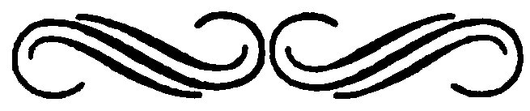
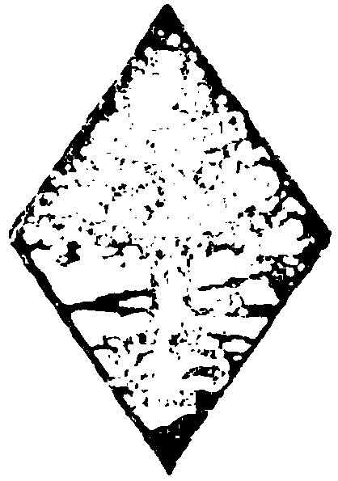

Title: The problem of lay-analyses
Author: Sigmund Freud
Author of introduction, etc.: Sándor Ferenczi
Translator: A. Paul Maerker-Branden
James Strachey
Release date: May 3, 2025 [eBook #76004]
Language: English
Original publication: New York: Brentano's, 1927
Other information and formats: www.gutenberg.org/ebooks/76004
Credits: Richard Tonsing and the Online Distributed Proofreading Team at https://www.pgdp.net (This book was produced from images made available by the HathiTrust Digital Library.)
Transcriber’s Note:
New original cover art included with this eBook is granted to the public domain.


| INTRODUCTION | 11 |
| THE PROBLEM OF LAY-ANALYSES | 25 |
| AN AUTOBIOGRAPHICAL STUDY | 189 |
An all-pervading feeling of profound responsibility to society in general, can be the only reason for a man, by far the most celebrated expert in his special field of endeavor, not to try to maintain a monopoly of his scientific findings, but make them accessible to the public. Such altruism is so much more remarkable if this man happens to be a member of the Æsculapian priesthood, a clan which, not unlike the Holy Roman Church, always assumed, and still assumes to a certain extent, an air of mysticism, for the purpose of barring the layman. For the very same reason—that of maintaining a monopoly—dead and obsolete languages are resorted to, for recording experiences in the form of technical terms, and even for the writing of prescriptions.
Of course, it must be admitted that the activities of insufficiently informed people, known as “quacks,” have done great damage to society. On the other hand, nobody will deny any more that the popularizing of modern 14hygiene, bacteriology, anatomy and pathology has proven a boon to humanity in general.
It is typical of the Father of Psychoanalysis, imbued with a deep sense of fairness towards mankind, that he has never indulged in a narrow-minded, professional point of view.
The mere accident that it remained for the science of medicine to discover the Psychology of the Unconscious and Psychoanalysis as such, was not enough reason for Sigmund Freud to treat his discovery as a strictly medical preserve.
Very helpful to Freud in this respect was the fact that he has a striking gift to make himself easily understood to the laity, in a manner usually not to be found in people specializing in the intricacies of science. Doubtless, Sigmund Freud’s astonishing gift to be his own best popularizer, unquestionably takes root in his ability to fathom the soul of others, to speak to each and everyone in their own language, as it were.
To my mind, Sigmund Freud’s treatise on The Problem of Lay-Analyses gives much 15more than the title promises. This treatise is a complete outline, succinct and lucid at the same time, of psychoanalysis in its present state. If anybody would ask me today what book I could recommend to him for the easy understanding and grasping of the very essence of Psychoanalysis, I should not hesitate to recommend The Problem of Lay-Analyses. This book, to my best knowledge and belief, appears to me exemplary in its lucidity.
Freud unhesitatingly and strongly criticises “quacks,” who attempt to employ psychoanalysis without first being fully prepared for such work. To him it does not make the slightest difference whether these “quacks” are medically trained men—most of whom have up to now given only scant sympathy to his teachings—or, medically unprepared laymen. Freud is of the opinion that it is not the medical training and the “M.D.” degree which makes a man a competent psychoanalyst, but rather inherent insight into the human soul—first of all, into the unconscious layers of his own soul—and practical training. According to Freud, there are just as many medical as 16non-medical “quacks” exploiting psychoanalysis to the detriment of the general public and the new science as such. Moreover, at the present time, the relations of psychoanalysis to sciences in general are at least as close as they are to biology and medicine. It would, therefore, seem unfair to exclude non-medically trained men and women from the circle of psychoanalysts.
Of course, Freud does not close his eyes to the danger lurking behind the possibility of confounding strictly organic diseases with so-called functional or nervous ailments. Only after it is ascertained beyond doubt, by thorough medical examination, that a patient is a subject for psychoanalytical treatment, does Freud permit him to participate in the benefits of this therapy.
The number of physicians is too limited and their duties in general too manifold to allow all of them to devote themselves to the study and the application of psychoanalysis, to an extent which would actually exhaust the healing qualities of this new science. A whole army of psychoanalysts alone would be necessary 17to treat all those so-called incorrigible children whose ailings and failings constitute a grave danger for the coming generation. Great numbers of trained psychoanalysts would also be necessary to attend to such “cases” as penal and insane institutions offer, for the purpose of gradually substituting sanitariums for penitentiaries.
“Criminal Therapy,” on a psychoanalytical basis, looms up to me as one of the biggest issues facing us, at the present time. Another issue, less urgent perhaps, is the psychological readjustment that thousands upon thousands need in their relations to family, profession and society in general. This opens a tremendous field for the analytically trained social workers.
Another field where applied psychoanalysis might become one of the indispensable necessities is the realm of education. All school teachers ought to have a thorough psychoanalytical training, so that we may entrust our children to them with more confidence. Finally—last but not least—all professional men whose work, in one way or another, has 18any bearing on the human soul, should be psychoanalytically trained. Anthropology, sociology, history, the psychology of art can no longer dispense with psychoanalysis.
It is in view of the extreme importance of psychoanalysis in all these fields of human endeavor that Freud asks whether the immeasurable advantages which the new science presents should be restricted, from sheer fear of a more or less studiously over-emphasized danger resulting from quackery. Dissemination of information seems to be the best agent for discouraging quackery and spreading dependable facts on the subject.
For the necessity of preparing an American edition of The Problem of Lay-Analyses so soon after the publication of the German original, I myself may serve as a witness. It was my good fortune to accompany Dr. Freud on his now almost historical Argonauts’ trip to America in 1909, and admire the courageous readiness with which America’s outstanding leaders in the fields of psychology and neurology interested themselves in Freud’s theories. At that time, Freud and his teachings 19were still the bone of contention in the camps of European scientists.
The Nestor of America’s psychology, Dr. G. Stanley Hall, enthusiastically embraced Freud’s teachings. Dr. William James, the great philosopher and psychologist, listened to our gospel with great interest, though not as enthusiastic as Dr. Hall. Touching to the extreme was that youthful thirst of knowledge, with which Dr. James J. Putnam, that grand old man of Harvard University, hung on the lips of Dr. Freud. It is due to the untiring efforts of these men and the translation of Freud’s books by Dr. A. A. Brill, that psychoanalysis, in a comparatively short time and to a surprisingly great extent, gained ground in all strata of society in the United States. It is a matter of record that America became interested in Psychoanalysis much quicker than Europe.
Now, visiting America again after almost twenty years, I had occasion to observe how lasting and far-reaching an influence Dr. Freud’s teachings exert on all strata of American society. Of course, not only Freud and 20what he stands for, but also psychology in general, especially as it is applied to education. Time and again, I have noticed that it seems fairly impossible to listen to a conversation for any length of time, without hearing problems of psychoanalysis and the name Freud mentioned.
Not less stimulating and informative than the first, is the second part of the present volume, containing Freud’s own story of his life and his science. It is common knowledge today that Freud, in his inimitable objectivity, has always published facts and fancies which other scientists would have been only too careful to hide from the eyes of their contemporaries.
On the occasion of Freud’s seventieth birthday, I wrote in The International Journal of Psychoanalysis (July/October 1926):
So far as his personality is concerned, he has completely taken the wind from the sails of modern methods of inquiry which attempts to gain fresh insight into the development of a scientist’s views, by studying the intimate details 21of his private life. In his “Traumdeutung” and “Psychopathologie des Alltagslebens”, Freud has undertaken this task himself in a way previously unknown, and has not only indicated new lines of research for this kind of inquiry, but given for all time an example of a candor quite ruthless towards himself. He has also revealed unhesitatingly the ‘secrets of the laboratory’, the inevitable vacillations and uncertainties that are usually so carefully kept hidden.
I hope that the reader will agree with me that the part of this book which contains Freud’s “An Autobiographical Study” again displays candor and frankness to an astonishing degree. This part of the present volume, aside from other information, will also demonstrate to the student of psychology the tolerance Freud manifests in regard to former disciples of his who, apparently driven by an overpowering impatience, or because “they did not fancy to dwell in the Depths of the Unconscious” only too early, and with deplorable rashness, hastened to generalize their ideas, notwithstanding the insufficiency of their theories to explain complicated facts. As 22far as I am personally concerned, I cannot help considering Freud as one of the most progressive disciples of his own teachings, while the apostates of his doctrine appear to me as prematurely aged reactionaries.
Equipped with devious excuses and devices, these apostates deserted the paths of Freud’s teachings—paths that require the courage of the born pioneer—to return to the broad and beaten paths of orthodox psychology and biology.
May I not once more quote myself in this connection?
On December 28, 1926, speaking before the Mid-winter meeting of the American Psychoanalytical Association, I said:
It is a great mistake to gauge the age of a person by the number of years he has lived. To remain productive and to be capable of changing one’s opinions is to stay young. Both of these attributes are highly characteristic of Professor Freud, as his latest works attest. One finds nothing in them of stagnation in dogmatic assertions or of exhaustion of the fantasy. Against his own earlier theses he is perhaps often too unsparing, and the breadth of 23his perspective often exceeds everything which he has created in the past.
In conclusion, I wish to express the hope that this book will assist in dissipating an erroneous belief prevalent in certain circles. It appears that the general public have a decided tendency to confound Freud’s teachings and psychoanalysis, as such, with the subject of sex. “According to Freud there is only one causa movens, and that is sex!” is one of their mis-statements.
Of course, faithful students of Freud’s teachings will never arrive at such fallacious deductions. True, the attentive reader of this book will find that Freud, as far as sex is concerned, allots to this instinct more importance than the prudery and hypocrisy of present-day society is ready to grant it. But, ever and again, Freud emphasizes the mastering of urges—not by repression, to be sure, but by elimination of all that which appears logically, ethically, and æsthetically undesirable.
New York, September 1927.
It appears to me that the title of this treatise may require an explanation. Let me, therefore, state that the problem of Lay-Analyses expresses itself most succinctly in the question of whether medically untrained laymen should be permitted to practise psychoanalysis.
This problem, timely in general, is subject to national laws.
It is a timely question, in so far as, up to now, apparently nobody ever cared who was practising psychoanalysis. As a matter of fact, too little attention was paid to the question into whose hands the employment of this new science was entrusted, with unanimity prevailing only in reference to a more or less strong tendency to wish that nobody at all should 28practise psychoanalysis. There were different reasons for this well-nigh general aversion.
The demand, then, now put before the legislatures of certain countries, that only physicians be permitted to apply psychoanalysis proves that, after all, a new, and apparently more tolerant opinion is becoming prevalent, as regards the recognition of our science. This new trend of putting the stamp of official and scientific approval on psychoanalysis, by reserving the monopoly of its application to medically trained men, must, however, first successfully clear itself of any and all suspicion of being nothing other than just a modification of the resistance hitherto shown towards psychoanalysis. Today, at last, it is admitted that, under certain circumstances, psychoanalytical treatment is in order. However, if it is to be applied, certain countries stand ready to impose the restriction that licensed physicians only shall be permitted to administer this treatment.
The problem before us right now, then, is why only physicians should be permitted to practise psychoanalysis. This is a problem 29subject to national laws. In the United States and Germany, for example, this problem does not amount to more than just an academic discussion, because in these countries a patient may receive treatment from anybody he chooses. In these countries, anybody who feels the inclination may treat, as a “quack” to be sure, “cases,” provided he stands ready to assume full responsibility for the effect of his treatment. Not before the authorities are actually appealed to to retaliate for such tangible harm as a patient may have suffered from the hands of an unlicensed practitioner of psychoanalysis, does the law interfere in the United States, Germany and many other countries.
In Austria, however, where I am writing this treatise, bearing in mind the special conditions which prevail there, in regard to the administration of psychoanalytical treatment, the authorities employ the law of the country as a preventive. In my country, without considering ultimate results, the law, in sweeping restrictions, enjoins all and sundry laymen from treating ailing people.
30In the Republic of Austria, therefore, there is a very practical aspect to the question of whether laymen should be permitted to treat ailing people with psychoanalysis. As a matter of fact, under present conditions, this question seems to be settled since it is already answered by the wording of the law, now appearing on the statutes of my country: Nervous people are unquestionably sick people; laymen are doubtlessly no licensed physicians; psychoanalysis is a remedy for the healing, or improvement, of nervous disorders. As in the eyes of the law, the latter are considered diseases and the treatment of all such ailments reserved for licensed physicians exclusively, laymen are liable to severe punishment when employing psychoanalysis for the treatment of nervous people.
In view of this plain state of affairs, one scarcely dares to approach the question of permitting the laity to practise psychoanalysis in Austria. However, in spite of the obviousness of the situation as a whole, there are some additional aspects to the question which, 31albeit the law does not take cognisance of them, should nevertheless be considered.
It may develop that in connection with psychoanalysis, people in need of treatment are not sick people, in the broad meaning of this term; laymen not always to be considered laymen, nor physicians what physicians are generally supposed to be—the very premise upon which these physicians base their claims. If such a state of affairs becomes apparent, it would be justifiable to insist upon a modification of the law, prohibiting the unlicensed practise of medicine, as far as the application of psychoanalytic treatment is concerned.
Whether this modification shall be enacted as a law will depend mostly on people who may not be expected to know the peculiarities of analytical treatment. It will be our task, therefore, to instruct these impartial referees, these typical laymen whom we will assume, for the time being, are completely uninformed. It is regrettable that we cannot arrange for them to attend an analytical treatment in the rôle of an observer. It is one of the peculiarities of the “analytical situation” that it will not suffer the presence of a third party.
Moreover, individual sessions are liable to be very unequal, as regards the information they may yield. Mr. Referee happening in at an analytical session, would probably not profit to any great extent. As a matter of fact, he might altogether misinterpret that which is discussed between the analyst and the patient. 33He may even become downright bored with the proceedings. Therefore Mr. Referee must needs be satisfied with the information we shall presently impart to him, endeavoring to set it forth as lucidly as possible.
Let us assume that the patient is suffering from attacks of moodiness, which he is unable to control, or else is the victim of a despondency so depressing as to paralyse his energy, causing him to lose all confidence in himself, manifesting extreme self-consciousness when among strangers. Without grasping the underlying elements of his case, the patient may observe that not only the discharge of his daily duties becomes more and more arduous for him, but also that he experiences difficulties when called upon to make a decision or embark upon some enterprise.
One day—utterly ignorant of the exact cause—he succumbs to an attack of fear. From then on, he is unable to cross a street alone, or board a train, without fighting off a certain inarticulate fear. This condition, as a matter of fact, may even become so pronounced as to render it absolutely impossible for him to 34cross a street, or board a train, unaccompanied.
Or—what appears very peculiar to him—his thoughts “wander”; they are no longer subject to his will. They attach themselves to problems which, in reality, do not interest him at all but which he is, nevertheless, unable to dismiss from his mind. He imposes perfectly ludicrous tasks upon himself, such as counting the windows along the street. When attending to simple functions, such as mailing a letter or turning off the gas, doubts harass him a few moments later, as to whether he has really dropped the letter into the mail box and whether he actually turned off the gas.
Perhaps such a condition is merely annoying at first, but it becomes intolerable when, in advanced stages, it proves impossible to shake off such preposterous ideas as having flung a child under the wheels of a car, or thrown somebody from a bridge into the river, or being haunted by the terrifying doubt of whether he is not in reality the murderer the police are trying to apprehend for the latest spectacular crime.
35All these delusions are utter nonsense, as he himself very well knows. He has never done any harm to anybody, but if he really were a fugitive from justice, this obsession, this feeling of contrition could not be stronger.
To take another case:—this time of a female patient, who is suffering in an entirely different way, presenting entirely different symptoms. We will assume that she is a pianiste, who suddenly experiences cramps in her fingers and discovers herself unable to play. As soon as she thinks of attending a social affair, she immediately feels the necessity of obeying a recurrent natural need, making it impossible for her to leave her own house. Thus, she has been forced to give up mingling with her friends, or attend dances, the theatre, or concerts.
At the most inopportune moments, she becomes the victim of headaches or other painful sensations. Eventually, after meals, she feels impelled to yield to nausea, a condition which, if prolonged, may become dangerous. Finally, she becomes absolutely unable to 36stand any of those little excitements which cannot be eliminated from daily life. Upon such occasions, she readily faints. As these spells are frequently complicated with muscular spasms, such attacks assume the aspect of dreadful afflictions.
Still other patients become subject to disturbances in a sphere where bodily functions coördinate with manifestations of sentiment. If men, they find themselves unable to give physiological expression to those tender urges that induce them to gravitate towards the other sex. On the other hand, all these physiological reactions may be at their command when not aimed at the person they cherish most. Then, there are still other cases, when bonds of sensuality will tie them to persons whom they actually despise and of whom they have the most earnest desire to free themselves. Or their sensuality imposes urges upon them whose fulfillment causes them to shudder.
If they be women, such patients, on account of fear or disgust, or from some other restraint of unknown origin, become unable to perform 37those functions which their sex imposes upon them. In cases where they have yielded to the prompting of passion, they discover that that gratification is withheld from them which nature normally offers as a reward for such complacency.
Sooner or later, all such persons come to consider themselves as sick and appeal to physicians, expecting to be cured of their nervous ailments. Physicians have classified these manifestations, diagnosing them differently, according to their own personal point of view. These ailments are listed under such terms as neurasthenia, psychasthenia, phobias and neuroses of different kinds, and with that sweeping term hysterics. The parts of the body inducing such disturbances are examined: the heart, the stomach, the intestines, the sex organs, and all are found to be in the best of condition. The physician then advises the patient to change his mode of living, to take a vacation, to exercise. Thus, with perhaps the aid of mild stimulants, the patient’s condition may, or may not, be temporarily relieved.
38Eventually, the patient is informed that there are certain practitioners who specialize in the treatment of just such ailments, and thus they come to be psychoanalysed.
Mr. Referee, whom we will assume is present, has impatiently listened, while we have given an account of the nervous disturbances with which one may be afflicted. Mr. Referee suddenly becomes attentive, expressing his growing interest in these words: “Well, now at last we shall see what the psychoanalyst will do with the patient, whom physicians could not help.”
To all appearances, nothing takes place between patient and psychoanalyst except that they talk with each other. The psychoanalyst does not take recourse to any instruments, while examining the patient, nor does he write out prescriptions. If it can be arranged, he will not even take the patient out of his usual surroundings, or upset his daily routine in any way, while treating him. Such a procedure is, of course, not of indispensable necessity, quite frequently proving impossible to arrange. Usually the analyst simply makes an 39appointment with his patient, then lets him talk, listens to him, lets him talk again and listens once more.
Mr. Referee now clearly manifests relief but, at the same time, his face also assumes a disdainful expression. Apparently, he thinks: “Is that all? ‘Words, words, words,’ as Prince Hamlet says. Is psychoanalysis perhaps some sort of magic rite, employing mere words with which to chase away a patient’s ailment?”
Quite right! It surely would be magic if it would only work faster. One of the indispensable essentialities of magic is quickness, sudden results. But psychoanalytical treatment demands months, sometimes even years. Proceeding at such a snail’s pace, it loses the character of anything resembling magic.
As far as “words, words, words” are concerned, they are surely not to be looked down upon. Words, after all, are a powerful instrument, the means by which we express our feelings to each other, the agent through which we influence one another. Words are able to benefit us in the extreme, or liable to hurt us to the quick. Doubtless, “in the beginning was 40the Deed” and the Word came only later. Under certain circumstances, the reduction of the Deed to the mere Word may even prove a cultural achievement. At any rate, the Word was originally an implement of sorcery, a magic manifestation which even today still retains much of its old potency.
Mr. Referee now remarks: “Assuming that the patient is not any better prepared for the understanding of psychoanalytical treatment, than I myself, how are you going to induce him to believe in the Magic of the Word, that is to deliver him from his sufferings?”
Of course, some preparatory work is necessary, but that is easily accomplished in a simple manner. The patient is asked to be absolutely frank with the psychoanalyst, not to withhold intentionally anything that crowds itself into his mind, and to overcome gradually all such influences as may exert themselves to prevent certain of his thoughts or memories from being communicated to the psychoanalyst.
There is not one of us but does not know 41that there are certain things which we hate to tell anybody else, or which we are utterly unable to express at all. These are the so-called “most intimate” things. We also surmise—and this proves the great progress that has been made in the psychological understanding of our Selves—that there are some other things which we hate to admit to ourselves, which we try to hide from ourselves and which, once they are accidentally touched upon, we immediately endeavor to crowd out of our thoughts.
Doubtless, the root of a very remarkable psychological problem manifests itself in the fact that there are certain of our thoughts which we try to hide from our very own Self! That would seem to indicate that our very own Self is not an indivisible unit, as we have always considered it! Rather, that there is a certain something which may rise in opposition to our very own Self! Vaguely, then, we surmise that our own Self and our soul life may be two different things! If, now, the patient submits to the demand of psychoanalysis to express everything in words that comes 42to his mind, he comes to believe that an interchange of thoughts, under such extraordinary conditions, is liable to lead to extraordinary results.
“I understand you very well,” Mr. Referee says. “You simply assume that everybody suffering from a nervous disturbance is harboring something that depresses him, some dark secret, perhaps, and by inducing him to impart this secret to you, you relieve him of that depression, thus alleviating his suffering. That, after all, is the very principle of the Confessional which the Catholic church has employed for centuries to wield her influence over her communicants.”
Yes and no, is our answer to this. The Confessional, to a certain extent, may be considered as belonging into the realm of psychoanalysis; leading up to it, as it were. However, the Confessional as such is far removed from coinciding with the very being of psychoanalysis, and it is unable to explain the results of psychoanalytical treatment. In the Confessional, the sinner tells what he knows, but in the Analysis, the neurotic is expected to reveal 43much more. Besides, there are no known cases where the Confessional proved effective enough to remedy direct symptoms of ailments.
“Then I don’t understand you after all,” Mr. Referee interjects. “What do you mean by stating that the neurotic is ‘expected to reveal more’ in the course of psychoanalytical treatment? Of course, I can very well imagine that you, as a psychoanalyst, may wield a greater influence over your patient than the Father Confessor over a penitent, for the simple reason that you become better acquainted with him, employing your growing influence to talk unhealthy thoughts out of your patient, as it were, disseminating his apprehensions, and so forth. Frankly, it appears most remarkable to me that by such a procedure, it should be possible to alleviate purely physical manifestations, such as nausea, diarrhœa, and cramps. I know that such results are possible by taking recourse to hypnosis. Most probably, through prolonged association with your patient, you gradually succeed in establishing hypnotic relations between you and him. By 44this I mean that you inadvertently come to exert upon him a suggestive influence. Thus, the miracle wrought by your therapy is nothing other than the result of hypnotic suggestion. However, as far as I know, results by hypnotic therapy are procured much quicker than by psychoanalysis which you yourself admit takes months, and sometimes even years.”
After all, Mr. Referee does not seem to be so utterly uninformed and helplessly at sea as we had considered him in the beginning. Doubtless, he is eagerly bent upon grasping the essence of psychoanalysis, on the basis of certain knowledge which he has acquired. He endeavors to connect psychoanalysis with something he already knows.
Thus, he forces upon us the difficult task of explaining to him that he will never succeed in comprehending psychoanalysis in this way, because psychoanalysis is a process sui generis, something new and peculiar, understandable only with the assistance of new conceptions, or presumptions.
However, we still owe our inquisitive friend a reply to a point raised by him.
45What you, Mr. Referee, mentioned before about the personal influence exerted by the psychoanalyst on his patient, should not go without comment. Such an influence actually prevails in the analysis, playing an important rôle. However, this influence is utterly unlike the influence induced by hypnosis.
I shall have to prove to you that the situations in these two cases decidedly differ from each other. However, for the time being, the statement may suffice that this personal influence—this “suggestive element” if you wish—is not drawn upon for the purpose of suppressing symptoms of nervous afflictions analogous to treatment by hypnotic suggestions. Besides, it is absolutely wrong to assume that this “suggestive element” is the agent and promoter of analytical treatment. It may be that such is the case right at the beginning of the treatment. Later, however, this very same “suggestive element” proves itself an opposing factor, forcing us to resort to extensive counter-measures.
Just let me explain to you how thoroughly opposed the technique of analysis is to anything 46and everything resembling the hypnotic technique of diverting or dissipating a patient’s apprehensions.
Assumed that our patient is obsessed with an intense feeling of being guilty of, say, some horrible crime, we do not advise him to stifle the qualms of his conscience simply on the strength of the fact that there is no doubt as to his innocence. He himself has already proceeded along this trend of reasoning, but to no avail. On the contrary, we try to impress him with the possibility that there may be something tangible at the bottom of so profound a feeling of guilt, and that it may be possible to detect this disturbing something.
“I should be greatly astonished,” Mr. Referee interrupts, “if you could really assuage your patient’s feeling of guilt by agreeing that there may be some tangible reason for his apprehension. But what is the mode of procedure which is applied in your analysis, and to what treatment do you subject your patient?”
To make myself perfectly plain to you, it will be necessary for me to acquaint you with certain psychological teachings which are not known beyond the circle of analysts and accordingly, not appreciated beyond this group. On the basis of this theory, it will be easy for you to deduce what we expect of the patient and how we go about obtaining it.
In explaining matters to you, I will allude to our theory dogmatically, as if it already were an accepted doctrine. Nevertheless, I do not want you to assume that our theory, as I shall presently put it before you, came into being as a fully developed, well-rounded out philosophical system. The development of our theory came about only very gradually, little by little, and was built up through continuous contact with observations. Moreover, our theory, in accordance with these observations, was continually modified until it 48finally evolved in a manner apparently satisfactory for our purposes.
Only so short a time as a few years back, it would have been necessary for me to express this theory in somewhat different terms. And even today, I cannot guarantee that the terms I am using are definitely fixed and will not be modified again. You know very well that scientific truths do not burst upon us with the unexpectedness of a sudden phenomenon. As a rule, any science, long after its early stages, lacks the character of definiteness, unchangeability, and infallibility for which our human way of thinking longs so intensely. However, any science, as it presents itself to contemporaries, is science as its best, so far as contemporaries are able to judge.
My introductory remarks, I hope, will assist you in gaining a correct perspective in reference to psychoanalysis, especially when I ask you to bear in mind that our specific science is still very young—hardly as old as our century, as a matter of fact—and deals with about the most difficult matter presenting itself to human research. Let me therefore 49encourage you to interrupt me unabashedly in my explanations, when you do not grasp the full meaning of my words and require further elucidation.
“I am already interrupting you, even before you really start. You say that you are going to acquaint me with a new psychology. But I was always under the impression that psychology as such is no new science. As a matter of fact, it seems to me there always has been enough psychology and enough psychologists. In college, I learned of the great things achieved in this realm of human endeavor.”
Far be it from me to deny these achievements. However, scrutinizing them closely, you will find that they rather belong in the category of sensory psychology. A doctrine of soul life never had a chance for development, because its conception was obstructed by one very essential misunderstanding. After all, what does psychology embrace today, as it is taught in colleges? Aside from a few important sensorimotoric perceptions, there are just a number of classifications and definitions referring to certain processes of the soul 50which, thanks to the fact that these terms have become a part of our living language, are now the common property of all educated people. To all appearances, such limited information does not enable us to clearly grasp our soul life.
Did you ever notice that every philosopher, poet, historian and biographer evolves his own psychology, based on individual presumptions, in regard to the connection and the ultimate purpose of psychological phenomena, all of which are more or less acceptable but altogether and equally unreliable? Seemingly, a common foundation is missing. Thus it happens that in the realm of psychology, there is an utter lack of respect and authority. There, obviously, anybody is permitted to “poach” or “freelance” to his heart’s content.
If you touch upon a question of physiology or chemistry, nobody will dare speak up, unless he is in possession of authentic information. However, when discussing psychological questions, you may expect everybody to venture an opinion, or raise his voice in protest. 51Evidently, there is no “professional knowledge” in his realm! Inasmuch as everybody has a soul life, everybody considers himself a born psychologist.
There is a story of an old woman who offered her services to take care of babies. When asked whether she knew anything about babies, her answer was: Why, sure, haven’t I been a baby myself once?
“And this common foundation of soul life, overlooked by all psychologists, you claim to have discovered through the observation of ailing people?”
I do not believe that the origin of our findings minimizes their value. Embryology, for example, would not enjoy any confidence as a science if it were unable to explain clearly the origin of pre-natal deformities.
You will remember that I have mentioned before persons whose thoughts insist upon travelling their own way. To such an extent as a matter of fact, that such persons are forced to ponder about problems which do not interest them at all.
Do you believe that psychology, as generally 52taught, will be in a position to render even so much as the slightest assistance for the explanation of such anomalies? And after all, there is not one of us whose thoughts, during the night, do not travel their very own way, creating visions which we are unable to interpret, which we are at a loss to understand, and which frequently appear to be, to an almost disquieting extent, products of morbidity.
I am now referring to our dream life! Among the majority of people, the opinion always prevailed, and still prevails, that there is an inherent meaning to dreams, that some attention ought to be paid to our nocturnal visions, that a certain interpretative value is attached to them. Orthodox psychologists have never been able to interpret the meaning of dreams. To them, dreams were something with which they did not know what to do. And as soon as orthodox psychology tried to interpret our dream life, their explanations ventured far afield from psychology proper. Dreams, according to them, were nothing other than the result of physiological sensations, originating from an unequal soundness 53of sleep in different parts of the brain. I venture to state right here, that any psychology unable to explain the essence of our dreams is also inapplicable to the understanding of normal soul life and cannot be expected to be recognized as science.
“You are becoming so aggressive that I surmise one of your sensitive spots has been touched upon. I have heard before that in psychoanalysis great value is attached to dreams, that dreams are interpreted and behind them old memories of actual events are sought. On the other hand, I also know that the interpretation of dreams is left to the arbitrary conception of the analyst and that the analysts between themselves have frequent squabbles, in regard to the question of how to interpret a certain dream and the justification of arriving at certain conclusions. If this is really the case, I do not think you should stress the advantage of psychoanalysis, in regard to orthodox psychology.”
There you have said something very appropriate. It is only too true that the interpretation of dreams in theory, as well as practice of 54psychoanalysis, has achieved incomparable importance.
If at this point, I appear to be aggressive to you, this must be looked upon as a defense mechanism. When I reflect upon all the nuisance brought about by some of our analysts in connection with the interpretation of dreams, I could despair. I feel like quoting the pessimistic truism of our great satirist Nestroy, who once said: “Any progress is only half as great as it seems to be in the beginning!” But haven’t you noticed that we mortals are always bent upon confounding everything and distorting it? Nevertheless, with a little caution and self-training, most of the dangers lurking behind the interpretation of dreams can be avoided.
But it will never be possible for me to get down to the explanation of our new science which I promised you, if we continually digress.
“If I understood you correctly, you were going to speak about the fundamental presumptions underlying the new psychology.”
It was not my intention to start with that. 55Rather, I intend to tell you what we have learned of the soul apparatus, in the course of our analytical studies.
“What do you mean by ‘soul apparatus’ and what is it made of, may I ask?”
You will soon enough see what the soul apparatus is. It is irrelevant to ask of what material it is made, as this question has no psychological interest. As far as psychology is concerned, the question of material is just as unimportant as the question would be in the realm of optic, of whether a telescope is made of metal or cardboard. The question of matter does not enter here at all, but there is great importance attached to the aspect of space.
This obscure soul apparatus, which serves as the agent for all processes of our soul, is conceived by us as an instrument consisting of several parts. Each of these parts we shall call a stage. There is an individual function attached to each of these stages, and all of them are correlated to each other in reference to space. Aspects of space like “near” and “far,” and “above” and “below,” for the time being, only serve to illustrate the regular sequence of 56the functions allotted to the different stages of the soul apparatus.—Do you still follow me?
“Hardly! However, I hope I will understand you eventually. At any rate, your explanation appeals to me as a somewhat peculiar description of the anatomy of the soul, which, according to biologists, is nonexistent.”
I will grant that what you call my “somewhat peculiar description of the anatomy of the soul,” is merely a parallel drawn upon for the purpose of elucidation, as is so often done in sciences. In the early stages of a new science such parallels have always been quite primitive,—open to revision, as it were. I consider it superfluous to strengthen my argument by referring to the frequently applied “if,” as is quite popular in such cases. The actual value of such “if” argumentations—“fiction” the philosopher Vaihinger would call it—greatly depends on how advantageously this argumentation may be applied to the case in question.
However, for argument’s sake, let us accept the popular conception and assume that within 57us there is a psychical organization, recording sensations and perceptions of physical wants on one hand, and releasing motoric actions on the other. This medium for establishing this definite coöperation we call the “I.”
Of course, this is nothing new. Each one of us takes this for granted, if he is not a philosopher, and some despite being philosophers. However, our description of the psychical apparatus is not by far complete.
Aside from the “I,” we perceive another region of the soul, much more extensive, much more impressive, and much more obscure than the “I,” which we designate the “It.”
It is the relation between the “I” and the “It” upon which we shall dwell first.
Doubtless, you will raise an objection against our intention to refer to these two regions or stages of the soul with simple pronouns, instead of giving them beautiful euphonious Greek names. However, in psychoanalysis, we prefer to remain in contact with the popular way of thinking, and attach commonplace terms to our scientific conceptions, rather than look upon such nomenclature in 58contempt. We do not expect to receive credit for this popularization of psychoanalytical terms, inasmuch as we are forced to do this in order to make ourselves plain to our patients who are frequently very intelligent, but not always exactly learned people.
The impersonal pronoun “It” is most appropriate for our purposes, as is plainly proved by the fact that we frequently speak of something, averring that “‘It’ came to me quite suddenly”; “‘It’ gave me a shock”; “‘It’ was stronger than I.” “C’était plus fort que moi.”
In the realm of psychology, we can only make ourselves understood by taking recourse to comparisons. This, after all, is no special peculiarity of psychology, inasmuch as other sciences also find it necessary to avail themselves of analogous expedients. These comparisons, however, must be modified time and again, as their application generally proves too limited. If you are seeking an explanation of the relation of the “I” to the “It,” it would be well to remember that the “I” serves as a foreground to the “It.” The “I” is, as it were, the outer, front layer of the “It.” We may so 59much more readily accept this comparison, inasmuch as layers—say, of a tree—owe their peculiar characteristics to the modifying influence of that exterior medium with which they are in contact. Thus, we visualize that the “I,” being the outer layer of the psychical apparatus, is the “It,” modified in accordance with the influence which the outer world exerts upon it.
Here you will perceive how conceptions of space apply to psychoanalysis. To all intents and purposes, the “I” is actually the front layer, the obvious, whereas the “It” is the inner layer, the hidden. To make it even more plain: The “I” is inserted between the reality of the outer world and the “It,” the latter constituting the soul proper, the essence of the soul, as it were.
“I am not going to inquire how you came to know all this. I should first like to know how this differentiation between the ‘I’ and the ‘It’ assists you in your psychoanalytical work, and why you need it.”
Your question clearly shows me how to proceed.
60It is most important and extremely valuable to know that the “I” and the “It,” in many instances, greatly differ from each other. As far as the “I” is concerned, psychical activations are subject to a different rule than the one applying to the “It.” The “I” has different intentions from the “It,” availing itself of means other than those resorted to by the “It.”
Of course, much could be said in this respect, but perhaps it will be best if I give you a new comparison and a new example. Just remember the differences which developed, during the late war, between the actual front and the hinterland. We were apparently never surprised to observe that there were certain things going on at the front, utterly different from analogous developments in the hinterland, and that in the hinterland many a thing was permissible which had to be strictly prohibited at the front. In the war, the deciding factor, of course, was the proximity of the enemy. In our psychical life, the deciding factor is the proximity of the outer world. Remember that in ancient times “outside,” “strange,” “hostile,” used to be identical conceptions.
61And now, the example I promised you: The “It” is never assailed by any conflicts. Within the “It,” contradiction and opposition dwell undisturbed in close proximity to each other, frequently equalizing one another by means of compromise. However, while the “It” thus remains undisturbed, the “I” cannot avoid facing conflicts, and the only way for the “I” to escape the dilemma is by renouncing some particular intention, or urge, for the benefit of the other.
The “I” is controlled by a very remarkable trend for unification, for synthesis—a characteristic utterly lacking in the “It.” The latter never manifests such unity of intention, but rather displays a tendency towards dissipation and a diversity of aims, utterly independent of one another, and without regard to each other.
“If there really is such an important hinterland of the soul, how do you explain the fact that it was never discovered before the advent of psychoanalysis?”
By this question, you are leading us back to one of your former inquiries. Let me advise 62you, then, that orthodox psychology blocked its own way to the “It,” by holding on tenaciously to a presumption which, in itself, seemed obviously enough but which, nevertheless, cannot be successfully sustained any more. It was presumed that all psychical activations are conscious, that consciousness is the characteristic of any psychological process, and that if there really were unconscious processes of our brain, these processes did not deserve to be termed psychological processes, having nothing at all to do with psychology proper.
“I should say that this is self-evident!”
Of course. That is exactly what all the orthodox psychologists claim. However, it is easy enough to prove that such a view is incorrect, or rather amounts to an impractical separation. Observing ourselves, we easily perceive that many of our thoughts could not have arisen unless they were induced by certain premises. However, of the preparatory stages of these thoughts, which must have been psychical, too, we are unaware, inasmuch as only 63the complete result enters into our consciousness. Once in a while, it may be possible for us to reconstruct the development of a thought by retrospective contemplation.
“Most probably, our attention had been diverted so that we missed observing the development of the thought in the making, so to speak.”
That’s just an obvious excuse!—insufficient to obscure the fact that quite frequently psychical activations—and often highly complicated ones, too—may occur in our soul life without our becoming actually aware of them. Alas, you may be ready to accept the hypothesis that just a little more or less of your “attention” may prove sufficient to transmute a non-psychical action into a psychical one. But why squabble? The existence of unconscious thoughts has been proven in hypnotic experiments, time and again, to the satisfaction of everybody.
“I don’t wish to deny that, and I actually believe I am now beginning to understand you at last. What you are terming the ‘I’ is the 64Conscious while the ‘It’ describes the so-called Subconscious, which is so much discussed just now. But why, pray, this masquerade of new terms, if I may ask?”
This is no masquerade, inasmuch as other terms cannot be employed here properly. Besides, let me ask you not to substitute literature for science. If somebody refers to the Subconscious, I don’t know whether he is alluding to it as a stratum, that is, something dwelling in the soul beneath the Conscious, or whether he refers to it as to quality, that is, another consciousness, a subterranean one, so to say. To be sure, the greatest probability seems to be that anybody juggling such terms is himself not at all sure of what he really means. The only permissible differentiation is one between Conscious and Unconscious.
Nevertheless, it would be a severe error to believe that a differentiation between Conscious and Unconscious would be analogous to a differentiation between the “I” and the “It.” It would be too wonderful, if it were as simple as all that, and it would be easy going for our theory then. But, it is not so 65simple! Correct only is that everything that occurs within the “It” is and remains unconscious, and that only activities of the “I” may become conscious. However, not all these activities are conscious, nor are they always conscious, nor do they necessarily have to become conscious. Parts of the “I” may remain permanently unconscious.
The penetration into Consciousness of a psychical process is quite complicated. I cannot avoid demonstrating to you—dogmatically once more—what our hypothesis is in this respect. You will remember that the “I” is the outer, peripheral layer of the “It.” We now assume that on this outermost surface of the “I,” there is a peculiar device, a system, an organ if you wish, by whose exclusive actuation that phenomenon is created which we call Consciousness. This organ may be actuated from the outside—that is, our sensory nerves may convey to it sensations of an outer world—as well as from the inside, where first it may perceive the sensations from the “It” and, later on, the processes of the “I.”
“This is getting worse and worse, and more 66and more beyond my understanding. Did you not invite me to discuss with you the question of whether or no, medically trained laymen should be permitted to apply psychoanalysis? Why, then, all these ramblings of vague and dark theories, whose correctness you will be unable to prove to me?”
Only too well do I realize that I cannot convince you. As that would be beyond all possibilities, I have, therefore, surrendered such intentions. Even when instructing our own disciples in the theory of psychoanalysis, we always observe how little impression we make on them in the beginning. They accept the analytical teachings with just as much equanimity as any other abstractions which have been fed to them. Some of them may have the earnest desire to be convinced, but there is no trace that they ever really are convinced.
We demand that anyone who intends to analyse somebody else, should first submit to an analysis. Only if in the course of this “self-analysis”—as it is usually incorrectly called—a 67disciple experiences the truth of psychoanalytical teachings on his own body—or rather on his own soul—then, and only then, he gains those convictions which later on will guide him in his work as an analyst.
How, then, may I expect to convince you, Mr. Referee, of the correctness of our theories, especially as I can only give you an incomplete, abbreviated, and, therefore, none too lucid outline of psychoanalytical teachings, without your being able to corroborate it through your own experiences?
But such is not my intention at all! We are not discussing here the question of whether psychoanalysis is sense or nonsense, nor whether the premises of psychoanalysis are correct or full of grave fallacies. I am simply presenting our theories to you, because in this way it seems easiest to me to explain to you what is the real essence of psychoanalysis, what are its premises in reference to individual patients, and just what the treatment is that is administered to them. In this way, the problem of lay-analyses is projected in a striking 68light. If you have followed me up to now, you may rest assured that the worst is over and that from now on, everything will be much more comprehensible to you.
And now let me pause for a moment.
“I expect that, on the basis of psychoanalytical theories, you will explain to me how the development of a nervous ailment may be conceived!”
I shall try. For this purpose, however, it is necessary that we study our “I” and “It” from a new point of view. We shall have to look upon these two factors as to their dynamic values, that is, in regard to the forces active in and between them. You will remember that previously we restricted ourselves to the description of the psychical apparatus.
“I am only hoping that things won’t be so impossible to grasp.”
I do not think so. As a matter of fact, I believe that you will soon comprehend the whole system. To start with, let us assume that those forces which actuate the soul apparatus are generated by the different organs of our system, 70as the result of important needs of our body. Don’t forget what the poet-philosopher Schiller once said:
Hunger and Passion are two very powerful agents!
The needs of our body which stimulate the soul into action—actuate the soul, as I referred to it before—we call urges.
It is these urges which fill the “It.” All energies generated by the “It” were incepted by these urges. The powers of the “I” have no other origin either, inasmuch as they are derived from the “It.”
What, now, do these urges want?
They want to be satisfied, that is, they endeavor to create such situations whereby the needs of our body are gratified.
As soon as any tension, created by our urges, slackens simultaneously with the satisfied cravings of our body, our Consciousness experiences 71a pleasurable sensation, whereas an intensification of our urges will soon enough result in decided displeasure. In accordance with these fluctuations of pleasurable and distressing sensations, our soul apparatus regulates its activity. Thus, the rule of the Pleasure Principle manifests itself.
Intolerable conditions develop in case the urges of the “It” are not satisfied. Experience proves that situations of complete gratification can only be achieved in contact with the outer world. Thus, that part of the “It” which faces the outer world, i. e., the “I,” assumes its functions. While the driving power is produced by the “It,” it is the “I” which then assumes the management, takes the steering wheel in hand, so to speak, without which the coveted goal could never be reached.
It is characteristic of the urges of the “It” that they are always bent upon immediate, rash gratification without ever attaining their ends, but frequently exposing themselves to severe harm. Therefore, it devolves upon the “I” to forestall such failure, by mediating between the reckless demands of the “It” and 72the practical outer world. Thus, the censorial activity of the “I” makes itself felt in two different directions.
On one hand, the “I,” assisted by that organ which conveys to it the reactions of an outer world, scans the horizon, as it were, in an attempt to seize upon the most opportune moment for a harmless gratification of the urges prompting it. On the other hand, the “I” exerts a restraining influence on the “It,” controlling its “passions” and inducing its urges to postpone their gratification, or modify them, or renounce them for some compensation, as the case may be.
Restraining the reckless “It” in such a way, the “I” replaces the formerly predominant Pleasure Principle with the so-called Reality Principle which, although striving for the same ends as the Pleasure Principle, nevertheless considers such practical necessities as the outer world imposes.
Later on, the “I” discovers that there is another way of insuring gratification of urges than adaptation to the outer world. This newly discovered method consists of changing conditions 73in the outer world in such a way as to bring about circumstances favorable for gratification. This activity of the “I” constitutes its most supreme achievement. Sufficient discernment to perceive when it is opportune to stifle passions and when it is opportune to either face or fight the realities of the outer world is, after all, the Alpha and Omega of practical wisdom.
“As I understand you, the ‘It’ is by far the stronger of the two. How, then, is it possible that the ‘It’ will permit the weaker ‘I’ to hold sway over it?”
The “I” is well in a position to exert such influence over the “It,” provided its organization and efficiency is in no way hampered. Besides, access to all parts of the “It” must be such as to enable the “I” to bear sufficient influence on the “It.” There is no inherent opposition between the “I” and the “It,” both belonging together. In cases of normal health, it is practically impossible to distinguish between the two.
“All this appears quite clear to me. However, what I cannot understand is that under 74such ideal conditions, there could be any chance at all for disturbances to arise?”
You are perfectly right! As long as the “I” discharges its duties fully, and its relations to the “It” are maintained in a satisfactory manner, no nervous disturbances will develop. However, disturbances are liable to arise at some unsuspected spot. This will not surprise the well-informed pathologist, but merely confirms the fact that the most essential developments and evolvements contain the very germ for diseased conditions and the break down of functions.
“This is too learned for me! I cannot follow you any more!”
I shall have to digress for a little. You will admit that a human being is a puny, helpless thing in comparison to that tremendous outer world, full of destructive agencies. Any primitive being who did not develop a sufficiently strong “I” organisation, is subject to all these “traumata.” Such a primitive being will achieve no more than just a “blind” gratification of its urges, frequently to be destroyed in this way.
75The evolvement of an “I” is, most of all, a step towards insuring maintenance of life. Destruction as such does not teach anything. But after overcoming a trauma successfully, attention will be attracted by similar situations and danger will be signalized by a fear affect—a shortened reproduction of what was lived through during the trauma. This reaction to approaching danger results in an attempt at flight, which is maintained until sufficient strength is generated to oppose the danger arising from the outer world in an active manner, perhaps even by taking recourse to aggression.
“All this seems to be far, far different from what you promised me.”
You don’t realize how close I have already come to the fulfillment of my promise to you. Even in such living beings who later on develop an efficient “I” organisation, this “I” is quite weak in the years of childhood and only slightly different from the “It.”
And now, I ask you to visualize what would happen in case this powerless “I” is actuated by an urge arising from the “It”—an urge 76which the weak “I” would like to resist, because it feels that a gratification of this urge may involve danger, may result in a traumatic situation, a collision with the outer world.
Alas, the weak “I” cannot sum up enough strength to resist.
Then what?
Then, the “I” deals with the danger, arising from an “It”-inspired urge, in exactly the same way that an exterior danger would have to be faced. The “I” makes an attempt at flight, deserting this specific part of the “It” and leaving it to its fate. It refuses all such assistance as it usually renders to urges arising from the “It.” We refer to such a case as a repression of urges by the “I.”
For the time being, danger is thus parried, but to confound inner and outer world is certain to invite punishment. Running away from oneself is a thing that cannot be done! In a case of repression, the “I” succumbs to the Pleasure Principle which it otherwise strives to correct. Thus, it is the “I” upon which damage is inflicted in such cases of repression. This damage consists of the “I” 77experiencing a lasting restriction in its own sphere of rule. The repressed urge is now isolated, left to itself, unapproachable, and cannot be influenced. The repressed urge now goes its own way. Frequently, even after the “I” has attained power, it proves impossible to release this repression. With its synthesis disturbed, a part of the “It” remains forbidden ground to the “I.”
The isolated urge does not remain idle, however. Because normal gratification was denied it, it contrives to compensate itself by engendering psychical derivates which take its place and, connecting with other psychical activations, estrange them to the “I.” Finally, in the form of an unrecognizable substitute, the isolated urge penetrates to the “I” and to consciousness, presenting itself as what is known as a “symptom.”
We now become aware of what a nervous disturbance is. We perceive an “I” hampered in its synthesis, unable to exert any influence on certain parts of the “It.” In addition, the “I” must renounce some of its inherent activities, to avoid new collisions with the repressed 78urge. We perceive an “I” exhausting itself in mostly unavailing defensive measures against symptoms that are nothing other than results of the repression. Moreover, it becomes evident now that in the “It,” some urges have assumed independence. They aim at their own gratification without any concern for the whole, subject only to such primitive psychology as reigns in the lowermost depths of the “It.”
Observing such a state of affairs, we face the quite simple situation in which the “I,” attempting to repress certain parts of the “It,” proceeded in an utterly unsuitable manner. Consequently, the “I” has failed in its intention and now the “It” is taking revenge on the “I.” This revenge of the “It” on the “I” resulted in nothing less than a neurosis.
Accordingly, a neurosis is the result of a conflict between the “I” and the “It,” a conflict—as investigations will show—forced upon the “I,” because the latter insisted on maintaining its state of pliability, in reference to an outer world. The conflict, in fact, is one between the “It” and the outer world. However, 79because the “I,” faithful and true, takes sides with the outer world, it becomes entangled in this conflict of the “It” with the outer world.
Note that the condition of nervous disturbances is not induced by the conflict between the “I” and the “It” but rather by the fact that the “I,” for the purpose of settling this conflict, availed itself of the unsuitable agent of repression. As a rule, conflicts between reality and the “It” are unavoidable, and it is a routine task for the “I” to act as a mediator in such cases. That in the case of this specific conflict which we have under observation just now, the “I” took recourse to repression as agent, is due to the fact that at this time the “I” was powerless and immature. After all, repressions of lasting importance occur exclusively during early childhood!
“What a roundabout route you are taking! However, I shall heed your advice and will try not to criticize you. You were going to explain to me what psychoanalysis assumes to be the reason for neurosis and how such conditions may be combated. There are quite a number 80of questions which I shall ask you later on. At present, I am tempted to venture a theory based on your own trend of thought.
“You have pointed out to me this interrelation between outer world, and the ‘I’ and the ‘It.’ As an indispensable condition for the development of a neurosis, you have mentioned the fact that the ‘I,’ on account of its dependency on the outer world, opposes the ‘It.’ However, is not some other course for the ‘I’ possible? For example, could not the ‘I,’ in such a conflict be simply swept off its feet by the ‘It,’ so to speak, renouncing all dependency on the outer world?
“What, then, happens in such a case?
“Of course, I have merely the conception of the typical lay mind when it comes to visualizing the development of mental diseases, but it seems to me that such diseases may be easily induced if the ‘I’ would really decide to side with the ‘It.’ To all appearances, such disregard for realities is the very reason for mental diseases!”
Of course, I have thought of this myself. I 81even believe this assumption to be correct. But in order to prove this hypothesis, quite a complicated discussion would be necessary. Neurosis and Psychosis, to all appearances, are closely related to one another. However, at some important point, they widely diverge from each other. The partisanship of the “I” with the “It,” in a case of conflict, may prove to be the crossroad where the two seek different directions. In both cases, the “It” would persist in its character of blind obstinacy.
“But, pray, tell me what advice your theory offers for the treatment of neurotic conditions?”
It is quite simple to describe our therapeutic goal: We aim at restituting the “I” and liberating it from its restrictions, restoring to the “I” once more the sovereignty over the “It” which it lost, on account of early repressions. Psychoanalysis, in general, aims at this goal; our whole technique strives for this end. It is up to us to discover those repressions, to induce the “I” to correct them with our assistance, and to settle conflicts more satisfactory than 82by a mere flight. Inasmuch as these repressions are part of our early childhood, psychoanalysis must needs go back to those years of our life.
The way to those mostly forgotten conflict situations, which we must revive in the memory of our “cases,” is pointed out to us by symptoms, dreams, and “free associations” of the patient. Of course, all these hints must first be interpreted, translated, as it were, because these symptoms and dreams, under the influence of the psychology of the “It,” have assumed various disguises which it is our purpose to penetrate.
If a patient communicates to us certain ideas, thoughts and memories after long hesitation only, we feel safe in assuming that they have some connection with his early repressions, or are, at least, derivates of such. By encouraging the patient to conquer his hesitancy when talking to us, we are training his “I” to overcome its tendency to “run away” and rather face that early repression. At the end, after we have been successful in reproducing the situation which originally induced his repression, 83the complacency of the patient is splendidly rewarded. The number of years that have meanwhile elapsed prove to be all in favor of the patient. What once scared his immature “I” and threw it into panic and flight, appears to the adult-strengthened “I” nothing more than just a childish bugaboo.
“Everything you spoke of so far pertained to psychology. Frequently it sounded somewhat strange and far-fetched to me and altogether none too clear. But at any rate, everything you said was, if I may say so, clean! I admit, without hesitation, that I have never had more than just superficial information in regard to psychoanalysis. However, I have been told, time and again, that your psychoanalysis deals for the most part, with things to which generally the word ‘clean’ may not be applied readily.
“To be quite frank with you: I have a slight suspicion that, up to now, you have intentionally avoided to touch upon this phase of psychoanalysis.
“There is still another doubt in my mind which I cannot suppress:—Neuroses, as you said yourself, are the result of disturbances of our soul life. How is it possible, then, that such 85important factors as our ethics, our conscience, our ideals, apparently do not enter at all into the development of these far-reaching disturbances?”
I understand you quite well. It appears to you that in the information I have given you so far, I have attached insufficient importance to the most vulgar, as well as the most sublime aspects of the matter. The reason for this is simply that, up to now, we have not spoken about the substance of psychical life at all.
For once, permit me to delay the progress of our conversation.
I have told you so much about psychology, in order that you may see that our analysis is just a part of applied psychology; to be sure, that part of psychology which is unknown beyond the field of analysis. From this, it follows that it must be the first task of the Analyst to become acquainted with the Psychology of the Depths, or Psychology of the Unconscious, to the very extent it is known today. It will be well to bear this fact in mind, as we shall later on refer to it.
And now, I wish you would explain what 86you meant when referring to the lack of “cleanliness” in psychoanalysis?
“Well, the general impression which prevails is that, in the course of the analysis; the most intimate and the most revolting phases of sex life are aired with all their sordid details. Of course, I do not draw this conclusion from the lecture on psychology you have given me so far! But if this is really true, it would constitute a strong argument in favor of the demand that the practice of psychoanalysis should be restricted to physicians. How else would it be possible to confide such details to persons whose discretion may be open to doubt, and whose character may not warrant such frankness on the part of a patient?”
It is true enough that physicians are privileged characters, as regards sexual matters. In our times, physicians may even examine sex organs, a prerogative denied to them in the dark ages.
However, you wished to know whether sexual matters play an important part in psychoanalysis.
They do!
87There is a necessity for this because, in the first place, frankness is an indispensable condition for the efficacy of the analysis. But don’t forget that, in the course of an analysis, the patient will be just as frank in financial matters. He will give details which he otherwise would withhold, not only from the tax collector and his competitors, but practically from everybody. That such frankness on the part of the patient puts the analyst under a heavy obligation, imposing upon him a severe moral responsibility, I surely do not deny, but rather stress energetically.
The second necessity for airing the sex life in psychoanalysis is proved by the established fact that, among the reasons and causes for nervous disturbances, phases of the sex life play a tremendously important, a most essential part; they may even prove to be the specific reason of such disturbances.
Could psychoanalysis, under such circumstances, do anything else than adapt itself to this state of affairs? The analyst never persuades his patient to venture into the realm of sex. He will never tell a patient in advance: 88intimacies of your sex life are involved here! The analyst permits the patient to start where he feels inclined to start, encouraging him to roam in any fashion that suits his fancy, waiting calmly for the patient himself to touch upon sex matters.
It is one of my strictest rules to remind my disciples time and again: Our opponents are reiterating continuously that we shall run across cases in which the sexual moment does not play any part whatever. Therefore, beware of introducing it into the analysis! Do not let us spoil the possibility of really discovering cases, in which there is no sexual moment. To be sure, up to now, we have never been fortunate enough to detect such a case.
Of course, I know very well that the recognition we give sex life is—admitted or not—the strongest argument of those who oppose the analysis. But is this fact liable to make us waver in our scientific convictions? An argument of this kind only proves how widespread neurosis is in civilized life, when allegedly normal people behave so very much like nervous people.
89At a time when learned societies, with much pomp and circumstance, used to sit in judgment on psychoanalysis—they are not doing it so frequently today!—one of the speakers once commanded special attention as an authority because, according to his statement, he permitted his patients to talk about their ailments. Apparently, he indulged in such tolerance for reasons of diagnosis, and for the purpose of checking up analytical claims. But, this great authority added, as soon as patients start to discuss sex matters, I shut them up!
How does such a procedure strike you?
I regret to report that the learned audience applauded the great authority fervently, instead of denouncing him, which would have been more fitting. That loose logic in which the aforementioned authority permitted himself to revel, I can only explain by assuming that he was all puffed up with that strength which the knowledge of mutual prejudice lent him.
In the course of years, some of my disciples, following a popular trend, undertook to liberate the world from the bonds of sex which 90psychoanalysis is supposed to force upon it. One of them came out with the pronunciamento that sex, in the broad meaning of the term, does not mean sexuality as such, but rather something abstract, something quite mysterious. Another even emphatically declared that sex life was just one of the different phases in which man manifests his inherent driving force for power and rule. These new doctrines received public acclaim—at least for a time.
“I strongly feel like taking sides in this issue. It seems somewhat far-fetched to me to insist that sexuality is not a natural, innate necessity for all living beings, but rather the expression for something else. Just look upon the animal world!”
That does not matter! There is nothing absurd enough that society would not gleefully swallow, if it only pretends to be an antidote against the overpowering might of sex.
By the way, may I not tell you that, to my mind, your present status as an impartial listener, a lay arbitrator, as it were, should not permit you to betray the strong prejudice you 91yourself are manifesting, in regard to the great part the sexual moment plays in the development of neurotic conditions! Do you not think that such a strongly emphasized prejudice may make it impossible for you to render a just verdict?
“I am very sorry to hear you say that! Apparently, you have lost confidence in me. But, pray, tell me, why did you not appeal to some other impartial referee?”
For the simple reason that this other impartial referee would not have thought any differently from you. And in case he would have been ready to admit at once the importance of sex life, everybody would have howled: He is no impartial referee at all! He is one of your own camp followers!
No, I am not the least discouraged and I am not abandoning hope that I shall ultimately succeed in influencing your views. I will admit, however, that the present case is different from the one I have previously alluded to. As far as orthodox psychological argumentation was concerned, it did not matter much for me whether you believed what I 92said or not. It was merely important to impress you with the fact that purely psychological problems were being dealt with. However, when the question of sex is raised, it seems important to prove to you that the strongest reason for your opposition is nothing but a general animosity toward sex, which you have in common with many others.
“Do not forget that I lack the experiences upon which your firm convictions are based.”
Very well, then. I shall proceed.
Sex life is not only something piquant, but also a very serious scientific problem. Many new facts had to be ascertained in this phase of life, many peculiarities. I have already explained to you that it is necessary for the analysis to go back to the years of early childhood because at this time, with an immature “I,” still weak, the essential repressions of a patient are incepted. But childhood has no sex life;—sex life enters with puberty only, is the general claim.
Wrong!
We have discovered that sexual tendencies 93permeate life from very birth. We also ascertained that it is to combat these urges that the infantile “I” resorts to repressions. It is indeed remarkable, is it not, that even the wee babe fights against the very same sexuality against which that learned great authority talked before an equally learned audience;—and later on, those of my own disciples, even, who compiled some new theories!
How is that possible?
The most platitudinous explanation would be that our whole civilization unfolded at the expense of sexuality. However, there is much more to be said about this.
That only now the sexuality of the child has been discovered, ought to drive the blush of shame into our faces. Of course, there were always some specialists of children’s diseases, some baby-wise nurses who knew about it. On the other hand, men, calling themselves “child psychologists,” in the face of these findings, raised a hue and cry and, wringing their hands in desperation, spoke reproachfully of the “Defloration of Childhood!”
94Again and again, sentiment instead of argument! Such tactics are generally resorted to in the course of political discussions.
Of course, the sex life of the child is different from that of the adult. Sexual functions, from the very beginning until they assume those ultimate forms which are well known to us, undergo a process of complicated development. Many component urges, each driving in a different direction, eventually consolidate, ultimately to serve the purpose of propagation.
Not all of the individual component urges prove of equal value, in view of the ultimate task they are called upon to serve. Many of them have to be “re-routed,” refashioned, partially subdued. Such a protracted process of development cannot always be pursued smoothly, without obstacles arising here and there and without engendering partial fixations in the course of the earlier stages. Wherever, in later life, sexual functions are blocked by obstacles of some kind, sexuality—the libido, as we call it—will show a decided 95tendency to gravitate towards such early fixations.
The study of the sex life of the child and its transformations, until full maturity, has also yielded to us the key for the understanding of so-called sexual perversions. These, while generally spoken of with profound disgust, up to then had remained obscure as to their origin. Although this phase of sex life is extraordinarily interesting, it does not serve our present purpose to dwell upon it in detail. To understand all these ramifications of sex life, it is not only necessary to possess sufficient anatomical and physiological information, but also that knowledge which cannot be acquired in medical schools, i. e., a thorough acquaintance with the history of civilization and mythology.
“Up to now, I am still unable to gain a clear conception of the sex life of the child.”
I shall, then, dwell on this phase further. To be perfectly frank with you, I should really hate not to go into it further.
The most remarkable thing in the sex life 96of the child, to my mind, is the fact that its whole, extensive development is completed in the course of the first five years of life. From then, until the beginning of puberty, there is a time when sex remains latent, a time during which—normally—sexuality is not progressing but rather losing in intensity. During these years, the child is liable to abandon and forget much that he has practised and known before.
It is during this period after the first bloom of sex life has withered, that such conceptions of the “I” develop as shame, disgust, morality, destined to serve as support later on, in the storm and stress of puberty, and to direct newly awakened sexual tendencies. This new, second phase of sex life plays a very important part in the inception of nervous disturbances. Apparently, it is only in man that this twofold onset of sex life prevails. It is, perhaps, this which is one of the contributing factors to the truly human prerogative to indulge in neuroses.
Before the advent of psychoanalysis, the early period of sex life had been overlooked, 97just as had the unconscious background of conscious soul life. If you should now suspect that both belong together, you have guessed correctly.
There is abundant material, of the greatest interest as to contents, manifestations, and performances of this early period of sex life,—material, as a matter of fact, that would prove most astonishing.
For example: It will amaze you, no doubt, when I tell you that the baby boy is frequently afraid of being devoured by his father. (Does it not surprise you that I list this fear among the manifestations of sex?)
Let me remind you here of the mythological character of the god Cronus, who eats his own children. How this myth must have astounded you, when it was related to you for the first time! Most probably, you, like the rest of us, did not pause to ponder over it.
Today, we frequently recognize, in such fairytale characters as the carnivorous wolf in Little Red Riding Hood, the child-devouring father in disguise. Let me assure 98you that mythology, as well as the world of fairytales, can be understood only on the basis of the sex life of the child.
It may also surprise you to learn that the male child is beset with fears of having his father rob him of his sex organ, and that this fear of being castrated is of the greatest influence, in connection with the general development of a male child’s character and his sexual tendencies, in later life.
Here is another case where psychoanalysis may draw upon mythology for support. Remember that the same Cronus who devoured his own children, also emasculated his own father Uranos, to be castrated, in revenge, by his son Zeus, who had been saved through the perspicacity of his mother.
In case you are inclined to believe that all that which has been said about the early sexuality of children is just a phantasmagoria of the wild fancies of a psychoanalyst, you must nevertheless admit that these wild fancies are very similar to those ideas which permeated the phantasy of primitive man, of 99which myths and fairytales are the tangible record.
Does it not seem more acceptable and more probable that in the soul life of present-day children, the same archaic moments still prevail, which generally prevailed at the time of primitive civilization? To all appearances, the child, in the development of his soul, simply recapitulates the evolution of his species, analogous to the recapitulation of his physical development, which has long since been accepted by embryology.
Another characteristic of the early sexual life of the male child is that the female sex organ as such does not play any part in it; it has not been discovered for him yet. All interest is directed to the male organ, all attention concentrated on the question of whether this organ is really existent.
We know less about the early sex life of the female child than about that of the male offspring,—a fact not so surprising since the sex life of even the mature woman still presents a “dark continent” to psychology. Nevertheless, 100we know that the female child is extremely sensitive about the lack of a sex organ equal to that of the male child. Accordingly, the girl comes to consider herself inferior to the boy, developing a condition of “Penis Envy,” from which may be traced a whole chain of reactions characteristic of the female.
Another characteristic of the child is that excremental discharges of the body are drawn into the sphere of sexual interest. To be sure, education eventually draws a strict line of demarkation here. Later in life, however, this demarkation line is wiped out, when the stage of “off-color jokes” sets in. Although this may be distasteful to us it is, nevertheless, well known that the child requires some time, before he develops a sense of disgust. Even those who insist upon the seraphic purity of a child’s soul have never dared to deny this fact.
No other manifestation in the sex life of the child is more important than the fact that sexual desires of a child always aim at persons most closely related to him. Such inclinations lean primarily toward the father and the mother; secondarily, toward sisters and brothers. 101While for the boy, the mother is the first object of love, for the girl it is the father, unless bisexual tendencies favor different inclinations. That parent toward whom the sexual tendencies of the child do not gravitate, comes to be considered a disturbing rival and thus, not too rarely, becomes the object of intense enmity.
Be sure to understand me correctly. I do not mean to say that the child is bent upon receiving from the favored parent, only such demonstrations of affection which we adults are wont to consider the very essence of a beautiful relationship between parent and child. In the light of psychoanalysis, there is no doubt that the child desires much more than merely these demonstrations of parental affection. As a matter of fact, the child desires that which we conceive as sensual gratification, though naturally, only to the limited extent of the child’s understanding.
It is obvious enough that the child never surmises the real facts as to the actual physical relations of the sexes, but this ignorance is compensated by impressions and experiences 102deducted from his own observations. Usually, a child’s desires culminate in the wish to give birth to a baby, or beget one, in some vague manner.
Even the little boy, in his ignorance, has this desire to give birth to a child.
Such manifestations, in their entirety, are termed, in accordance with Greek mythology, Œdipus Complex.
Normally, an Œdipus Complex should be abandoned or thoroughly changed, simultaneously with the termination of early sex life. The results of this transformation of the Œdipus Complex are destined to bring about great achievements, to play a big part in later soul life.
As a rule, this transformation is not thorough enough. Therefore, during the period of puberty, the Œdipus Complex may be revived, in which case it is liable to induce dire results.
I am very much surprised that you are still silent. Could this mean agreement?
No doubt, if psychoanalysis maintains that the first sexual desires of a child are of incestuous 103nature, to apply a technical term, there is no question that psychoanalysis has again trodden upon humanity’s holiest feelings, thus once more incurring accusations, disbelief, and opposition.
Psychoanalysis always had to face grave incriminations, but nothing has robbed psychoanalysis of a favorable opinion on the part of its contemporaries more than the conception of the Œdipus Complex, as a general human characteristic, decreed by fate.
To be sure, Greek mythology must have similarly interpreted the Œdipus situation, but the majority of our contemporaries—be they learned or not—prefer to believe that nature herself has endowed us with an inborn disgust, as a protection against the possibility of an incestuous trend.
But here we may refer to history for corroboration. When Cæsar met Egypt’s youthful queen, soon to play such an important part in his life, Cleopatra was married to her younger brother Ptolemy. This was nothing extraordinary in Egyptian dynastic tradition. The Ptolemæëns, originally of Greek extraction, 104had simply continued a custom practised for thousands of years by their predecessors, the old Pharaohs. Incestuous relationships, a common practice at that time, were after all, only between brother and sister, which even today evokes a comparatively mild judgment. But let us turn to our most important witness—mythology—for conditions, as they prevailed in primitive times.
Mythology records that the myths, not only of the Greeks, but of all nations, supply an over-abundance of amorous relations between father and daughter, and even between mother and son; cosmology, as well as genealogy, of royal families was founded on incest.
According to your mind, what was the underlying reason for the creation of this lore? Was it to brand gods and kings as criminals, to invite the disgust of mankind upon their heads?
It was rather that the gratification of incestuous desires—an ancient, human heritage, never completely overcome—was still permissible for gods and their offspring, although renounced by the majority of common mortals.
105From this, it would appear, that incestuous desires, in the childhood of the individual, are in complete harmony with the teachings of history and mythology.
“I am glad that you did not stand by your original intention to withhold from me all this information, in regard to the sex life of the child, inasmuch as it throws a very interesting light on the more primitive stage of humanity.”
I was afraid that in so doing, I might digress too far. But, after all, it may prove of advantage that you have these informations now.
“But tell me, what proofs have you, from an analytical point of view, of the sex life of the child? Is your conviction founded merely on the corroboration that mythology and history offer?”
Not at all! Our conviction rests upon direct observations. Here is how we arrived at our conclusions:—In the first place, sex life of childhood was revealed to us in the analysis of adults, who volunteered this information. Then, we proceeded to analyse children, and it was no small triumph when we succeeded in 106proving everything which we had deducted from the information of adults, despite the fact that as regarded the adults, twenty to forty years had passed, during which time these memories had been submerged and undergone substantial changes.
“What! You really ventured to analyse little children, tots of less than six years? How could such a thing be done at all? And wasn’t that hazardous, as far as the children were concerned?”
It was easy enough to do.
You would hardly believe what takes place in the brain of a child of four or five years. At this age, children are mentally very alert. For them, the period of early sexuality is also a period of intellectual bloom. I am under the impression that children, with the beginning of the period of latency, experience a mental let-down; grow temporarily dull, so to speak. During this period, many children also begin to lose their physical charm.
As far as possible damage, arising from an early analysis is concerned, let me assure you that the first child to undergo this experiment—about 107twenty years ago—has meanwhile grown up to be a sound and efficient young man who, despite severe psychological traumata, passed through his pubescent period without complaint. This fact encourages me to expect that all the other “victims” will not fare any worse.
Analyses of children yield various interesting results. Possibly, in future, they will grow in importance. As far as theoretical findings are concerned, there can be no doubt as to the value of these analyses. As children give unequivocal information on questions which only yield hazy results in the analyses of adults, the analyst is protected against mistakes which might have proved to be serious. Analyses of children have the added advantage, in that those moments are seized upon unaware, when a neurosis is in the process of development. There can be no mistake about such observations in children.
To be sure, in the interest of the child, it is necessary to combine analytical influence with educational measures. This is a technique still to be perfected. There is practical interest attached 108to this problem, because observations prove that a great number of our children, during their period of development, pass through a clearly discernable neurotic phase. Ever since we perceived these things more keenly, we have been tempted to venture that neurotic conditions of children are not the exception, but rather the rule. It appears that in view of infantile tendencies to neuroses, such trend of developments cannot be avoided in the course of civilisatoric progress. In most cases, such neurotic taints are spontaneously thrown off during childhood. The question remains, however, whether traces of them are not frequently left, even in such individuals as are considered of average health.
On the other hand, there is no neurotic adult in whom infantile tendencies toward neuroses cannot be discerned, although originally they may not necessarily have been so very obvious. Analogous to this, specialists for internal diseases claim, I believe, that every individual during the time of his childhood passes through a tubercular condition.
Let me return to your question of proofs.
109From direct analytical observation of children, we concluded that in general the information which adults had given us, in reference to their childhood, had been correctly interpreted by us. In some cases, it was even possible to obtain confirmation of a different kind. For example:—From material unearthed by the analysis, it was possible to reconstruct certain occurrences and impressive events of childhood, of which the conscious memory of the patient was no longer aware. Fortunate accidents or information supplied by parents and educators yielded unquestionable proof that the analyst had correctly reconstructed these impressions and experiences of childhood.
Such proof, of course, could not be obtained very frequently, but whenever it was obtained, it created an overpowering impression. You must know that the correct reconstruction of such forgotten experiences of childhood always results in a tremendous therapeutic effect, no matter whether such reconstructions may be objectively confirmed or not. The importance attached to these events is naturally 110derived from the fact that these experiences occurred in early childhood, when they could still affect the feeble “I” traumatically.
“What may those events be which analysis must unearth for therapeutic purposes?”
Events of various nature.
In the first place, impressions strong enough to permanently influence the awakening sex life of the child, such as observation of sexual intercourse between adults or personal sexual experiences with an adult or some other child—occurrences not at all rare. Then, overhearing the conversation of adults, at a time when the child did not fully comprehend the significance, but which, when the child came to grasp the real meaning, conveyed to him knowledge to be coveted because of the air of secrecy and mystery attached to it. Furthermore, utterances and actions of the child himself, demonstrating a decidedly tender or else hateful inclination toward other persons. It is of special importance, in the course of the analysis, to revive cases of forgotten personal sexual indulgence, and the interference of 111adults which served to terminate these habits.
“It seems to be my turn, now, to ask a question which I have had on my mind for a long time. What do you call ‘sexual indulgence’ of a child, during his period of early sexuality which, as you say, is a time that was completely overlooked before the advent of psychoanalysis?”
Of course that which is usual and essential in this indulgence had not been overlooked. This is not so remarkable, because it simply couldn’t be overlooked. Sexual tendencies of the child find their expression mainly in masturbation. That this childish “naughtiness” is extraordinarily common was always known to adults. It is considered a grave sin, to be energetically suppressed.
But please do not ask me how such “immoral” tendencies in children—and children admit that they indulge in them because they give them pleasure!—can co-exist with that inborn purity and non-sensuality of which we love to prate. You had better ask our opponents to solve this puzzle for you.
112A much more important problem is facing us now:—What is the position to take towards sexual indulgence in early childhood?
There is not the slightest doubt as to the responsibility incurred by suppressing such actions and, on the other hand, one dare not permit it to go on, limitless.
It appears that sexuality of children is unrestricted among peoples of low civilization and in the lower strata of civilized people. Such tolerance may amount to a strong protection against the possibility of neuroses cropping up in later years, but the question is whether there does not then remain a concurrent, extraordinary loss in regard to an individual’s aptness for cultural achievements. It seems we are facing a case of Scylla and Charybdis there.
However, I shall leave it to you to decide whether such interest, as the study of sex life may have for neurotics, would tend to create an atmosphere, favorable for the awakening of libidinous desires.
“I think I know now what your intentions are:—You wish to show me just what knowledge is necessary for the practice of psychoanalysis, so that I may be able to judge whether physicians alone shall be permitted to apply this method. Up to now, you have mainly discussed psychology, and a little biology or sex science, without a decided medical slant. However, I may not have heard everything yet.”
Certainly not. There are still a number of gaps to be filled. But may I ask you a favor? Will you be good enough to describe to me how you imagine psychoanalytical treatment is applied? Just pretend as if it were up to you to analyse a patient.
“Well, I may make quite a mess of this! It is surely not my intention to settle the argument between us, on the basis of such an experiment. However, I shall do as you ask. 114After all, the responsibility falls upon your shoulders.
“Now then: I assume that the patient comes to see me and embarks upon a recital of his complaints. I promise him to cure, or at least improve, his condition, provided that he will follow my instructions. Then, I would ask him to tell me, in all frankness, what he knows, what ideas enter his mind. I should also request him to make a clean breast of everything, even though there may be things which he would hate to mention. Am I adhering to your methods?”
You are! But, in addition you should have the patient tell you all his thoughts, even if they seem unimportant to him or lacking in sense.
“Very well.—The patient, then, starts to relate his story and I listen. And what next? Oh, yes, his information will make it possible for me to conclude what impressions, experiences and desires he may have repressed, because he came face to face with them at a time when his ‘I’ was still weak and too intimidated to face the dilemma squarely.
115“After I have told that to the patient, he will reconstruct the old situations and correct his reactions to them with my assistance. Thus, the repressions, his ‘I’ had been forced to resort to, will disappear and he is cured.—Is that correct?”
Very good, indeed.—I already foresee that more people are going to reproach me for having trained a non-medical man to practise psychoanalysis. I surely must admit that you digested what I told you.
“I have only repeated what you told me, like reciting something that has been committed to memory.
“But I do not feel able to clearly visualize how I really would go about it. I cannot understand why such an analysis should require an hour or more a day, for a period of months. As a rule, the average human being has not met with so many experiences. And as far as repressions during childhood are concerned, I assume that these are probably identical in all cases.”
There are many new experiences to make in the course of an analysis.
116For example: You would find that it is not so simple at all, from the information a patient may volunteer, to draw conclusions as to those of his experiences which he has forgotten, the urges which he once repressed.
A patient may tell you something which, at the moment, has just as little sense for you as for him. You will have to make up your mind that the material which the patient lays before you, in accordance with the instruction you gave him, must be interpreted in a special way. Analogous, perhaps, to the treatment iron ore receives for the purpose of extracting from it valuable steel by some special process. In retaining this picture, for the purpose of comparison, you must know that tons and tons of iron ore contain only very little of the valuable steel for which you are looking. This is one reason which would account for the fact that psychoanalytical treatment is such a long drawn-out process.
“But how is this ‘iron ore’ to be converted, to apply your comparison once more?”
By assuming that the information and ideas of a patient are nothing but distorted pictures 117of those impressions and experiences you are trying to unearth. Hints, as it were, from which you would have to conclude what is really behind them. To press it into a formula: the information a patient yields, be it memories, ideas or dreams, will have to be interpreted first. This interpretation, of course, must be guided by the expectations you formed of the case on the basis of professional knowledge, while listening to the patient’s recital.
“‘Interpretation’! What a dreadful word! I do not like to hear this term because, in applying it, you are depriving me of all confidence. If everything depends on my interpretation, who is going to assure me that my interpretation is correct? Such a state of affairs, according to my mind, simply means that everything is left to fancies and whims.”
Just a moment, now! Things are not as bad as all that. Why exclude processes of your own soul from the same rule which you are ready to admit to that of others?
Provided you have acquired a certain self-discipline and are in the possession of sufficient 118information, your interpretations will not be influenced by personal peculiarities, and are bound to prove correct.
Do not draw the conclusion from this that it is my opinion that the personality of the analyst does not make any difference, for this phase of the analysis. A certain sensitiveness for that which was unconsciously repressed, is necessary; also an aptness with which everybody is not equally endowed. Most of all, it is here where the absolute necessity for a thorough and searching self-analysis of the analyst is proved, for the purpose of precluding any prejudice that may drag a distorted element into the interpretation.
One thing, of course, still remains: Personal Equation, which, as an element of individuality, is destined to play a much more important part in psychoanalysis than anywhere else. Although an abnormal man may develop into an expert physicist, an analyst will always be handicapped by his own anomalies, when it comes to conceive pictures of soul life, free from distortions.
Inasmuch as it is impossible to prove to 119anybody his anomalies, general unanimity in the matter of Psychology of the Depths will prove especially difficult to achieve. There are even a handful of psychologists who claim it to be practically impossible ever to achieve such unanimity, and who also insist that every fool is entitled to proclaim his special brand of foolishness as wisdom.
I admit I am more optimistically inclined. After all, our experiences prove that, even in psychology, harmony of opinion may be achieved to a tolerably satisfactory degree. No doubt, each individual realm of science presents its own individual difficulties which have to be eliminated. Moreover, there are some aspects of the art of interpretation, as applied in analysis which, like some other knowledge, may be acquired by study. For example, those aspects pertaining to the peculiarly indirect representation by symbols.
“To be frank with you: I have lost all ambition, even to dabble theoretically with the application of psychoanalysis. Heaven knows what further surprises are still in store for me!”
120You are perfectly correct to abandon such an intention.
You have already convinced yourself how much training and practice is necessary. And once you have found the correct interpretations, a new problem presents itself. It is then up to you to lay in wait and virtually pounce upon the correct, the psychological moment, if you wish to acquaint your patient of your interpretations with the idea of benefiting him.
“How to tell what is the psychological moment?”
That is a matter of extreme tact which, by the way, may be greatly improved through experience. You would commit a very grave error if you would fling your interpretation, as soon as it had been ascertained, at the patient. This would only lead to resistance, refusal, indignation, but never result in his “I” getting a firm hold of whatever it was that caused his repressions. It is an iron clad rule to permit your patient to approach this elusive cause of repression close enough, to make it possible for him to obtain an immediate and strong 121grip on it, under the correctly timed guidance of the interpretation you may suggest.
“I am very much afraid that I would never master this art. But suppose that I observe this rule strictly, then what?”
Then it will be your lot to make a discovery which you did not expect to make.
“What kind of a discovery?”
That you had an entirely wrong opinion about your patient. That there is no reason in the world for you to depend on his coöperation or complacency. That, as a matter of fact, your patient is resolved to raise as many obstacles as possible against your combined exertions. With one word: that he does not altogether want to get well!
“Well, that is about the most ludicrous statement you have made so far! I simply don’t believe it! The patient, suffering so intensely, complaining so heartrendingly, sacrificing so much to be cured, actually does not want to get well! Is it possible you really mean what you say?”
I mean every word of it! What I have just stated is the truth. Not the whole truth, but a 122good deal of it. The patient wants, yet does not want, to get well. Because his “I” has lost its unity of purpose, it is preventing him from summing up undivided will power. Were the state of affairs a different one, our patient would not be a neurotic!
The results of his repression have simply invaded his “I,” firmly holding their ground there, so to speak. The “I” is wielding just as little influence over these effects as over the repression itself. Usually, the “I” is not at all aware of the prevailing state of affairs. These patients are of a peculiar type, putting difficulties in our way which we do not expect to encounter. All our social institutions are organized to fit individuals with a unified, normal “I,” which may be classified as either good or bad. This “I” either functions properly, or is impeded by some overwhelming influence. Thus, the forensic alternative: mentally responsible or not responsible.
But all these standard terms do not fit the neurotic!
Doubtless, it is difficult to adapt the demands of social life to their psychological condition. 123During the War, this was proved to a great extent.
Were those neurotics who shirked from military duty, pretending illness, simulants or not?
They were both!
As soon as such patients were treated as simulants, by making it uncomfortable for them to indulge in sickness, they recuperated; and as soon as allegedly cured patients had been returned to the rank and file, they once more became ill. There was simply no way to deal effectively with them.
Analogous to this is the case of the neurotic in everyday life.
They complain about their sickness, at the same time exploiting it to the limit. As a matter of fact, if an attempt is made to cure them of their ailment, they will protect this most cherished possession of theirs with the selfsame fervor with which a lioness defends her offspring. But there would be no sense in blaming neurotics for the contradictory behavior they display.
“Would it not be best, then, not to treat such 124difficult people at all? Simply leave them to themselves? It seems to me that it cannot possibly be worthwhile to spend as much effort on them as appears necessary, according to what you say.”
I do not agree with you on this point.
Doubtless, it seems wiser to simply submit to the complications which life presents, rather than to fight them. Not each and every one of the neurotics we treat may be worth the exertions of an analysis, but there are surely enough worthwhile individuals among them. It must be our goal to decrease the number of persons who are forced to face the exasperations of civilized life with a soul insufficiently prepared. To this end, we must collect experience upon experience, and come to fully grasp many problems. Every analysis is bound to prove instructive, yielding new knowledge, aside from the personal benefit it may confer upon an individual patient.
“Supposing that the ‘I’ of a patient developed such tendencies which would make him wish to retain the sickness of which he complains, would not these tendencies be justified, 125on the basis of certain reasons and motives? It is impossible for me to understand why somebody should want to be sick. What satisfaction could he derive from that?”
Just remember the war neurotics who were exempt from duty, because they were considered sick. In everyday life, sickness may be successfully employed as a screen, behind which to hide professional insufficiencies, or—in the circle of family life—as a means to induce relatives to make sacrifices, demonstrations of affection, or to foist one’s will upon them, generally. All this is quite obvious and comes under the term “sickness profit” (analogous to war profit). It is remarkable, however, that the neurotic, or rather his “I,” proves unable to grasp the connection of such motives with their logical consequences.
The influence of such tendencies to gain “sickness profit” is combated, by forcing the “I” to become aware of them. But there are still other, more obscure motives, for holding on to sickness, which cannot be disposed so easily. As a matter of fact, these reasons cannot be understood, without venturing once 126more into the sphere of psychological theories.
“Oh, go right ahead! A little theory, more or less—what does it matter?”
When I explained to you the relations between the “I” and the “It,” I withheld from you an important part of the soul apparatus. You see, within the “I” itself, there persists a particular faction which we call the “Super-Ego.”
This “Super-Ego” enjoys a privileged position between the “I” and the “It.” It belongs to the “I,” sharing with it its intricate psychological make-up. On the other hand, it entertains very close relations with the “It.” The “Super-Ego” is in reality the record of first impressions as conceived by the “It”; it is the heir of the dissolved Œdipus Complex.
This “Super-Ego,” as a matter of fact, is able to oppose the “I,” act towards it as if it were something inferior and, in general, treat it almost with contempt. For the “I” it is just as important to remain in agreement with the “Super-Ego” as with the “It.” Disagreement between the “Super-Ego” and the “I” is of far-reaching consequences for the soul life.
127Doubtless, you have already surmised that the “Super-Ego” is the agent of that phenomenon which we call our conscience.
For the maintenance of healthy soul life, it is very important that the “Super-Ego” develop normally, that is, becomes sufficiently impersonal. It is just this development which is insufficient in the neurotic, because his Œdipus Complex was not properly transformed. His “Super-Ego,” in regard to the “I,” still assumes the rôle of the strict father to the child, with the morality of the “I” manifesting itself in a primitive manner by meekly submitting to punishment, meted out by the “Super-Ego.” Sickness is resorted to, as the means of this “self-punishment.” The neurotic, behaving as if under a burden of guilt accepts sickness as a punishment to assuage this feeling of delinquency.
“That sounds very mysterious. But the most remarkable thing seems to be that the patient remains unconscious of the power of his conscience.”
Well, we are only now beginning to appreciate the importance of all these vital conditions. 128That is the reason why my explanations were so puzzling to you. But now, I believe I can continue.
All those agents which oppose the recuperation of a patient, we term the “resistance” of the patient. While “sickness profit” is the source of such resistance, the “unconscious feeling of guilt” represents the resistance of the “Super-Ego” of which, as the strongest factor, we are very much in fear.
But there are other manifestations of resistance which become evident in the process of treatment.
If the “I,” at an early period, was induced through fear, to take recourse to a repression, this fear still persists, manifesting itself now as a resistance, as soon as the “I” approaches that which was repressed. It is easy enough to realize that difficulties may be encountered, if a certain tendency, which for decades has proceeded along a specific course, is suddenly expected to swing into a new path opened to it.
Such a condition may be termed the resistance of the “It.”
The battle against all these resistances is our 129main work during the analytical treatment, in comparison with which the task of interpretation almost fades into insignificance. But by this battle and the ensuing defeat of resistances, the “I” of the patient is so transformed and strengthened that his future behavior, after the termination of the treatment, may be regarded with complete equanimity.
On the other hand, you will understand now why our treatment is so protracted. Expanse and multifariousness of the material are not as decisive factors as the question of whether the way is clear. Remember that the same course, which in times of peace, may be traveled in a few hours by railroad, may take an army, during wartime, weeks and weeks, because the resistance of the enemy must first be overcome. Battles to overcome resistance require time in soul life also. I am sorry to say that, up to now, all exertions to shorten the duration of analytical treatments to any appreciable degree, have proved unavailing. It seems that the best way to shorten the length of the treatment, is simply to apply it as correctly as possible.
130“If I ever felt the temptation to dabble with your science and to attempt to analyze a patient, your information in reference to those resistances, that may be encountered, cured me thoroughly of any such ambition.
“But, tell me about the element of personal influence which you have admitted is present in the analysis. Is this not a valuable factor in the battle against resistance?”
I am glad that you bring this question up. This personal influence is our strongest dynamic weapon; it is the agent which we introduce as something new, into the analytical situation, thus lending it impetus.
This could never be accomplished by the intellectual substance of our interpretation alone because the patient, sharing all the prejudices of his environment, need not have more faith in us than our scientific critics. The neurotic coöperates with the analyst simply because he believes in him, and he believes in him because he gradually develops a certain sentimental trend toward the analyst. A child, also, believes only persons to whom it is attached.
131I have already told you how we employ this especially great “suggestive” influence. Not to suppress the symptoms—it is here where the analytical method is utterly unlike any other psycho-therapeutical method!—but as a driving power to induce the “I” of the patient to defeat his resistances.
“And suppose you succeed? Would that insure easy sailing from then on?”
Such ought to be the case. But an unexpected complication arises.
It was perhaps the greatest surprise for the analyst to observe that the sentimental relations which the patient endeavors to establish, are of a very particular nature. Already the first physician who attempted analysis—it was not I—discovered this phenomenon, which served to bewilder him intensely. These sentimental relations are, to express it bluntly, of an amorous nature. Remarkable, isn’t it, if you take into consideration the fact that the analyst does nothing to invite such emotions, but rather endeavors to maintain distance, sentimentally speaking, between the patient and himself.
132All this is so much more remarkable, as these odd sentimental relations utterly disregard all such obstacles, as difference in age, sex, and social strata. This amorousness appears fated. Not that it constitutes a characteristic otherwise alien to spontaneous love. You are well aware that the contrary of this may be only too frequently observed. Although it is the rule in the analytical situation, the latter, as such, cannot serve as a rational explanation for this development. To all appearances, nothing else should result from the relation between the patient and the analyst, than just a certain measure of respect, confidence, gratitude and humane sympathy. However, what really results from it is this condition of attachment, which in itself gives the impression of being some disorder.
“Well, I should say that such a development would tend to favor analytical purposes. If one is enamoured, one is complacent and ready to do almost anything for love’s sweet sake.”
Of course, in the beginning, this condition favors the analysis, but later on, when these sentimental relations gradually become intensified, 133displaying their inherent nature, difficulties crop up which do not promote the aim of the analysis. You see, an enamoured patient is not satisfied merely to obey the analyst. The patient becomes presumptuous, demanding tenderness and sensual gratification. Eventually, jealousy develops and the lovelorn patient gradually arrives at a stage where more and more clearly, a preparedness for enmity and revenge is shown. Simultaneously, analogous to any other form of love, all other impulses of the soul are repressed, submerging the interest in treatment and recuperation. There is no doubt that love has assumed the place of the neurosis, and that our labors have simply resulted in substituting one disturbance for another.
“That sounds hopeless. What can be done? Perhaps analysis in such a case should be discarded. But since you say that every case yields this result, then analysis in general would have to be discarded.”
First, let us take stock of the situation in order to learn from it. Whatever is thus gained may assist us in mastering the situation. After 134all, is it not quite remarkable that we should succeed in transforming a neurotic condition into a state of unwholesome attachment?
Our conviction that neurotic conditions arise partly from abnormally directed sentimental tendencies, gains unquestionable corroboration by our findings. Ascertaining these facts, we feel more assured and dare to make this enamoured condition the object of analysis.
We also make another observation. This condition of amorousness, as part of the analysis, is not always so apparent in all cases, as I have tried to picture it to you.
And why isn’t that the case? We shall soon see.
In the same measure as the sensual and hostile aspects of a patient’s attachment endeavor to manifest themselves, the inherent opposition of the patient against such tendencies asserts itself. He combats them and attempts to repress them, before our very eyes. Thus we come to comprehend the whole development:—The patient merely repeats, in the form of being enamoured with the analyst, experiences 135of his soul life of days gone by. Certain tendencies of his soul, ready to burst forth, and closely connected with the inception of his neurosis, have simply been transferred by him to the analyst. He also repeats before our eyes all those gestures of opposition, gone through before, and would like nothing so much as to repeat in his relations with the analyst, all the phases of that forgotten period of his life.
What the patient is showing us now is accordingly the very nucleus of the most intimate story of his life. He is reproducing this nucleus in a tangible form, as if actual, instead of just remembering this incipient stage of his condition. Thus, the riddle of transferred love has been solved and the analysis, with the assistance of this new discovery which, for a time, almost seemed to wreck it, may be continued.
“That is surely complicated. Does the patient believe so easily that he is not in love, and merely feels forced to revive an old episode, as it were?”
Everything now depends upon the greatest dexterity in handling this “transference,” to 136achieve our objective. You will easily see that the demands of the analytical technique at this point are very exacting. It is here where the most serious mistakes may be committed, or the most splendid results achieved. Any attempt to evade these difficulties, by suppressing or neglecting the transference, would be senseless. Such evasion would not be deserving of the term of analysis. To send a patient home, as soon as the discomfort of a transference neurosis manifests itself, would also be senseless and would amount to cowardice. It would be approximately analogous to calling forth spirits and then running away, as soon as they put in their appearance.
Of course, there is no other way out sometimes. There are cases in which it is impossible to master an unshackled transference, and the analysis must then be terminated. But at least one should wrestle with these evil spirits to the best of one’s ability.
To give in to the demands of a transference—the desires of a patient for tenderness or sensual gratification—is impossible, not only for moral reasons but also as it would prove 137impractical, if resorted to as a means to achieve a successful analysis. A neurotic cannot be healed, by being permitted to indulge in uncorrected repetitions of situations which he unconsciously prepared. When making a compromise with a neurotic, by meeting him halfway, it is necessary to take care not to be manœuvred into the ludicrous position of the clergyman, who tried to convert the insurance agent with the result that the insurance agent did not join the church, but the clergyman took out a policy.
The only way out of the dilemma of transference is to delve into the past of the patient and reconstruct events as they were actually lived through by the patient, or else only pictured, with the assistance of his urge-stimulated imagination. For all this, the analyst requires much dexterity, patience, calmness and self-effacement.
“And where, do you think, did the neurotic meet the original of this transference love?”
In his childhood, and, as a rule, in one of his parents. You will readily remember how much importance we had to attach to these 138earliest of all sentimental relations. Here, the circle is completed.
“You have finished, then? To be frank with you, I am quite bewildered by all you have told me. But, now pray tell me, where to study all that is necessary to practise analysis?”
Two institutes serve this purpose by giving instruction in psychoanalysis. The first is in Berlin, in charge of Dr. Max Eitigon of the local organization. The second is maintained by the Vienna Psychoanalytical Society, with great sacrifice. The authorities, up to now, have thrown many obstacles in the path of the young institute. A third institute will be opened in London, by the local organization there and will be under the direction of Dr. E. Jones.
In all these institutes, the disciples themselves are analysed, and are then given theoretical instruction in all subjects important for them. When permitted to analyse their first, simple cases, they have the advantage of being under the supervision of more experienced analysts. The course usually requires about two years, but even after this period, a disciple 139is still a beginner, and not by far to be considered a master. What else the young analyst needs, he acquires thorough practice, and by intercourse with older colleagues.
The preparatory work for the analytical training is not at all simple: the work is hard, the responsibility tremendous.
Whoever attended such a course, has been analysed himself, has grasped the Psychology of the Unconscious, as far as it can be taught today, is sufficiently versed in the science of sex, and has acquired the difficult technique of psychoanalysis, including the art of interpretation, the method of combating resistances and the manner in which to handle transferences, can no longer be considered a layman, in the field of psychoanalysis. He is able to treat neurotic disturbances and will, in time, be in a position to achieve all that may be expected of this therapy.
“You have explained to me, at great length, what psychoanalysis is, and what knowledge is necessary to practise it with a chance for success. It certainly could not have hurt me to listen to you.
“However, I do not see how your informations are expected to influence my personal view. Neuroses, it would appear, are a certain form of disturbance, and psychoanalysis a certain method to treat such cases—a special medical treatment, as it were.
“I understand that it is the rule that any physician who intends to specialize in the one phase or the other of his science is not satisfied with the training he received before winning his diploma, but rather goes on studying the intricacies of his special field. This is especially a necessity, in case he intends to establish himself in a big city, the only place which opens a satisfactory field for specialists. Anybody 141who is going to specialize in surgical work, will practise, for a few years, in the surgical ward. Corresponding specialized work will be taken up by the eye or the nose and throat specialist, and the psychiatrist may forever remain on the staff of a city or county institution or a private sanitarium.
“The same method of development may be expected of the psychoanalyst. Whoever decides to take up this new medical specialty, after finishing his studies proper, will have to attend those institutes, for the duration of two years, which you have mentioned before, provided it really takes as long as that to gain the necessary knowledge. He will then also learn that it would be to his advantage to join a psychoanalytical society, in order to remain in contact with his colleagues.
“I really cannot understand why there is any necessity for raising this question of lay-analyses?”
Any physician, proceeding along the lines you suggested, shall be welcome to us. As a matter of fact, four-fifths of those whom I consider my disciples, are physicians. However, 142permit me to enlighten you as to relations, as they actually developed between physicians and psychoanalysis, and what development they appear to be taking in the future.
Past developments do not give physicians any right to claim a monopoly of psychoanalysis. As a matter of fact, physicians, in the past, have done about everything to damage psychoanalysis, beginning with superficial mockery and going even so far as to indulge in serious defamation. Of course, you may correctly say that all this belongs to the past, and should not have any influence on the future. I fully agree, but I am afraid that the future will not live up to your expectations.
At this point, permit me to interpret for you the term of “quack,” not in the way it is legally employed, but rather in the sense in which it should be logically applied. As far as the law is concerned, a “quack” is an individual who treats sick people, without being in the possession of a diploma. I, however, would rather qualify the term “quack” in this way: A “quack” is anybody who undertakes the treatment 143of a disease, without having the indispensable knowledge and ability.
On the basis of this definition, I venture to assert that—not only in the European countries—physicians, as far as psychoanalysis is concerned, constitute the majority of “quacks.” Frequently, physicians will employ psychoanalysis, without having studied it, and without sufficiently understanding it.
Do not tell me that this would display a lack of conscience, which you would not suspect in any physician. You might be tempted to say that, after all, a physician ought to know that a medical diploma does not constitute a “Letter of Marque,” and that a sick person should not be considered outlawed. As far as a physician is concerned, it should be taken for granted that he is proceeding in good faith, even if he makes a mistake.
However, facts are facts. Let us hope that it will be possible to explain these facts in a manner, which you apparently wish. I, for my part, shall try to explain to you how it is possible that a physician, in matters of psychoanalysis, 144takes liberties he would carefully avoid in any other specialized field.
In the first place, it must be taken in consideration that the training the medical student received is almost the very opposite of that which would be required of him, as a preparation for psychoanalysis. His attention has simply been focused upon facts which may be objectively ascertained, such as present themselves in anatomy, physics, and chemistry, and which must be understood properly and applied correctly, to achieve results.
As far as the psychological aspects of life are concerned, no interest is created in the medical student. The study of higher mental achievements is not considered to belong within the field of medicine, but rather into the realm of another science. Psychiatry alone is supposed to attend to disturbances of psychological functions, and it is only too well known in which way, and with what objective in view this is done: psychiatry simply tries to discover the physical reasons for psychological disturbances, treating them in turn like any other ailment.
145Psychiatry is correct in that respect, and medical training apparently excellent. Should it be maintained that psychiatry is one-sided, it will be necessary to fix the point of view from which such a reproach may arise.
Inherently, all science is one-sided, and must be one-sided, inasmuch as any science is limited to certain subjects, points of view, and methods. It is a nonsense which I do not wish to support that one science may be played against any other. Physics after all, does not minimize the value of chemistry; it cannot replace the latter nor be substituted for it. And, surely, psychoanalysis is especially one-sided, as the science of the psychological Unconscious.
Thus, the right to one-sidedness should not be denied to medicine.
However, a more practical point of view is gained if observations are not made as to scientific medicine, but rather as to practical healing. Sick people, presenting complicated problems, should impress upon us the fact that psychological manifestations—be they ever so hard to comprehend—cannot be simply eliminated 146from the picture. The neurotic, more than any other patient, presents an undesirable complication. He offers a dilemma, not less embarrassing to medicine than to law. However, as long as such cases exist, they are a responsibility especially of medicine. Nevertheless, medical training, sorry to say, is not paying sufficient attention to such conditions,—doing nothing for them. Absolutely nothing at all!
As there are very close inter-relations between those things we consider physical and those which we look upon as psychological, it may be expected that the day will come when organic biology and chemistry will finally approach the understanding of neurotic manifestations. This day, to be sure, seems to be in the distant future. At present, such ailments are still unapproachable, from a medical angle.
If medical training would only deny information to the student in the field of neurosis, this would be tolerable. But medical training is doing more. It implants into the young student an incorrect and harmful point of 147view. Physicians, whose interest for psychological facts has not been awakened, have naturally a tendency of making little of such facts, going even so far as to decry them as unscientific. Conditions of neurotic character are hardly ever taken seriously by them, while their lack of knowledge serves to breed disrespect for psychological research. Thus, neurosis is not accorded sufficient attention.
Of course, these neurotics must be treated when they consult physicians, and new discoveries must be tried out right along. But why go in for a protracted period of preparation? It can be done without that! After all, who knows whether there is really any value to that which is taught in psychoanalytical institutes?
Thus, as usual, lack of information results in a most daring spirit of enterprise. Only true initiates are modest, because they realize how insufficient their knowledge is!
From all this, it follows that it is impossible to draw upon a comparison of psychoanalysis with other branches of medicine, as you attempted to do.
148As far as surgery, and ophthalmology, are concerned, medical schools and post graduate courses offer sufficient opportunities for training. The psychoanalytical institutes are limited in number, young in years, and lack the aureola of authority. Medical science has not recognized them, nor does it give a hoot about them. On the other hand, the young physician who has been forced to believe his teachers, to such a degree, that he hardly ever had a chance to form his own judgment, will only be too glad to try his hand at playing the critic, in a field where there is no established authority as yet.
There are still other circumstances which favor the mushroom-like increase of young physicians as psychoanalytical “quacks.”
If a physician would undertake cataract operations, without sufficient training as an eye specialist, he would soon enough lose his patients. Compared to this, the application of psychoanalysis hardly involves any danger. The public, generally observing effective cataract operations, expects results from a physician pretending to be an eye specialist. However, 149if a nerve specialist does not achieve results, apparently nobody is surprised. We surely have not been spoiled by the efficacy of therapeutical treatment of nerve cases, and it seems to suffice that the physician “tried everything.” Nature must simply assert herself and time exert its healing propensities.
If the patient happens to be a young girl, it is first the menstruation which is expected to work wonders, then marriage, and in later years, change of life. In the end, death itself may finally prove the great healer.
Moreover, whatever the medical analyst employed in the treatment of such a case, is so inconspicuous, as to offer no cause for reproach. After all, he did not resort to instruments, nor did he write prescriptions. He just talked and talked, trying either to talk something into the patient, or out of the patient.
How could such treatment do any damage, especially as extreme care had been taken not to touch upon painful or exciting matters? The medical analyst, once he has thrown the strict instructions overboard that were given to him, will surely have tried to improve upon 150psychoanalysis by extracting from it certain features—poisonous fangs, as it were—to make analysis more acceptable to the patient. How splendid, if he really went only as far as that and not so far as to awaken resistances which he would be unable to cope with. He would be apt to make himself disliked in such a case!
Justice demands that it be admitted that an untrained analyst cannot do as much harm to a patient, as an untrained surgeon. The possible injury may amount to unnecessary expenditure of money and time, and chances for a cure may have either been destroyed, or else spoilt to a certain degree. In addition to this, the reputation of psychoanalytical therapy as a whole would suffer. All this is quite undesirable, but surely not as serious as the damage that may arise from the knife of a surgical “quack.” According to my observations, permanent aggravation of an ailment is not to be expected from the incorrect application of psychoanalysis. Reactions of an undesirable nature disappear quickly. In comparison to the traumata inflicted by life itself, which resulted 151in the disturbances, a little incorrect treatment does not amount to anything. The unsuitable therapeutical attempt has simply not benefited the patient.
“I have listened to your description of the ‘quack’ without interrupting you, and have gained the impression that your position in regard to physicians is barbed with hostility. The reason for this enmity is obvious, from the many hints you have dropped. At any rate, I am of the opinion that as long as psychoanalysis is to be employed, it should be only by such persons as are thoroughly trained for it. But it seems that you believe that even those physicians who may take up psychoanalysis, in the course of time, will not go in for the necessary thorough training?”
Exactly! As long as the relation between the medical schools and the psychological institutes prevail as they do today, I do not think that young physicians will resist the temptation of making things easy for themselves.
“It appears to me that you constantly avoid making any direct statement in regard to the problem of lay-analyses. Apparently, what 152you wish me to surmise now is that it would be your suggestion to withhold, as a means of revenge, as an act of punishment, so to speak, the monopoly of practising psychoanalysis from physicians, because such physicians as employ analysis, are beyond control. You would, however, permit the application of such medical activity to laymen.”
I am not so sure that you surmised my motives correctly. Perhaps, I may later on be in a position to prove to you that my point of view is not as partial as all that. But be that as it may, I strongly emphasize my demand that nobody should be permitted to practise psychoanalysis, unless he has obtained this privilege on the basis of thorough training. Whether such a person is a qualified physician or not does not seem important to me.
“What, then, are your practical suggestions?”
I am not as far as that yet. I don’t even know whether I shall ever get that far. There is some other question which I wish to take up with you, and by way of introduction, touch upon a certain point.
153It is reported that the authorities, on the strength of suggestions made by medical bodies, may put a sweeping prohibition for the practise of psychoanalysis by laymen on the statute books. Such prohibition would naturally also hit the non-medical members of psychoanalytical societies—men and women who have undergone a very thorough training and improved themselves greatly by practice. Should such a sweeping prohibition become an actual fact, the incongruous condition would then present itself whereby people really capable of applying psychoanalysis properly, would be excluded from this practice, while on the other hand, this privilege would be extended to individuals insufficiently informed, and not specially trained for such work.
Of course, no legislature aims at so absurd an effect.
But the dilemma that presents itself with this piece of legislature, is neither important nor difficult. It would concern only a handful of people who would not even suffer appreciably. Analogous to measures enacted by 154monarchical Austria, republican Austria could also resort to exception laws. Under the Hapsburg régime, it happened that certain “quacks” whose ability in the treatment of certain diseases was convincing, were privileged ad personam to treat sick people. These were mostly cases of rustic healers, who enjoyed the recommendation of one of those exalted, once so plentiful, archduchesses. However, it should be possible to assume that the benefit of such exception laws should also pertain to city inhabitants, who are recommended by mere experts.
Of course, if the law is put on the statutes in accordance with the wording of the bill now pending, the Vienna Psychoanalytical Institute, for example, would no longer be permitted to accept students, unless they belonged to the medical profession. All these endeavors to restrict the application of psychoanalysis hark back, more or less, to obsolete legislature, dealing with quackery as such. This seems anachronistic, inasmuch as at the time of the enactment of these anti-quackery laws, the 155particular nature of neurotic disturbances had not yet been discovered and psychoanalysis did not yet exist.
I am now approaching the question which appears most essential to me: Is the practice of psychoanalysis of such a nature as to lend itself to the interference of legislative authorities, or would it not be much better to leave psychoanalysis to its natural development?
Of course, I shall not decide this question, but I am taking the liberty of submitting it to you. It appears that in Austria, not unlike other countries, by the way, there prevails a real furor prohibendi, a veritable mania for prohibition and general interference, a trend which usually, as is only too well known, makes for unsatisfactory results. According to my own personal view, a superabundance of ordinances and prohibitions will only serve to injure the dignity of the law. It may usually be observed that wherever there are just a few laws, these laws are strictly adhered to, whereas where laws exist in great numbers, the temptation arises to break them.
156Furthermore, a man cannot be considered an anarchist, simply because he believes that legislative statutes—in the view of their very origin—cannot very well be regarded as something holy that must never be touched. Legislative measures sometimes are insufficient, or gradually become that, at the same time outraging our innate sense for justice and common sense. Then the time is on hand, where there is no other means of correcting such unbearable conditions than to simply trespass against such laws. It seems advisable, for the purpose of maintaining respect for laws and ordinances, not to enact any which may be difficult to enforce.
Much of what has been said here about the application of psychoanalysis by physicians would have to be repeated with regard to lay-analyses proper, which the legislatures of some countries are now prepared to prohibit. In view of the fact that the application of the analysis is a very simple procedure, consisting merely of conversation without resorting to instruments or prescriptions, it would be rather difficult to prove that a layman actually 157employed psychoanalysis, if he stoutly maintained that he had merely benefited a person by administering a good “talking to.” Such assistance, to a person in need of it, could not very well be prohibited simply because a physician may once in a while resort to the identical thing!
In English speaking countries, Christian Science has gained tremendous popularity. To my mind, it constitutes a dialectic abnegation of such evils as life presents, by resorting to the teaching of Christian religion. I do not hesitate to state that such measures strike me as a regrettable fallacy of the human mind. But who in the United States or England would ever think of prohibiting Christian Science or seek to punish its followers?
Generally speaking, is governmental authority always so certain to be on the right side? Assumed even that many, left to their own devices, would encounter danger and experience harm, would it not just the same be much better if governmental authority would merely indicate dangerous ground, but on the whole leave it to the individual to be 158taught by experience and mutual influence?
Psychoanalysis is so new, the broad masses so insufficiently informed about it, the official view of science still so vacillating, that it appears to me as premature to impede its progress by legislative measures.
Why not leave it to the patients themselves to learn that it is dangerous for them to apply for psychological assistance to persons who are not sufficiently informed?
If people are sufficiently enlightened and warned, prohibition will surely prove superfluous.
On Italian highways, poles, carrying high tension electric power, display this warning: “Chi tocca, muore!” Which has proven perfectly sufficient. In contrast to this, in other countries, for example Austria and Germany, this warning is of an insulting verbosity:— “Inasmuch as touching these high tension wires is dangerous to life, it is herewith strictly prohibited to meddle with them!” Why this prohibition? Whoever cherishes his life will not touch them, and whoever wants 159to commit suicide will surely not be detained by the warning.
“But there are cases which may be quoted as precedent for the prohibition of lay-analyses. For example, the law against the practice of hypnosis by laymen, and another enacted against occult séances and the organization of spiritualistic societies.”[1]
I must admit that it is beyond me to admire these measures. As far as the last mentioned prohibition is concerned, it surely constitutes a case of grave over-officiousness, encroaching upon intellectual freedom. As far as I am personally concerned, I do not think that anybody would suspect me of having faith in occult phenomena, or of being interested in its general acceptance. However, such prohibitive measures will never serve to stifle the interest that some people manifest for the alleged secrets of an occult world. Such officious interference may do a lot of damage by preventing impartial seekers for truth to arrive at a finding which would do away with 160occult misconceptions. Here also, we observe the fact that other countries do not interfere with so-called “parapsychic” research, but only Austria.
As far as hypnosis is concerned, it is somewhat different from analysis. Hypnosis is nothing else but induction of an abnormal condition of the soul, serving the layman merely as a means of entertainment. Had hypnotic therapy fulfilled its early promise, conditions would have evolved similar to those now prevailing in psychoanalysis.
Aside from this, the history of hypnosis contributes another precedent for the fate of psychoanalysis. When I was still a young instructor of neuropathology, physicians fervently fought against hypnosis, claiming it to be nothing but a fake, an infernal delusion, a most dangerous practice. Today, this same hypnosis has been monopolized by them. They are resorting to it as a method of examination. For some nerve specialists, hypnosis is their most important stock in trade.
However, I have already told you that I 161do not intend to discuss whether restriction by law or a hands-off policy would be the most correct procedure, concerning psychoanalysis. I know very well that this is a question of principle which will be decided by the inclination of influential people rather than by strict argumentation. What seems to me to suggest a policy of laissez faire I have already mentioned. But if the decision should be one for active interference, then, to be sure, it would appear to me as a one-sided and unjust measure to enact a sweeping prohibition against the practice of psychoanalysis by laymen. Then, it would be up to the legislature to fix the conditions under which the application of psychoanalysis would be permissible for those who would be privileged to employ it. It would also be necessary to appoint an authority who could be appealed to for information, who would decide what constitutes psychoanalysis, what the training would be, and how to administer it.
Thus, things must either be left alone or else order must be created and the situation, 162in general, clarified. But there is no use in simply interfering with a complicated situation, by means of a prohibition, which is based without much discretion, upon obsolete acts of an antiquated legislature.
“But the physicians! It seems I am really unable to bring you to the main point of our conversation. You are continually evading me. After all, the question before us is whether physicians should be given the exclusive right to employ psychoanalysis, that is, after they have fulfilled certain conditions, if you should insist upon such. According to your own statement, the majority of ‘quacks,’ dabbling with psychoanalysis, does not consist of physicians. You also admit that the greatest number of your disciples and followers are physicians. I have heard that these do not share your point of view, in regard to lay-analyses.
“Of course, it is to be expected that your disciples agree with you in the question of sufficient training. Just the same, they hold the laymen should be excluded from the practice of psychoanalysis. Is that really the case? And if so, how do you account for it?”
164You are correctly informed. Not all, but a great number of my medically trained collaborators do not side with me in this matter, but insist that psychoanalytical treatment of neurotics be exclusively reserved for physicians. From this, you may gather that even within the limits of our own camps, there prevails a difference of opinion. Although my point of view is very well known, the divergence of opinion in matters of lay-analyses, in no way interferes with an otherwise splendid harmony.
How to explain this position of some of my disciples?
I am not so sure, but I assume that professional pride is behind it. You see, their process of development has been different from mine. That they find themselves somewhat isolated from their colleagues, is still annoying them. They would like to be considered, by the profession as a whole, as members in good standing, so to say. Thus, in order to win the tolerance of their Æsculapian brothers, they are willing to make a sacrifice, whose value is apparently not clear to them.
165Of course, I may be wrong here. To assume that fear of competition is dictating their position, would not only amount to suspecting them of a low motive, but also condemn them for a peculiar shortsightedness. After all, as long as they are ready to initiate colleagues into psychoanalysis, it can be of no importance to them whether they will have to share prospective patients with them, or with laymen.
Probably, there is something else to be considered. They may be impressed by certain features which, in the practice of psychoanalysis assure the physician of an unquestionable advantage over the layman.
“There you are:—‘Assure the advantage’! At last, you admit this advantage! I should think this admission settles our argument.”
I admit this advantage. Perhaps by doing so I shall prove to you that I am not as passionately deluded as you think. I postponed mentioning these conditions, because in airing them, additional theoretical discussion is necessary.
“What are you driving at now?”
There is first the question of diagnosis. Before 166admitting a patient, suffering from nervous disturbances, to psychoanalytical treatment, one naturally desires to have as much assurance as possible that this therapy is suitable in that particular case, that is, that the patient has a good chance of being benefited by psychoanalysis. This can only be the case, if he is actually suffering from neurosis.
“I should think that would be easily ascertained, by the symptoms he complains about.”
You are putting your finger just on the point, where new complications may arise. It is not always possible to be perfectly sure of such a case. The patient, in spite of displaying all the visible symptoms of neurosis, may actually be suffering from something else. The incipient stage of a mental disease, for example, or the beginning of a process destroying his brain. To distinguish between such symptoms is not always easy or possible. Responsibility for such a decision must naturally be assumed by the physician alone. And as mentioned before, it is not so easy for him. For the longest time, an ailment may appear absolutely 167harmless, until finally manifesting its malignant character. Nervous people, as a rule, fear that they may be on the road to some mental disease.
Assumed that a physician has not correctly diagnosed a case, or has been unable to discover its true nature, nothing has been lost, no damage has been done. Analytical treatment, although not doing any harm to the patient, would have been superfluous in such a case. It might have given any number of people a chance to lay the blame for the unfortunate development of the case at the door of psychoanalysis. Unjustly so, to be sure, but such a likelihood should be avoided nevertheless.
“That sounds hopeless. It apparently tears out, by the very roots, everything you told me about the nature and development of a neurosis.”
Not at all. It only strengthens the fact that neurotics are a nuisance and a dilemma for all parties concerned, including the psychoanalysts. I may be able to alleviate your new apprehensions if I make myself clearer. Probably it would be more correct to say of such 168cases, as we now have under discussion, that they actually present neuroses. However, these neuroses are not psychic but rather somatic, that is, they do not originate from the soul, but rather from the body. Do you understand me?
“I do. But I am at a loss to connect all this with the psychological aspect.”
That can easily be done, if only complications of the living substance are sufficiently taken into consideration. What was the inherent feature of a neurosis? That the “I,” constituting the very essence of the soul, so to speak, developed and improved by the influence of the outer world, proved unable to fulfill its mediating functions between the “It” and reality; that the “I,” on account of its weakness, shirked its duties in regard to the “It,” thus incurring repressions from which it suffers. It is because such weakness of the “I” regularly takes place in all of us in childhood that events of our tender years exert such great importance in later life.
In the few years of our childhood, we have to cover the enormous distance of development 169from primitive man of the Stone Age to civilized man of today. In addition to this tremendous burden, the child has to ward off the urges of an early sexuality. Small wonder, then, that our “I” takes recourse to repressions, thus exposing itself to childhood neuroses, the effects of which in turn furnish the disposition for nervous disturbances in more mature years.
Everything now depends upon how the growing up individual will be treated by fate. If life is too hard, the divergence between urges and the opposition of reality too great, the “I” may remain unsuccessful in its endeavors to mediate between the two. This is the more probable, the more the “I” is encroached upon by such infantile dispositions as it may have acquired in tender years. Thus, the process of repression is repeated; urges tear themselves free from the sovereignty of the “I” to gain, by way of regression, a substitute for the gratification they crave, while the poor “I” has become helplessly neurotic.
Let us hold on firmly to this: that the most important, the pivotal point in the whole situation, 170so to speak, is the relative strength of the “I” in all its phases. It is easy, then, to complete our whole etiological survey, that is our endeavor to assign causes to the phenomena observed. We already know the normal causes for nervousness to be the infantile weakness of the “I,” the checking of early sexual urges, and the influence of chance episodes in our childhood.
But is there no possibility that there are also some other contributory factors, antedating childhood? For example, an inborn strength and unruliness of those urges which constitute the “It,” presenting right from the very start a task much too difficult for the “I”? Or could a certain weakness, existing for reasons unknown, in the development of the “I” be held responsible? Of course, all these possibilities will exert an etiological importance, in some cases of surpassing value.
The specific driving power of the “It” must always be taken into consideration, and wherever it is developed to an excessive degree, there are only meagre chances for a successful application of our therapy. Of the reasons 171that block the development of the “I,” we still know too little to account for such cases of neurosis which arise on a constitutional basis. It may be assumed that neurosis hardly ever develops unless there are constitutional or congenital factors increasing the possibility for such a condition. However, if it is correct that the relative weakness of the “I” is the deciding factor for the development of neuroses, then it would also appear possible that later, physical disturbances may result in a neurosis provided it also results in a weakening of the “I.”
This happens only too frequently. Such a physical disturbance may aim at the “It,” intensifying its urges to an extent where the “I” is not able to cope with them any more. As an example for such developments, the changes induced in woman by the disturbances of menstruation and menopause could perhaps be drawn upon. Other reasons that may weaken the “I” are general physical disturbances, organic diseases of the central nervous system. All of these may result in interference with those sources from which the soul apparatus 172draws its strength, to lead, in turn, to an encroachment of its more delicate functions, which are necessary to maintain unimpaired the whole “I” organization. In all these cases, neurosis presents about the same picture. However, while manifesting the same psychological mechanism, neuroses develop on the basis of a multifarious, frequently highly complicated etiology; that is, they arise from a great number of various causes.
“That suits me better. At last you have spoken like a physician. And now I am waiting for you to admit that so complicated a condition as a neurosis should only be treated by a physician.”
I am afraid you are expecting too much. What we have just discussed belonged in the realm of pathology. Psychoanalysis, however, is a therapeutical process. I admit, no, I even insist, that a physician should first diagnose each and every case where psychoanalysis seems applicable. Fortunately, the greater number of neuroses are of a psychical nature and not pathologically induced. As soon as the physician has ascertained this, he may safely 173leave the treatment to the lay-analyst. We have always followed this procedure within our analytical societies. Thanks to this close coöperation between the medically trained and non-trained members, errors almost never occur.
There is another emergency when the analyst has to invite the assistance of a physician. It is possible that, in the course of psychoanalytical treatment, symptoms—mostly of physical nature—appear which may either be part of the neurosis, or else manifestations of independent, organic disturbances. Here, the decision must once more be left to the physician.
“From all this, there follows that the analysts, even during the analysis, cannot dispense with the physician. This is another argument against lay-analyses.”
No, this possibility cannot be drawn upon as an argument against lay-analyses, because in an analogous case the medically trained analyst would not proceed any differently.
“I do not understand that.”
There is a rule that even a medically trained analyst, running across such dubious symptoms 174in the course of the treatment, is not to depend on his own judgment, but to consult some colleague, preferably a specialist of internal diseases.
“Why this rule, apparently so superfluous?”
This rule is not superfluous at all. There are several reasons for it. In the first place, it is hard to combine organic and psychical treatment. In the second place, the particular condition of transference frequently prevailing in analyses may make it inadvisable for the analyst to subject his patient to physical examination. In the third place, there are all the reasons in the world for the analyst to doubt his own opinion, inasmuch as he is so intensely interested in the psychical aspects of the case.
“I now understand your position towards lay-analyses. You insist that there must be lay-analysts. However, as you have to admit their insufficiency for the task, you compile everything that could serve to excuse them, and make things in general easier for them. To be frank with you, I cannot understand why we should have lay-analysts at all, inasmuch as they would never be more than second-class 175therapeutists. This need not include those few laymen who have already received their training, but institutes for psychological training should not accept laymen any more.”
I would assent to all this, if I could be shown that such restrictions would benefit all parties interested. You will admit that these interests are tri-fold:—There is the interest of the patient, the interest of the physicians, and last but not least, the interest of science which, in turn, includes the interest of all patients of the future. Let us investigate these three points.
It does not matter whether the patient be analysed by a physician or a layman, as long as any danger of mistaking his condition is excluded by being properly examined by a physician before the beginning of the treatment, or re-examined as soon as developments, in the course of the analysis, make this advisable. It is much more important for the patient that the analyst possesses those personal qualities which invite full confidence, and that he has that knowledge and experience which alone qualify him to apply psychoanalysis. To some 176people, it may seem that it might undermine the authority of the analyst to have his patient know that he is no physician and must obtain the advice of a medically trained expert in certain matters. However, although we have never kept a patient in the dark, as to the qualifications of an analyst, we have come to the conclusion that the patients have no prejudice against a non-medically trained analyst; they are only too glad to accept the benefits of treatment, wherever they offer themselves—a fact resented by the medical profession for the longest time.
It also must be considered that analysts, practising today, are men and women with academic training and degrees, pedagogues, of great experience and impressive personality. The analysis, to which all candidates of psychoanalytical institutes are required to submit, is the best means of testing their personal suitability for the performance of so exerting an activity as an analysis presents.
In reference to the interest of the physicians, I do not believe that medicine has anything to gain by annexing psychoanalysis. Today, medical 177training requires five years, with almost a whole sixth year taken up with examinations. Ever so often, new demands in regard to training are made with which the young student must comply, if his medical education is to be considered adequate. Generally speaking, while it is difficult today to enter the medical profession, the practice of medicine is neither very satisfactory nor very advantageous. And as soon as the undoubtedly justified necessity is realized that the physician be also informed of the psychological aspects of diseases, thus including in medical training a partial preparation for psychoanalysis, there would follow an extension of the medical curriculum and a corresponding extension of the period of training. I do not know how physicians would like such a development, arising from the monopoly they claim on psychoanalysis. But these demands would then have to be fulfilled and at a time when, in general, the material aspects of those strata of society which contribute the greatest contingent to the medical profession, are such that young physicians must establish a practice, as soon as possible.
178However, the medical profession may not intend to include preparation for psychoanalysis into the medical curriculum proper. The general opinion may be that it is much more practical for the young physician to acquire psychoanalytical knowledge only after having completed his medical education. It may be said that such a procedure would not involve any actual loss of time, inasmuch as a young man under thirty never gains that confidence of patients which is an indispensable condition for benefiting a patient psychoanalytically. Of course, it could be said that a young physician, too, who has just won his diploma, cannot command too much respect, as regards his opinion of the physical ailments of his patients, and that the young analyst could very well utilize his time, by working in a psychological clinic, under the supervision of an experienced practitioner.
It seems to me that the aforementioned demand amounts to a waste of energy which, in view of economic conditions, does not seem justified. Although analytical training invades the field of medical training, it neither includes 179this training, nor is included by it. If a psychoanalytical college were to be organized, which today may strike one as being a fantastic idea, the curriculum of this institution would have to include much of what is taught in medical schools. Aside from the Psychology of the Depths, which would naturally always be the main subject taught, Biology would have to be included in the course, and Science of Sex would also be one of the major subjects. In addition, adequate instruction would have to be given on such disturbances which belong in the realm of Psychiatry. Psychoanalytical training would have to include a number of subjects which have no connection with medicine, and never enter the physician’s practice, such as History of Civilization, Mythology, Psychology of Religion, and Literature. Without being well acquainted with these subjects, the analyst will be unable to grasp the problems that will face him in the course of his practice.
Most of the subjects, however, belonging to medical training, will not be of any use to him and although all this knowledge is highly 180valuable for those who need it, it would not assist the analyst to understand a neurotic condition nor to alleviate it. In case the objection is made here that specialists in other fields of medical endeavor, also do not need all the details they acquire in the course of their training, it must be said that such a case could not be considered analogous. For many branches of medicine, such facts as, for example, Pathology presents, are of great importance. The analyst, however, reaches out for a variety of experiences, with different phenomena, underlying different laws. Although philosophy may succeed in bridging the chasm between body and soul, as far as our own experience is concerned, this chasm, nevertheless, exists, presenting itself in an especially striking light, as regards our practical endeavors.
It seems unjust and impractical to force a person to take a roundabout route via medical training, if this person be bent upon relieving another individual from the agonies of a phobia or a fixed idea. Moreover, such a procedure would be ineffective, as long as psychoanalysis in general is not suppressed.
181Just imagine that somewhere in the country, there is a certain mountain top that can be reached by two different roads, the one being short and straight, and the other long and winding. An attempt is made to block the short road by a “no-trespass” sign. There is some chance of this sign being respected, if the short road is steep and difficult to climb, whereas the long road is easy to travel. However, if the detour should be the more difficult road, you can easily surmise how little the trespassing sign would be respected.
I am very much afraid it will be just as difficult to force the laymen to study medicine, as it is for me to induce physicians to study psychoanalysis. Human nature is like that.
“If you are correct in your assumption that analytical treatment cannot be administered without a special training, but that on the other hand the medical curriculum could not bear the burden of psychoanalytical training, and that medical knowledge, to the greatest extent, is superfluous for the analyst, how will we ever achieve the ideal medical personality, 182the physician who can cope with all the demands of his profession?”
I am unable to foresee how to solve these difficulties, and I do not feel called upon to make any suggestions. I only perceive two things clearly: firstly, that the analysis seems to constitute a dilemma, but certainly the neurotic is also a dilemma; secondly, that for the time being, all interests would be served if physicians resolve to tolerate a class of therapeutists who will relieve them of the arduous treatment of those tremendously frequent psychical neuroses, in addition benefiting the patients by remaining in constant contact with them.
“Is that your last word in reference to the problem of lay-analyses, or is there something else?”
There is a third interest to be considered:—that of science. Although what I have to say in that respect may not mean much to you, it nevertheless means a good deal to me.
We do not consider it advisable that psychoanalysis be swallowed up by medicine, finally to be shelved in a text-book of psychiatry, 183under the chapter heading of Therapy, together with such other treatments as Hypnotic Suggestion, Auto Suggestion, Persuasion which, due to lack of knowledge, were indebted for their short lives to the indolence and ignorance of the broad masses. Psychoanalysis deserves a better fate, which, let us hope, it will really attain.
As the Psychology of the Depths, the teaching of the Unconscious, psychoanalysis may prove indispensable to all sciences which deal with the development of human culture, and such of its great achievements as art, religion, and civilized society. Psychoanalysis has already appreciably assisted these sciences in the solution of their problems. But all this is insignificant, compared to what may be achieved through psychoanalysis in the future, when students of History, Psychology of Religion, and Etymology, will avail themselves to the fullest extent of the assistance psychoanalysis will be able to render them.
The employment of psychoanalysis for the treatment of neuroses is only one of its possibilities, and time may yet prove that this is 184not even the most important of them. At any rate, it would be unfair to sacrifice all other advantages of psychoanalysis, simply because there is just one phase where the application of psychoanalysis encroaches upon the preserves of medicine.
Here another aspect manifests itself which cannot be interfered with, without causing damage. If the representatives of the different sciences should really take up the study of psychoanalysis, to apply it in their own spheres of interest, it would not suffice for them to merely avail themselves of such results as have been recorded in psychoanalytical literature. They will have to come to an understanding of psychoanalysis in the only way possible, that is, by submitting themselves to analysis.
Thus, to the neurotics in need of analysis, a second class of persons would be added: those who undergo analysis for intellectual reasons and who would welcome that intensification of their efficiency which would result incidentally from analysis. To undertake these analyses, a number of analysts would be necessary for whom medical knowledge would be of 185specially limited importance. However, these instructor-analysts—as they ought to be called—are in need of an especially thorough training, which they can only obtain if they are given opportunities to study interesting and convincing cases. Inasmuch as healthy persons do not feel the necessity and curiosity to be analysed, neurotics would have to be the objects of study for the instructor-analysts. Their study would be guided by expert analysts, with a special eye to their future, non-medical work. Of course, all this necessitates a certain amount of freedom of action, and would not brook petty interference.
Perhaps you do not believe in these strictly theoretical endeavors of psychoanalysis, and are not ready to admit their importance, in connection with the practical side of the problem of lay-analyses. In that case, let me remind you that there is another field for the application of psychoanalysis, outside the hunting ground of the “quack”—a field which physicians will hardly claim as their own. I allude to the application of psychoanalysis to pedagogy.
186As soon as a child manifests the first signs of an undesirable development, by being moody, stubborn and inattentive, neither the child specialist nor the school physician will be able to do anything for him; not even when a child shows such clear signs of nervous disturbances as timidity, lack of appetite, vomiting, and sleeplessness. A treatment which combines analytical influence with pedagogic measures and is applied by persons who are not above delving into the child’s own world and who understand how to penetrate the soul life of the child, will succeed not only in dissolving nervous disturbances, but also in reversing incipient traits of character.
The importance which we were forced to attach to apparently unimportant neurotic conditions of children, in view of the fact that they very often serve as a disposition for disturbances in later life, would prove that the analyses of children constitute a splendid means of prophylaxis. Although psychoanalysis still has its enemies, I do not know what means are at their disposal to hinder the activity of a pedagogic analyst, or analytical 187pedagogue, and I doubt whether this could be done so easily.
To return once more to the problem of the analytical treatment of adults, suffering from nervous disturbances, we have not yet exhausted all points of view. Civilized life of today exerts an almost unbearable pressure, which necessitates corrective measures. Does it seem too fantastic to expect that psychoanalysis, in spite of the many difficulties it encounters, should be called upon to furnish this corrective agent? Maybe some American millionaire will one day donate enough money for the psychoanalytical training of the social workers of his country, thus creating an emergency corps, to fight neurotic conditions brought about by present-day life.
“You mean some sort of a new Salvation Army?”
Why not? After all, our fancy always follows existing patterns. The stream of eager students that will then flood towards Europe, will, of course, have to pass Vienna, because there the development of psychoanalysis may have prematurely died, on account of governmental 188interference. You smile? I’m not saying this to sway your judgment. I know you don’t believe me, and I surely cannot guarantee that my predictions will come true. But there is one thing I know: it is not at all important what the opinions of individuals and of individual governments may be, in respect to the problem of lay-analyses. All this can only have limited effects. What is really important is that potentialities for the development of psychoanalysis cannot be affected by ordinances and prohibitions.
Several of the contributors to this series of “Autobiographical Studies”[2] have begun by expressing their misgivings at the unusual difficulties of the task they have undertaken. The difficulties in my case are, I think, even greater; for I have already more than once published papers upon the same lines as the present one, papers which, from the nature of the subject, have dealt more with personal considerations than is usual or than would otherwise have been necessary.
I gave my first account of the development and subject-matter of psychoanalysis in five lectures which I delivered in 1909 before Clark University at Worcester, Mass., where I had been invited to attend the celebration of the twentieth anniversary of the foundation of 192that body.[3] Only recently I gave way to the temptation of making a contribution of a similar kind to an American collective publication dealing with the opening years of the twentieth century, since its editors had shown their recognition of the importance of psychoanalysis by allotting a special chapter to it.[4] Between these two dates appeared a paper, “On the History of the Psycho-Analytic Movement,”[5] which, in fact, contains the essence of all that I can say on the present occasion. Since I must not contradict myself and since I have no wish to repeat myself exactly, I must endeavor to construct a narrative in which subjective and objective attitudes, biographical and historical interests, are combined in a new proportion.
I was born on May 6th, 1856, at Freiberg in Moravia, a small town in what is now Czecho-Slovakia. 193My parents were Jews, and I have remained a Jew myself. I have reason to believe that my father’s family were settled for a long time on the Rhine (at Cologne), that, as a result of a persecution of the Jews during the fourteenth or fifteenth century, they fled eastwards, and that, in the course of the nineteenth century, they migrated back from Lithuania through Galicia into German Austria. When I was a child of four I came to Vienna, and I went through the whole of my education there. At the Gymnasium I was at the top of my class for seven years; I enjoyed special privileges there, and was scarcely obliged to pass any examinations. Although we lived in very limited circumstances, my father insisted that, in my choice of a profession, I should follow my own inclinations. Neither at that time, nor indeed in my later life, did I feel any particular predilection for the career of a physician. I was moved, rather, by a sort of curiosity, which was, however, directed more towards human concerns than towards natural objects; nor had I recognized the importance of observation as one of the best means of 194gratifying it. At the same time, the theories of Darwin, which were then of topical interest, strongly attracted me, for they held out hopes of an extraordinary advance in our understanding of the world; and it was hearing Goethe’s beautiful essay on Nature read aloud at a popular lecture just before I left school that decided me to become a medical student.
When, in 1873, I first joined the University, I was met by some appreciable disappointments. Above all, I found that I was expected to feel myself inferior and an alien, because I was a Jew. I refused absolutely to do the first of these things. I have never been able to see why I should feel ashamed of my descent or, as people were beginning to say, of my race. I put up, without much regret, with my nonadmission to the community; for it seemed to me that in spite of this exclusion an active fellow-worker could not fail to find some nook or cranny in the frame-work of humanity. These first impressions at the University, however, had one consequence which was afterwards to prove important; for at an early age I was made familiar with the fate of being 195in the Opposition and of being put under the ban of the “compact majority.” The foundations were thus laid for a certain degree of independence of judgment.
I was compelled, moreover, during my first years at the University, to make the discovery that the peculiarities and limitations of my gifts denied me all success in many of the departments of science into which my youthful eagerness had plunged me. Thus I learned the truth of Mephistopheles’ warning:
At length, in Ernst Brücke’s physiological laboratory, I found rest and satisfaction—and men, too, whom I could respect and take as my models. Brücke gave me a problem to work out in the histology of the nervous system; I succeeded in solving it to his satisfaction and in carrying the work further on my own account. I worked at this Institute, with 196short interruptions, from 1876 to 1882, and it was generally thought that I was marked out to fill the next post of Assistant that might fall vacant there. The various branches of medicine proper, apart from psychiatry, had no attraction for me. I was decidedly negligent in pursuing my medical studies, and it was not until 1881 that I took my somewhat belated degree as a Doctor of Medicine.
The turning point came in 1882, when my teacher, for whom I felt the highest possible esteem, corrected my father’s generous improvidence by strongly advising me, in view of my bad financial position, to abandon my theoretical career. I followed his advice, left the physiological laboratory and entered the General Hospital[7] as an “Aspirant.” I was soon afterwards promoted to being a junior physician, and worked in various departments of the hospital, amongst others for more than six months under Meynert, by whose work and personality I had been greatly struck while I was still a student.
In a certain sense I nevertheless remained 197faithful to the line of work upon which I had originally started. The subject which Brücke had proposed for my investigations had been the spinal cord of one of the lowest of the fishes (Ammocoetes Petromyzon); and I now passed on to the human central nervous system. Just at this time Flechsig’s discoveries of the non-simultaneity of the formation of the medullary sheaths were throwing a revealing light upon the intricate course of its tracts. The fact that I began by choosing the medulla oblongata as the one and only subject of my work was another sign of the continuity of my development. In complete contrast to the diffuse character of my studies during my earlier years at the University, I was now developing an inclination to concentrate my work exclusively upon a single subject or problem. This inclination has persisted and has since led to my being accused of one-sidedness.
I now became as active a worker in the Institute of Cerebral Anatomy as I had previously been in the physiological one. Some short papers upon the course of the tracts and 198the nuclear origins in the medulla oblongata date from these hospital years, and my results were regularly noted down by Edinger. One day Meynert, who had given me access to the laboratory even during the times when I was not actually working under him, proposed that I should definitely devote myself to the anatomy of the brain, and promised to hand over his lecturing work to me, as he felt he was too old to manage the newer methods. This I declined, in alarm at the magnitude of the task; it is possible, too, that I had guessed already that this great man was by no means kindly disposed towards me.
From the practical point of view, brain anatomy was certainly no better than physiology, and, with an eye to material considerations, I began to study nervous diseases. There were, at that time, few specialists in that branch of medicine in Vienna, the material for its study was distributed over a number of different departments of the hospital, there was no satisfactory opportunity of learning the subject, and one was forced to be one’s own teacher. Even Nothnagel, who had been appointed a 199short time before, on account of his book upon cerebral localization, did not single out neuropathology from among the other subdivisions of medicine. In the distance glimmered the great name of Charcot; so I formed a plan of first obtaining an appointment as Lecturer on Nervous Diseases in Vienna and of then going to Paris to continue my studies.
In the course of the following years, while I continued to work as a junior physician, I published a number of clinical observations upon organic diseases of the nervous system. I gradually became familiar with the ground; I was able to localize the site of a lesion in the medulla oblongata so accurately that the pathological anatomist had no further information to add; I was the first person in Vienna to send a case for autopsy with a diagnosis of polyneuritis acuta. The fame of my diagnoses and their post mortem confirmation brought me an influx of American physicians, to whom I lectured upon the patients in my department in a sort of pidgin-English. I understood nothing about the neuroses. On one occasion I introduced to my audience a neurotic suffering 200from a persistent headache as a case of chronic localized meningitis; they quite rightly rose in revolt against me, and my premature activities as a teacher came to an end. By way of excuse I may add that this happened at a time when greater authorities than myself in Vienna were in the habit of diagnosing neurasthenia as cerebral tumor.
In the spring of 1885 I was appointed Lecturer on Neuropathology on the ground of my histological and clinical publications. Soon afterwards, as the result of a warm testimonial from Brücke, I was awarded a Traveling Fellowship of considerable value. In the autumn of the same year I made the journey to Paris.
I became a student at the Salpêtrière, but as one of the crowd of foreign visitors, I had little attention paid me to begin with. One day in my hearing Charcot expressed his regret that since the war he had heard nothing from the German translator of his lectures; he went on to say that he would be glad if someone would undertake to translate the new volume of his lectures into German. I wrote 201to him and offered to do so; I can still remember a phrase in the letter, to the effect that I suffered only from l’aphasie motrice and not from l’aphasie sensorielle du français. Charcot accepted the offer, I was admitted to the circle of his personal acquaintances, and from that time forward I took a full part in all that went on at the Clinic.
As I write these lines, a number of papers and newspaper-articles have reached me from France, which gave evidence of a violent objection to the acceptance of psychoanalysis, and which often make the most inaccurate assertions in regard to my relations with the French school. I read, for instance, that I made use of my visit to Paris to familiarize myself with the theories of Pierre Janet and then made off with my booty. I should therefore like to say explicitly that during the whole of my visit to the Salpêtrière, Janet’s name was never so much as mentioned.
What impressed me most of all while I was with Charcot were his latest investigations upon hysteria, some of which were carried out under my own eyes. He had proved, for instance, 202the genuineness of hysterical phenomena and their conformity to laws (“introite et hic dii sunt”), the frequent occurrence of hysteria in men, the production of hysterical paralyses and contractures by hypnotic suggestion and the fact that such artificial products showed, down to their smallest details, the same features as spontaneous attacks, which were often brought on traumatically. Many of Charcot’s demonstrations began by provoking in me and in other visitors a sense of astonishment and an inclination to scepticism, which we tried to justify by an appeal to one of the theories of the day. He was always friendly and patient in dealing with such doubts, but he was also most decided; it was in one of these discussions that (speaking of theory) he remarked, “Ça n’empêche pas d’exister,” a mot which left an indelible mark upon my mind.
No doubt the whole of what Charcot taught us at that time does not hold good today: some of it has become doubtful, some has definitely failed to withstand the test of time. But enough is left over, and has found a permanent 203place in the storehouse of science. Before leaving Paris I discussed with the great man a plan for a comparative study of hysterical and organic paralyses. I wished to establish the thesis that in hysteria paralyses and anæsthesias of the various parts of the body are demarcated according to the popular idea of their limits and not according to anatomical facts. He agreed with this view, but it was easy to see that in reality he took no special interest in penetrating more deeply into the psychology of the neuroses. When all is said and done, it was from pathological anatomy that his work had started.
Before I returned to Vienna I stopped for a few weeks in Berlin, in order to gain a little knowledge of the general disorders of childhood. Kassowitz, who was at the head of a public institute in Vienna for the treatment of children’s diseases, had promised to put me in charge of a department for the nervous diseases of children. In Berlin I was given assistance and a friendly reception by Baginsky. In the course of the next few years I published, from the Kassowitz Institute, several 204monographs of considerable size on unilateral and bilateral cerebral palsies in children. And for that reason, at a later date (in 1897), Nothnagel made me responsible for dealing with the same subject in his great Handbuch der allgemeinen und speziellen Therapie.
In the autumn of 1886 I settled down in Vienna as a physician, and married the girl who had been waiting for me in a distant city for more than four years. I may here go back a little and explain how it was the fault of my fiancée that I was not already famous at that early age. A side interest, though it was a deep one, had led me in 1884 to obtain from Merck some of what was then the little-known alkaloid cocaine and to study its physiological action. While I was in the middle of this work, an opportunity arose for making a journey to visit my fiancée, from whom I had been parted for two years. I hastily wound up my investigation of cocaine and contented myself in my book on the subject with prophesying that further uses for it would soon be found. I suggested, however, to my friend, 205L. Königstein, the ophthalmologist, that he should investigate the question of how far the anæsthetizing properties of cocaine were applicable in diseases of the eye. When I returned from my holiday I found that not he, but another of my friends, Carl Koller (now in New York), to whom I had also spoken about cocaine, had made the decisive experiments upon animals’ eyes and had demonstrated them at the Ophthalmological Congress at Heidelberg. Koller is therefore rightly regarded as the discoverer of local anæsthesia by cocaine, which has become so important in minor surgery; but I bore my fiancée no grudge for my neglected opportunity.
I will now return to the year of 1886, the time of my settling down in Vienna as a specialist in nervous diseases. The duty devolved upon me of giving a report before the “Gesellschaft der Aerzte” [Society of Medicine] upon what I had seen and learnt with Charcot. But I met with a bad reception. Persons of authority, such as the chairman (Bamberger, the physician), declared that what I said was incredible. Meynert urged me to find some 206cases in Vienna similar to those which I had described and to present them before the Society. I tried to do so; but the senior physicians in whose departments I found any such cases, refused to allow me to observe them or to work at them. One of them, an old surgeon, actually broke out with the exclamation: “But, my dear sir, how can you talk such nonsense? Hysteron (sic) means the uterus. So how can a man be hysterical?” I objected in vain that what I wanted was, not to have my diagnosis approved, but to have the case put at my disposal. At length, outside the hospital, I came upon a case of classical hysterical hemi-anæsthesia in a man, and demonstrated it before the “Gesellschaft der Aerzte.” This time I was applauded, but no further interest was taken in me. The impression that the great authorities had rejected my innovations remained unshaken; and, with my hysteria in men and my production of hysterical paralyses by suggestion, I found myself forced into the Opposition. As I was soon afterwards excluded from the laboratory of cerebral anatomy and for a whole term had 207nowhere to deliver my lectures, I withdrew from academic life and ceased to attend the learned societies. It is a whole generation since I have visited the “Gesellschaft der Aerzte.”
Anyone who wanted to make a living from the treatment of nerve-patients must clearly be able to do something to help them. My therapeutic arsenal contained only two weapons, electrotherapy and hypnosis, for prescribing a visit to a hydropathic establishment after a single consultation was an inadequate source of income. My knowledge of electrotherapy was derived from W. Erb’s text-book, which provided detailed instructions for the treatment of all the symptoms of nervous diseases. Unluckily I was soon driven to see that following these instructions was of no help whatever and that what I had taken for an epitome of exact observations was merely the construction of phantasy. The realization that the work of the greatest name in German neuropathology had no more relation to reality than some “Egyptian” dream-book, such as are sold in cheap book-shops, was painful, but it helped to rid me of yet another piece of the 208innocent faith in authority by which I was still obsessed. So I put my electrical apparatus aside, even before Möbius had solved the problem by explaining that the successes of electric treatment in nervous disorders (in so far as there were any) were the effect of suggestion on the part of the physician.
With hypnosis the case was better. While I was still a student I had attended a public exhibition given by the “magnetist” Hansen and had noticed that one of the persons experimented upon had became deathly pale at the onset of cataleptic rigidity and had remained so as long as that condition lasted. This firmly convinced me of the genuineness of the phenomena of hypnosis. Scientific support was soon afterwards given to this view by Heidenhain; but that did not restrain the professors of psychiatry from declaring for a long time to come that hypnosis was not only fraudulent but dangerous and from regarding hypnotists with contempt. In Paris I had seen hypnosis used freely as a method for producing symptoms in patients and then removing them again. And now the news reached us 209that a school had arisen at Nancy which made an extensive and remarkably successful use of suggestion, with or without hypnosis, for therapeutic purposes. It thus came about, as a matter of course, that in the first years of my activity as a physician my principal instrument of work, apart from haphazard and unsystematic psycho-therapeutic methods, was hypnotic suggestion.
This implied, of course, that I abandoned the treatment of organic nervous diseases; but that was of little importance. For on the one hand the prospects in the treatment of such disorders were in any case never promising, while on the other hand, in the private practice of a physician working in a large town, the quality of such patients was nothing compared to the crowds of neurotics, whose number seemed further multiplied by the manner in which they hurried, with their troubles unsolved, from one physician to another. And apart from this, there was something positively seductive in working with hypnosis. For the first time there was a sense of having overcome one’s impotence; and it 210was highly flattering to enjoy the reputation of being a miracle-worker. It was not until later that I was to discover the drawbacks of the procedure. At the moment there were only two points to complain of: first, that I could not succeed in hypnotizing every patient, and secondly, that I was unable to put individual patients into as deep a state of hypnosis as I should have wished. With the idea of perfecting my hypnotic technique, I made a journey to Nancy in the summer of 1889 and spent several weeks there. I witnessed the moving spectacle of old Liébault working among the poor women and children of the laboring classes, I was a spectator of Bernheim’s astonishing experiments upon his hospital patients, and I received the profoundest impression of the possibility that there could be powerful mental processes which nevertheless remained hidden from the consciousness of men. Thinking it would be instructive, I had persuaded one of my patients to follow me to Nancy. She was a very highly gifted hysteric, a woman of good birth, who had been handed over to me because no 211one knew what to do with her. By hypnotic influence I had made it possible for her to lead a tolerable existence and I was always able to take her out of the misery of her condition. But she always relapsed again after a short time, and in my ignorance I attributed this to the fact that her hypnosis had never reached the stage of somnambulism with amnesia. Bernheim now attempted several times to bring this about, but he too failed. He frankly admitted to me that his great therapeutic successes by means of suggestion were only achieved in his hospital practice and not with his private patients. I had many stimulating conversations with him, and undertook to translate into German his two works upon suggestion and its therapeutic effects.
During the period from 1886 to 1891 I did little scientific work, and published scarcely anything. I was occupied with establishing myself in my new profession and with assuring my own material existence as well as that of a rapidly increasing family. In 1891 there appeared the first of my studies upon the 212cerebral palsies of children, which was written in collaboration with my friend and assistant, Dr. Oskar Rie. An invitation which I received in the same year to contribute to an encyclopædia of medicine led me to investigate the theory of aphasia, which was at that time dominated by the views of Wernicke and Lichtheim, which laid stress exclusively upon localization. The fruit of this inquiry was a small critical and speculative book, Zur Auffassung der Aphasie. But I must now show how it happened that scientific research once more became the chief interest of my life.
I must supplement what I have just said by explaining that from the very first I made use of hypnosis in another manner, apart from hypnotic suggestion. I used it for questioning the patient upon the origin of his symptom, which in his waking state he could often describe only very imperfectly or not at all. Not only did this method seem more effective than bald suggestive commands or prohibitions, but it also satisfied the curiosity of the physician, who, after all, had a right to learn something of the origin of the phenomenon which he strove to remove by the monotonous procedure of suggestion.
The manner in which I arrived at this other procedure was as follows: While I was still working in Brücke’s laboratory I had made the acquaintance of Dr. Josef Breuer, who was one of the most respected family physicians in Vienna, but who also had a scientific past, 214since he had produced several works of permanent value upon the physiology of breathing and upon the organ of equilibrium. He was a man of striking intelligence and fourteen years older than myself. Our relations soon became more intimate and he became my friend and helper in my difficult circumstances. We grew accustomed to share all our scientific interests with each other. In this relationship the gain was naturally mine. The development of psychoanalysis afterwards cost me his friendship. It was not easy for me to pay such a price, but I could not escape it.
Even before I went to Paris, Breuer had told me about a case of hysteria which, between 1880 and 1882, he had treated in a peculiar manner which had allowed him to penetrate deeply into the causation and significance of hysterical symptoms. This was at a time, therefore, when Janet’s works still belonged to the future. He repeatedly read me pieces of the case history, and I had an impression that it accomplished more towards an understanding of neuroses than any previous observation. I 215determined to inform Charcot of these discoveries when I reached Paris, and I actually did so. But the great man showed no interest in my first outline of the subject, so that I never recurred to it and allowed it to pass from my mind.
When I was back in Vienna I turned once more to Breuer’s observation and made him tell me more about it. The patient had been a young girl of unusual education and gifts, who had fallen ill while she was nursing her father, of whom she was devotedly fond. When Breuer took over her case it presented a variegated picture of paralyses and contractures, inhibitions and states of mental confusion. A chance observation showed her physician that she could be relieved of these clouded states of consciousness if she was induced to express in words the affective phantasy by which she was at the moment dominated. From this discovery, Breuer arrived at a new method of treatment. He put her into deep hypnosis and made her tell him each time what it was that was oppressing her mind. After the attacks of depressive confusion had 216been overcome in this way, he employed the same procedure for removing her inhibitions and physical disorders. In her waking state the girl could no more describe than other patients how her symptoms had arisen, and she could discover no link between them and any experiences of her life. In hypnosis she immediately revealed the missing connection. It turned out that all of her symptoms went back to moving events which she had experienced while nursing her father; that is to say, her symptoms had a meaning and were residues or reminiscences of those emotional situations. It turned out in most instances that there had been some thought or impulse which she had had to suppress while she was by her father’s sick-bed, and that, in place of it, as a substitute for it, the symptom had afterwards appeared. But as a rule the symptom was not the precipitate of a single such “traumatic” scene, but the result of a summation of a number of similar situations. When the patient recalled a situation of this kind in a hallucinatory way under hypnosis and carried through to its conclusion, with a free expression of 217emotion, the mental act which she had originally suppressed, the symptom was wiped away and did not return. By this procedure Breuer succeeded, after long and painful efforts, in relieving his patient of all her symptoms.
The patient had recovered and had remained well and, in fact, had become capable of doing serious work. But over the final stage of this hypnotic treatment there rested a veil of obscurity, which Breuer never raised for me; and I could not understand why he had so long kept secret what seemed to me an invaluable discovery instead of making science the richer by it. The immediate question, however, was whether it was possible to generalize from what he had found in a single case. The state of things which he had discovered seemed to me to be of so fundamental a nature that I could not believe it could fail to be present in any case of hysteria if it had been proved to occur in a single one. But the question could only be decided by experience. I therefore began to repeat Breuer’s investigations with my own patients and eventually, 218especially after my visit to Bernheim in 1889 had taught me the limitations of hypnotic suggestion, I worked at nothing else. After observing for several years that his findings were invariably confirmed in every case of hysteria that was accessible to such treatment, and after having accumulated a considerable amount of material in the shape of observations analogous to his, I proposed to him that we should issue a joint publication. At first he objected vehemently, but in the end he gave way, especially since, in the meantime, Janet’s works had anticipated some of his results, such as the tracing back of hysterical symptoms to events in the patient’s life, and their removal by means of hypnotic reproduction in statu nascendi. In 1893 we issued a preliminary paper, “On the Psychical Mechanism of Hysterical Phenomena,”[8] and in 1895 there followed our book, Studien über Hysterie.
If the account I have so far given has led the reader to expect that the Studien über Hysterie must, in all essentials of their material content, 219be the product of Breuer’s mind, that is precisely what I myself have always maintained and what it has been my aim to repeat here. As regards the theory put forward in the book, I was partly responsible, but to an extent which it is today no longer possible to determine. That theory was in any case unpretentious and hardly went beyond the direct description of the observations. It did not seek to establish the nature of hysteria but merely to throw light upon the origin of its symptoms. Thus it laid stress upon the significance of the life of the emotions and upon the importance of distinguishing between mental acts which are unconscious and those which are conscious (or rather capable of being conscious); it introduced a dynamic factor, by supposing that a symptom arises through the damming-up of an effect, and an economic factor, by regarding that same symptom as the product or equivalent of a quantity of energy which would otherwise have been employed in some other way. (This latter process was described as conversion.) Breuer spoke of our method as cathartic; its therapeutic aim was explained 220as being to provide that the accumulated affect used for maintaining the symptom, which had got onto the wrong lines and had, as it were, become stuck there, should be directed onto the normal path along which it could obtain discharge (or abreaction). The practical results of the cathartic procedure were excellent. Its defects, which became evident later, were those of all forms of hypnotic treatment. There are still a number of psychotherapists who have not gone beyond catharsis as Breuer understood it and who still speak in its favor. Its value as an abridged method of treatment was shown afresh in the hands of E. Simmel in the treatment of war neuroses in the German army during the Great War. The theory of catharsis had not much to say on the subject of sexuality. In the case histories which I contributed to the Studien, sexual factors played a certain part, but scarcely more attention was paid to them than to other emotional excitations. Breuer wrote of the girl, who has since become famous as his first patient, that her sexual side was extraordinarily undeveloped. 221It would have been difficult to guess from the Studien über Hysterie what an importance sexuality has in the ætiology of the neuroses.
The stage of development which now followed, the transition from catharsis to psychoanalysis proper, has been described by me several times already in such detail that I shall find it difficult to bring forward any new facts. The event which formed the opening of this period was Breuer’s retirement from our common work, so that I became sole administrator of his legacy. There had been differences of opinion between us at quite an early stage, but they had not been a ground for our separating. In answering the question of when it is that a mental process becomes pathogenic, that is, when it is that it becomes impossible for it to find a normal discharge, Breuer preferred what might be called a physiological theory: he thought that the processes which could not find normal outcome were such as had originated during unusual, hypnoid, mental states. This opened the further question of the origin of these hypnoid states. I, on the other hand, was inclined to 222suspect the existence of an interplay of forces and the operation of intentions and purposes such as are to be observed in normal life. Thus it was a case of “Hypnoid Hysteria” versus “Defence Neurosis.” But such differences as this would scarcely have alienated him from the subject if there had not been other factors at work. One of these was undoubtedly that his work as a physician and family doctor took up much of his time and that he could not, like me, devote his whole strength to the work of catharsis. Again, he was affected by the reception which our book had received both in Vienna and in Germany. His self-confidence and powers of resistance were not developed so fully as the rest of his mental organization. When, for instance, the Studien met with a severe rebuff from Strümpell, I was able to laugh at the lack of comprehension which his criticism showed, but Breuer felt hurt and grew discouraged. But what contributed chiefly to his decision was that my own further work led in a direction with which he found it impossible to reconcile himself.
The theory which we had attempted to 223construct in the Studien remained, as I have said, very incomplete; and in particular we had scarcely touched upon the problem of ætiology, upon the question of the ground in which the pathogenic process takes root. I now learned from my rapidly increasing experience that it was not any kind of emotional excitation that was in action behind the phenomena of the neurosis but regularly one of a sexual nature, whether it was a current sexual conflict or the effect of earlier sexual experiences. I was not prepared for this conclusion and my expectations played no part in it, for I had begun my investigation of neurotics quite unsuspectingly. While I was writing my “History of the Psycho-Analytic Movement” in 1914, there recurred to my mind some remarks that had been made to me by Breuer, Charcot and Chrobak, which might have led me to this discovery earlier. But at the time I heard them I did not understand what these authorities meant; indeed they had told me more than they knew themselves or were prepared to defend. What I heard from them lay dormant and passive 224within me, until the chance of my cathartic experiments brought it out as an apparently original discovery. Nor was I then aware that in deriving hysteria from sexuality, I was going back to the very beginnings of medicine and following up a thought of Plato’s. It was not until later that I learnt this from an essay by Havelock Ellis.
Under the influence of my surprising discovery, I now took a momentous step. I went beyond the domain of hysteria and began to investigate the sexual life of the so-called neurasthenics who used to visit me in numbers during my consultation hours. This experiment cost me, it is true, my popularity as a doctor, but it brought me convictions which today, almost thirty years later, have lost none of their force. There was a great deal of equivocation and mystery-making to be overcome, but once that had been done, it turned out that in all of these patients grave abuses of the sexual function were present. Considering how extremely widespread are these abuses on the one hand and neurasthenia on the other, a frequent coincidence between the 225two would not have proved much; but there was more in it than that one bald fact. Closer observation suggested to me that it was possible to pick out from the confused jumble of clinical pictures covered by the name of neurasthenia two fundamentally different types, which might appear in any degree of mixture but which were nevertheless to be observed in their pure forms. In the one type the central phenomenon was the anxiety attack with its equivalents, rudimentary forms and chronic surrogate symptoms; I consequently gave it the name of anxiety neurosis, and limited the term neurasthenia to the other type. Now it was easy to establish the fact that each of these types have a different abnormality of sexual life as its corresponding ætiological factor: in the former case coitus interruptus, undischarged excitement and sexual abstinence, and in the latter, excessive masturbation and too numerous nocturnal emissions. In a few specially instructive cases, which had shown a surprising alternation in the clinical picture from one type to the other, it was possible to prove that there had been a corresponding change 226in the underlying sexual régime. If it was possible to put an end to the abuse and allow its place to be taken by normal sexual activity, a striking improvement in the condition was the reward.
I was thus led into regarding the neuroses as being without exception disturbances of the sexual function, the so-called “actual” neuroses being the direct toxic expression of such disturbances and the psycho-neuroses their mental expression. My conscience as a physician felt pleased at my having arrived at this conclusion. I hoped that I had filled up a gap in medical science, which, in dealing with a function of such great biological importance, had failed to take into account any injuries beyond those caused by infection or by gross anatomical lesions. The standpoint of medicine was, moreover, favored by the view that sexuality was not something purely mental. It had a somatic side as well, and it was possible to assign special chemical processes to it and to attribute sexual excitement to the presence of some particular, though at present unknown, substance. There must also have 227been some good reason why the true spontaneous neuroses resembled no group of diseases more closely than the phenomena of intoxication and abstinence, which are produced by the administration or privation of certain toxic substances, or than Basedow’s disease, which is known to depend upon the product of the thyroid gland.
Since that time I have had no opportunity of returning to the investigation of the actual neuroses; nor has this part of my work been continued by anyone else. If I look back today at my early findings, they strike me as being the first rough outlines of what is probably a far more complicated subject. But on the whole they seem to me still to hold good. I should have been very glad if I had been able, later on, to make a psychoanalytical examination of some more cases of simple juvenile neurasthenia, but unluckily the occasion did not arise. To avoid misconceptions, I should like to make it clear that I am far from denying the existence of mental conflicts and of neurotic complexes in neurasthenia. All that I am asserting is that the symptoms of these 228patients are not mentally determined or removable by analysis, but that they must be regarded as direct toxic consequences of disturbed sexual chemical processes.
During the years that followed the publication of the Studien, having reached these conclusions upon the part played by sexuality in the ætiology of the neuroses, I read some papers on the subject before various medical societies, but was only met with incredulity and contradiction. Breuer did what he could for some time longer to throw the great weight of his personal influence into the scales in my favor, but he effected nothing and it was easy to see that he too shrank from recognizing the sexual ætiology of the neuroses. He might have crushed me or at least disconcerted me by pointing to his own first patient, in whose case sexual factors had ostensibly played no part whatever. But he never did so, and I could not understand why this was until I came to interpret the case correctly and to reconstruct, from some remarks which he had made, the conclusion of his treatment of it. After the work of catharsis had seemed to be 229completed, the girl had suddenly developed a condition of “transference love”; he had not connected this with her illness, and had therefore retired in dismay. It was obviously painful to him to be reminded of this apparent contretemps. His attitude towards me oscillated for some time between appreciation and bitter criticism; then accidental difficulties arose, as they never fail to do in a strained situation, and we parted.
Another result of my taking up the study of nervous disorders in general was that I altered the technique of catharsis. I abandoned hypnosis and sought to replace it by some other method, because I was anxious not to be restricted to treating hysteriform conditions. Increasing experience had also given rise to two grave doubts in my mind as to the use of hypnosis even as a means to catharsis. The first was that even the most brilliant results were liable to be suddenly wiped away if my personal relation with the patient became disturbed. It was true that they became reestablished if a reconciliation could be effected; but such an occurrence showed that the 230personal emotional relation between doctor and patient was after all stronger than the whole cathartic process, and it was precisely that factor which escaped every effort at control. And one day I had an experience which showed me in the crudest light what I had long suspected. One of my most acquiescent patients, with whom hypnosis had enabled me to bring about the most marvellous results, and whom I was engaged in relieving of her suffering by tracing back her attacks of pain to their origins, as she woke up on one occasion, threw her arms round my neck. The unexpected entrance of a servant relieved us from a painful discussion, but from that time onwards there was a tacit understanding between us that hypnotic treatment should be discontinued. I was modest enough not to attribute the event to my own irresistible personal attraction, and I felt that I had now grasped the nature of the element of mystery that was at work behind hypnosis. In order to exclude it, or at all events to isolate it, it was necessary to abandon hypnosis.
But hypnosis had been of immense help in 231the cathartic treatment, by widening the field of the patient’s consciousness and putting within his reach knowledge which he did not possess in his waking life. It seemed no easy task to find a substitute for it. While I was in this perplexity, a recollection came to my help of an experiment which I had often witnessed while I was with Bernheim. When the subject awoke from the state of somnambulism, he seemed to have lost all memory of what had happened while he was in that state. But Bernheim maintained that the memory was present all the same; and if he insisted on the subject remembering, if he asseverated that he knew it all and had only to say it, and if at the same time he laid his hand on the subject’s forehead, then the forgotten memories used in fact to return, hesitatingly at first, but eventually in a flood and with complete clarity. I determined that I would act in the same way. My patients, I reflected, must in fact “know” all the things which had hitherto only been made accessible to them by hypnosis; and assurances and encouragement on my part, assisted perhaps by the touch of my hand, would, 232I thought, have the power of forcing the forgotten facts and connections into consciousness. No doubt this seemed a more laborious process than putting them under hypnosis, but it might prove highly instructive. So I abandoned hypnosis, only retaining my practice of requiring the patient to lie upon a sofa while I sat behind him, seeing him, but not seen myself.
My expectations were fulfilled; I was set free from hypnosis. But along with the change in technique, the process of catharsis took on a new complexion. Hypnosis had screened from view an interplay of forces which now came in sight, and the understanding of which gave a solid foundation to my theory.
How had it come about that the patients had forgotten so many of the facts of their external and internal lives, but could nevertheless recollect them if a particular technique was applied? Observation supplied an exhaustive answer to these questions. Everything that had been forgotten had in some way or other been painful; it had been either alarming or disagreeable or shameful, by the standards of the subject’s personality. The thought arose spontaneously: it was precisely on that account that it had been forgotten, i. e. that 234it had not remained conscious. In order to make it conscious again, in spite of this, it was necessary to overcome something that fought against one in the patient; it was necessary to make an expenditure of effort on one’s own part in order to compel and subdue it. The amount of effort required of the physician varied in different cases; it increased in direct proportion to the difficulty of what had to be remembered. The expenditure of force on the part of the physician was evidently the measure of a resistance on the part of the patient. It was only necessary to translate into words what I myself had observed, and I was in possession of the theory of repression.
It was now easy to reconstruct the pathogenic process. Let us keep to a simple example, in which a particular impulsion had arisen in the subject’s mind, but was opposed by other powerful tendencies. We should have expected the mental conflict which now arose to take the following course. The two dynamic quantities—for our present purposes let us call them “the instinct” and “the resistance”—would struggle with each other for some time 235in the fullest light of consciousness, until the instinct was repudiated and the charge[9] of energy withdrawn from it. This would have been the normal solution. In a neurosis, however, (for reasons which were still unknown) the conflict found a different outcome. The ego drew back, as it were, after the first shock of its conflict with the objectionable impulse; it debarred the impulse from access to consciousness and to direct motor discharge, but at the same time the impulse retained its full charge of energy. I named this process repression; it was a novelty, and nothing like it had ever before been recognized in mental life. It was obviously a primary mechanism of defence, comparable to an attempt at flight, and was only a fore-runner of the later developed normal condemning judgment. The first act of repression involved further consequences. In the first place, the ego was obliged to protect itself against the constant threat of a 236renewed advance on the part of the repressed impulse by making a permanent expenditure of energy, a counter-charge, and it thus impoverished itself. On the other hand, the repressed impulse, which was now unconscious, was able to find means of discharge and of substitutive gratification by circuitous routes and thus to bring the whole purpose of the repression to nothing. In the case of conversion-hysteria, the circuitous route led to the nerve supply of the body; the repressed impulse broke through at some point or other and produced symptoms. The symptoms were thus results of a compromise, for although they were substitutive gratifications, they were nevertheless distorted and deflected from their aim, owing to the resistance of the ego.
The theory of repression became the foundation-stone of our understanding of the neuroses. A different view had now to be taken of the task of therapy. Its aim was no longer to “abreact” an effect which had got onto the wrong lines, but to uncover repressions and replace them by acts of judgment which might result either in the acceptance or in the 237rejection of what had formerly been repudiated. I showed my recognition of the new situation by no longer calling my method of investigation and treatment catharsis but psychoanalysis.
It is possible to take repression as a centre and to bring all the elements of psychoanalytic theory into relation with it. But before doing so, I have a further remark of a polemical nature to make. According to Janet’s view, a hysteric was a wretched person who, on account of a constitutional weakness, was unable to hold her mental acts together, and it was for that reason that she fell a victim to mental dissociation and to a restriction of the field of her consciousness. The results of psychoanalytical investigations, on the other hand, showed that these phenomena were the result of dynamic factors—of mental conflict and of repression. This distinction seems to me to be far-reaching enough to put an end to the glib repetition of the view that whatever is of value in psychoanalysis is merely borrowed from the ideas of Janet. The reader will have learned from my account 238that historically psychoanalysis is completely independent of Janet’s discoveries, just as, in its content, it diverges from them and goes far beyond them. Janet’s works would never have had the implications which have made psychoanalysis of such importance to the mental sciences and have made it attract such universal interest. I always treated Janet himself with respect, since his discoveries coincided, to a considerable extent, with those of Breuer, which had been made earlier, but were published later than his. But when, in the course of time, psychoanalysis became a subject of discussion in France, Janet behaved ill, showed ignorance of the facts and used ugly arguments. And finally he revealed himself to my eyes and destroyed the value of his own work by declaring that when he had spoken of ‘unconscious’ mental acts, he had meant nothing by the phrase—it had been no more than a façon de parler.
But the study of pathogenic repressions and of other phenomena which have still to be mentioned compelled psychoanalysis to take the concept of the “unconscious” seriously. 239Psychoanalysis regarded everything mental as being in the first instance unconscious; the further quality of “consciousness” might also be present, or again it might be absent. This, of course, provoked a denial from the philosophers, for whom “conscious” and “mental” were identical, and who protested that they could not conceive of such a monstrosity as the “unconscious mental.” There was no help for it, however, and this idiosyncrasy of the philosophers could only be disregarded with a shrug. Experience (gained from pathological material, of which the philosophers were ignorant) of the frequency and power of impulses of which one knew nothing directly, and whose existence had to be inferred like some fact in the external world, left no alternative open. It could be pointed out, incidentally, that this was only treating one’s own mental life as one had always treated other people’s. One did not hesitate to ascribe mental processes to other people, although one had no immediate consciousness of them and could only infer them from their words and actions. But what held good for other people 240must be applicable to oneself. Anyone who tried to push the argument further and to conclude from it that one’s own hidden processes belonged actually to a second consciousness would be faced with the concept of a consciousness of which one knew nothing, of an “unconscious consciousness”—and this would scarcely be preferable to the assumption of an “unconscious mental.” If, on the other hand, one declared, like some other philosophers, that one was prepared to take pathological phenomena into account, but that the processes underlying them ought not to be described as mental but as “psychoid,” the difference of opinion would degenerate into an unfruitful dispute about words, though, even so, expediency would decide in favour of keeping the expression “unconscious mental.” The further question as to the ultimate nature of this unconscious is no wiser or more profitable than the older one as to the nature of the conscious.
It would be more difficult to explain concisely how it came about that psychoanalysis made a further distinction in the unconscious, 241and separated it into a preconscious and an unconscious proper. It will be sufficient to say that it appeared a legitimate course to supplement the theories which were a direct expression of experience by hypotheses which were designed to facilitate the handling of the material and related to matters which could not be a subject of immediate observation. The very same procedure is adopted by the older sciences. The sub-division of the unconscious is part of an attempt to picture the apparatus of the mind as being built up of a number of instances or systems, whose inter-relations may be expressed in spatial terms, without reference, of course, to the actual anatomy of the brain. (I have described this as the topographical method of approach.) Such ideas as these are part of a speculative superstructure of psychoanalysis, any portion of which can be abandoned or changed without loss or regret the moment its inadequacy has been proved. But there is still plenty to be described that lies closer to actual experience.
I have already mentioned that my investigation of the precipitating and underlying 242causes of the neuroses led me more and more frequently to conflicts between the subject’s sexual impulses and his resistances to sexuality. In my search for the pathogenic situations in which the repressions of sexuality had set in and in which the symptoms, as substitutes for what was repressed, had their origin, I was carried further and further back into the patient’s life and ended by reaching the first years of his childhood. What poets and students of human nature had always asserted turned out to be true: the impressions of that remote period of life, though they were for the most part buried in amnesia, left ineradicable traces upon the individual’s growth and in particular laid the foundations of any nervous disorder that was to follow. But since these experiences of childhood were always concerned with sexual excitations and the reaction against them, I found myself faced by the fact of infantile sexuality—once again a novelty and a contradiction of one of the strongest of human prejudices. Childhood was looked upon as “innocent” and free from the lusts of sex, and the fight with the demon of 243“sensuality” was not thought to begin until the troubled age of puberty. Such occasional sexual activities as it had been impossible to overlook in children were put down as signs of degeneracy and premature depravity or as a curious freak of nature. Few of the findings of psychoanalysis have met with such universal contradiction or have aroused such an outburst of indignation as the assertion that the sexual function starts at the beginning of life and reveals its presence by important signs even in childhood. And yet no other finding of analysis can be demonstrated so easily and so completely.
Before going further into the question of infantile sexuality, I must mention an error into which I fell for a while and which might well have had fatal consequences for the whole of my work. Under the pressure of the technical procedure which I used at that time, the majority of my patients reproduced from their childhood, scenes in which they were sexually seduced by some grown-up person. With female patients the part of seducer was almost always assigned to their father. I believed 244these stories, and consequently supposed that I had discovered the roots of the subsequent neurosis in these experiences of sexual seduction in childhood. My confidence was strengthened by a few cases in which relations of this kind with a father, uncle or elder brother had continued up to an age at which memory was quite to be trusted. If the reader feels inclined to shake his head at my credulity, I cannot altogether blame him; though I may plead that this was at a time when I was intentionally keeping my critical faculty in abeyance so as to preserve an unprejudiced and receptive attitude towards the many novelties which were coming to my notice every day. When, however, I was at last obliged to recognize that these scenes of seduction had never taken place, and that they were only phantasies which my patients had made up or which I myself had perhaps forced upon them, I was for some time completely at a loss. My confidence alike in my technique and in its results suffered a severe blow, it could not be disputed that I had arrived at these scenes by a technical method which I considered 245correct, and their subject-matter was unquestionably related to the symptoms from which my investigation had started. When I had pulled myself together, I was able to draw the right conclusions from my discovery: namely, that the neurotic symptoms were not related directly to actual events but to phantasies embodying wishes, and that, as far as the neurosis was concerned, psychical reality was of more importance than material reality. I do not believe even now that I forced the seduction-phantasies upon my patients, that I “suggested” them. I had, in fact, stumbled for the first time upon the Œdipus complex, which was later to assume such an overwhelming importance, but which I did not recognize as yet in its disguise of phantasy. Moreover, seduction during childhood retained a certain share, though a humbler one, in the ætiology of neuroses. But the seducers turned out as a rule to have been older children.
It will be seen, then, that my mistake was of the same kind as would be made by someone who believed that the legendary story of the early kings of Rome (as told by Livy) was 246historical truth instead of what it is in fact—a reaction against the memory of times and circumstances that were insignificant and occasionally, perhaps, inglorious. When the mistake had been cleared up, the path to the study of the sexual life of children lay open. It thus became possible to apply psychoanalysis to another field of science and to use its data as a means of discovering a new piece of biological knowledge.
The sexual function, as I found, is in existence from the very beginning of the individual’s life, though at first it is assimilated to the other vital functions and does not become independent of them until later; it has to pass through a long and complicated process of development before it becomes what we are familiar with as the normal sexual life of the adult. It begins by manifesting itself in the activity of a whole number of component instincts. These are dependent upon erotogenic zones in the body; some of them make their appearance in pairs of opposite impulses (such as sadism and masochism or the impulses to look and to be looked at); they 247operate independently of one another in their search for pleasure, and they find their object for the most part in the subject’s own body. Thus, to begin with, they are non-centralized and predominantly auto-erotic. Later they begin to be co-ordinated; a first stage of organization is reached under the dominance of the oral components, an anal-sadistic stage follows, and it is only after the third stage has at last been reached that the primacy of the genitals is established and that the sexual function begins to serve the ends of reproduction. In the course of this process of development a number of elements of the various component instincts turn out to be unserviceable for this last end and are therefore left on one side or turned to other uses, while others are diverted from their aims and carried over into the genital organization. I gave the name of libido to the energy of the sexual instincts and to that form of energy alone. I was next driven to suppose that the libido does not always pass through its prescribed course of development smoothly. As a result either of the excessive strength of certain of the components 248or of experiences involving premature gratification, fixations of the libido may occur at various points in the course of its development. If subsequently a repression takes place, the libido flows back to these points (a process described as regression), and it is from them that the energy breaks through in the form of a symptom. Later on it further became clear that the localization of the point of fixation is what determines the choice of neurosis, that is, the form in which the subsequent illness makes its appearance.
The process of arriving at an object, which plays an important part in mental life, takes place alongside of the organization of the libido. After the stage of auto-erotism, the first love-object in the case of both sexes is the mother; and it seems probable that, to begin with, the child does not distinguish its mother’s organ of nutrition from its own body. Later, but still in the first years of infancy, the relation known as the Œdipus complex, becomes established: boys concentrate their sexual wishes upon their mother and develop hostile impulses against their father as being 249a rival, while girls develop an analogous attitude. All of the different variations and consequences of the Œdipus complex are important; and in particular the innately bisexual constitution of human beings makes itself felt and increases the number of simultaneously active tendencies. Children do not become clear for quite a long time upon the differences between the sexes; and during this period of sexual enquiry they produce typical sexual theories which, since they are limited by the incompleteness of their authors’ own physical development, are a mixture of truth and error and fail to solve the problems of sexual life (the riddle of the Sphinx, the question of where babies come from). We see, then, that a child’s first object-choice is an incestuous one. The whole course of development that I have described is run through rapidly. For the most remarkable feature of the sexual life of man is that it comes on in two waves, with an interval between them. It reaches a first climax in the fourth or fifth year of a child’s life. But this early growth of sexuality is nipped in the bud; the sexual impulses, which 250have shown such liveliness, are overcome by repression, and a period of latency follows, which lasts until puberty and during which the “reaction-formations” of morality, shame and disgust are built up. Of all living creatures, man alone seems to show this double onset of sexual growth, and it may perhaps be the biological determinant of his predisposition to neuroses. At puberty the impulses and object-relations of a child’s early years become re-animated, and amongst them the emotional ties of his Œdipus complex. The sexual life of puberty is a struggle between the impulses of early years and the inhibitions of the latency period. Before this, and while the child is at the highest point of its infantile sexual development, a genital organization of a sort is established; but only the male genitals play a part in it, and the female ones remain undiscovered. (I have described this as the period of phallic primacy.) At this stage the contrast between the sexes is not stated in terms of “male” or “female” but of “possessing a penis” or “castrated.” The castration complex which arises in this connexion is of 251the profoundest importance in the formation alike of character and of neuroses.
In order to make this condensed account of my discoveries as to the sexual life of man more intelligible, I have brought together conclusions which I reached at different dates and incorporated by way of supplement or correction in the successive editions of my Three Contributions to the Theory of Sexuality.[10] I hope it will have been easy to gather the nature of my extension (on which so much stress has been laid and which has excited so much opposition) of the concept of sexuality. That extension is of a twofold kind. In the first place sexuality is divorced from its too close connection with the genitals and is regarded as a more comprehensive bodily function, having pleasure as its goal and only secondarily coming to serve the ends of reproduction. In the second place, the sexual impulses are regarded as including all of those merely affectionate and friendly impulses to which usage applies the exceedingly ambiguous 252word ‘love.’ I do not, however, consider that these extensions are innovations, but rather restorations: they signify the removal of inexpedient limitations of the concept into which we had allowed ourselves to be led.
The detaching of sexuality from the genitals has the advantage of allowing us to bring the sexual activities of children and of perverts into the same scope as those of normal adults. The former have hitherto been entirely neglected and, though the latter have been recognized, it has been with moral indignation and without understanding. Looked at from the psychoanalytic standpoint, even the most eccentric and repellent perversions are explicable as manifestations of component instincts of sexuality which have freed themselves from the primacy of the genitals and are going in pursuit of pleasure on their own account as they did in the very early days of the libido’s development. The most important of these perversions, homosexuality, scarcely deserves the name. It can be traced back to the constitutional bisexuality of all human beings and to the after-effects of the phallic primacy. 253Psychoanalysis enables us to point to some trace or other of a homosexual object-choice in everyone. If I have described children as “poly-morphously perverse,” I was only using a terminology that was generally current; no moral judgment was implied by the phrase. Psychoanalysis has no concern whatever with such judgments of value.
The second of my alleged extensions of the concept of sexuality finds its justification in the fact revealed by psychoanalytic investigation, that all of these affectionate impulses were originally of a completely sexual nature but have become inhibited in their aim or sublimated. The manner in which the sexual instincts can thus be influenced and diverted enables them to be employed for cultural activities of every kind, to which indeed they bring the most important contributions.
My surprising discoveries as to the sexuality of children were made in the first instance through the analysis of adults. But later (from about 1908 onwards) it became possible to confirm them in the most satisfactory way and in every detail by direct observations upon 254children. Indeed, it is so easy to convince oneself of the regular sexual activities of children, that one cannot help asking in astonishment how the human race can have succeeded in over-looking the facts and in maintaining for so long the agreeable legend of the asexuality of childhood. This surprising circumstance must be connected with the amnesia which, just as with the majority of adults, hides their own infancy.
The theories of resistance and of repression, of the unconscious, of the ætiological significance of sexual life and of the importance of infantile experiences—these form the principal constituents of the theoretical structure of psychoanalysis. In these pages, unfortunately, I have been able to describe only the separate elements and not their inter-connections and their bearing upon one another. But I am obliged now to turn to the alterations which gradually took place in the technique of the analytic method.
The means which I first adopted for overcoming the patient’s resistance, by pressing and encouraging him, had been indispensable for the purpose of giving me a first general survey of what was to be expected. But in the long run it proved to be too much of a strain upon both sides and, further, it seemed open to certain obvious criticisms. It therefore gave 256place to another method which was in one sense its opposite. Instead of urging the patient to say something upon some particular subject, I now asked him to abandon himself to a process of free association, i. e. to say whatever came into his head, while ceasing to give any conscious direction to his thoughts. It was essential, however, that he should bind himself to report literally everything that occurred to his self-perception and not to give way to critical objections which sought to put certain associations on one side on the ground that they were not sufficiently important or that they were irrelevant or that they were altogether meaningless. There was no necessity to repeat explicitly the insistence upon the need for candor on the patient’s part in reporting his thoughts, for it was the precondition of the whole analytic treatment.
It may seem surprising that this method of free association, carried out subject to the observation of the fundamental rule of psychoanalysis, should have achieved what was expected of it, namely the bringing into consciousness of the repressed material which was 257held back by resistances. We must, however, bear in mind that free association is not really free. The patient remains under the influence of the analytic situation even though he is not directing his mental activities onto a particular subject. We shall be justified in assuming that nothing will occur to him that has not some reference to that situation. His resistance against reproducing the repressed material will now be expressed in two ways. Firstly, it will be shown by critical objections; and it was to deal with these that the fundamental rule of psychoanalysis was invented. But if the patient observes that rule and so overcomes his reticences, the resistance will find another means of expression. It will so arrange it that the repressed material itself will never occur to the patient but only something which approximates to it in an allusive way; and the greater the resistance, the more remote will be the substitutive association which the patient has to report from the actual idea that the analyst is in search of. The analyst, who listens composedly, but without any constrained effort, to the stream of associations 258and who, from his experience, has a general notion of what to expect can make use of the material brought to light by the patient according to two possibilities. If the resistance is slight, he will be able, from the patient’s allusions, to infer the unconscious material itself; or if the resistance is stronger, he will be able to recognize from the associations, as they seem to become more remote from the subject, the character of the resistance itself and will explain it to the patient. Uncovering the resistance, however, is the first step towards overcoming it. Thus the work of analysis involves an art of interpretation, the successful handling of which may require tact and practice, but which is not hard to acquire. But it is not only in the saving of labour that the method of free association has an advantage over the earlier method. It exposes the patient to the least possible amount of compulsion, it never allows of contact being lost with the actual current situation, it guarantees to a great extent that no factor in the structure of the neurosis will be overlooked and that nothing will be introduced into it by 259the expectations of the analyst. It is left to the patient in all essentials to determine the course of the analysis and the arrangement of the material; any systematic handling of particular symptoms or complexes thus becomes impossible. In complete contrast to what happened with hypnosis and with the urging method, inter-related material makes its appearance at different times and at different points in the treatment. To a spectator, therefore—though, in fact, there can be none—an analytic treatment would seem completely obscure.
Another advantage of the method is that it need never break down. It must theoretically always be possible to have an association, provided that no conditions are made as to its character. Yet there is one case in which, in fact, a break down occurs with absolute regularity; from its very uniqueness, however, this case, too can be interpreted.
I now come to the description of a factor which adds an essential feature to my picture of analysis and which can claim alike technically and theoretically, to be regarded as of the first importance. In every analytic treatment, 260there arises, without the physician’s agency, an intense emotional relationship between the patient and the analyst which is not to be accounted for by the actual situation. It can be of a positive or of a negative character, and can vary between the extremes of a passionate, completely sensual love and the unbridled expression of an embittered defiance and hatred. This transference—to give it its shortened name—soon replaces, in the patient’s mind, the desire to be cured, and, so long as it is affectionate and moderate becomes the agent of the physician’s influence and neither more nor less than the main-spring of the joint work of analysis. Later on, when it has become passionate or has been converted into hostility, it becomes the principal tool of the resistance. It may then happen that it will paralyse the patient’s powers of associating and endanger the success of the treatment. Yet it would be senseless to try to evade it; for an analysis without transference is an impossibility. It must not be supposed, however, that the transference is created by analysis and does not occur apart from it. The transference 261is merely uncovered and isolated by analysis. It is a universal phenomenon of the human mind, it decides the success of all medical influence and, in fact, dominates the whole of each person’s relations to his human environment. We can easily recognize it as the same dynamic factor that the hypnotists have named “suggestibility,” which is the agent of hypnotic rapport and the incalculable behavior of which led to such difficulties with the cathartic method. When there is no inclination to a transference of emotion such as this, or when it has become entirely negative, as happens in dementia præcox or paranoia, then there is also no possibility of influencing the patient by psychological means.
It is perfectly true that psychoanalysis, like other psycho-therapeutic methods, employs the instrument of suggestion (or transference). But the difference is this: that in analysis it is not allowed to play the decisive part in determining the therapeutic results. It is used instead to induce the patient to perform a piece of mental work—the overcoming of his transference-resistances—which involves 262a permanent alteration in his mental economy. The transference is made conscious to the patient by the analyst, and it is resolved by convincing him that in his transference-attitude he is re-experiencing emotional relations which had their origin in his earliest object-relationships during the repressed period of his childhood. In this way the transference is changed from the strongest weapon of the resistance into the best instrument of the analytic treatment. Nevertheless, its handling remains the most difficult as well as the most important part of the technique of analysis.
With the help of the method of free association and of the closely related art of interpretation, psychoanalysis succeeded in achieving something which appeared to be of no practical importance but which, in fact, necessarily led to a fresh attitude and a fresh scale of values in scientific thought. It became possible to prove that dreams have a meaning and to discover it. In classical antiquity great importance was attached to dreams as foretelling the future; but modern 263science would have nothing to do with them, it handed them over to superstition, declaring them to be purely “somatic” processes—a kind of spasm occurring in a mind that is otherwise asleep. It seemed quite inconceivable that anyone who had done serious scientific work could make his appearance as an “interpreter of dreams.” But by disregarding the excommunication pronounced upon dreams, by treating them as unexplained neurotic symptoms, as delusional or obsessional ideas, by neglecting their apparent content and by making their separate component images into subjects for free association, a different conclusion was reached. The numerous associations produced by the dreamer led to the discovery of a mental structure which could no longer be described as absurd or confused, which was on an equality with any other product of the mind, and of which the manifest dream was no more than a distorted, abbreviated and misunderstood translation and usually a translation into visual images. These latent dream-thoughts contained the meaning of the dream, while its manifest content 264was simply a make-believe, a façade, which could serve as a starting-point for the associations but not for the interpretation.
There were now a whole series of questions to be answered, among the most important of them being whether there was a motive for the formation of dreams, under what conditions it took place, by what methods the dream-thoughts (which are invariably full of sense) became converted into the dream (which is often senseless), and others besides. I attempted to solve all of these problems in The Interpretation of Dreams,[11] which I published in the year 1900. I can only find space here for the briefest abstract of my investigation. When the latent dream-thoughts that are revealed by the analysis of a dream are examined, one of them is found to stand out from among the rest, which are intelligible and well known to the dreamer. These latter thoughts are residues of waking life (the day’s residues, as they are called technically); but the isolated thought is found to be an impulse in the form of a wish, often of a very 265repellent kind, which is foreign to the waking life of the dreamer and is consequently disavowed by him with surprise or indignation. This impulse is the actual constructor of the dream: it provides the energy for its production and makes use of the day’s residues as material; the dream which thus originates represents a situation in which the impulse is satisfied, it is the fulfilment of the wish which the impulse contains. It would not be possible for this process to take place without being favored by the presence of something in the nature of a state of sleep. The necessary mental precondition of sleep is the concentration of the ego upon the wish to sleep and the withdrawal of psychical energy from all the interests of life; since at the same time all the paths of approach to motility are blocked, the ego is also able to reduce the expenditure of energy by which at other times it maintains the repressions. The unconscious impulse makes use of this nocturnal relaxation of repression in order to push its way into consciousness with the dream. But the repressive resistance of the ego is not abolished 266in sleep, but merely reduced. Some of it remains in the shape of a censorship of dreams and forbids the unconscious impulse to express itself in the forms which it would properly assume. In consequence of the severity of the censorship of dreams, the latent dream-thoughts are obliged to submit to being altered and softened so as to make the forbidden meaning of the dream unrecognizable. This is the explanation of dream-distortion, which accounts for the most striking characteristic of the manifest dream. We are therefore justified in asserting that a dream is the (disguised) fulfilment of a (repressed) wish. It will now be seen that dreams are constructed like neurotic symptoms: they are compromises between the demands of a repressed impulse and the resistance of a censoring force in the ego. Since they have a similar origin they are equally unintelligible and stand in equal need of interpretation.
There is no difficulty in discovering the general function of dreaming. It serves the purpose of warding off, by a kind of soothing action, external or internal stimuli which 267would tend to arouse the sleeper, and thus of securing sleep against interruption. External stimuli are warded off by being given a new interpretation and by being woven into some harmless situation; internal stimuli, caused by the pressure of instincts, are given free play by the sleeper and allowed to find satisfaction in the formation of dreams, so long as the latent dream-thoughts submit to the control of the censorship. But if they threaten to break free and the meaning of the dream becomes too plain, the sleeper cuts short the dream and awakens in terror. (Dreams of this class are known as anxiety-dreams). A similar failure in the function of dreaming occurs if an external stimulus becomes too strong to be warded off. (This is the class of awakening-dreams). I have given the name of dream-work to the process which, with the co-operation of the censorship, converts the latent thoughts into the manifest content of the dream. It consists in a peculiar way of treating the preconscious material of thought, so that its component parts become condensed, its mental emphasis becomes displaced, and 268the whole of it is translated into visual images or dramatized, and filled out by a deceptive secondary elaboration. The dream-work is an excellent example of the processes occurring in the deeper, unconscious layers of the mind, which differ considerably from the familiar normal processes of thought. It also displays a number of archaic characteristics, such as the use of a symbolism (in this case of a predominantly sexual kind) which it has since also been possible to discover in other spheres of mental activity.
We have explained that the unconscious impulse which causes the dream connects itself with part of the day’s residues, with some unexhausted interest of waking life; this lends the dream which is thus brought into being a double value for the work of analysis. It is true that, on the one hand, a dream that has been analysed reveals itself as the fulfilment of a repressed wish; but, on the other hand, it will be a continuation of some preconscious activity of the day before and will contain subject-matter of some kind or other, giving expression, for instance, to a determination, a 269warning, a reflection or once more to the fulfilment of a wish. Analysis exploits the dream in both directions as a means of obtaining knowledge alike of the patient’s conscious and of his unconscious processes. It also profits from the fact that dreams have access to the forgotten material of childhood, and so it happens that infantile amnesia is for the most part overcome in connection with the interpretation of dreams. In this respect dreams achieve a part of what was previously the task of hypnosis. On the other hand, I have never maintained the assertion which has so often been ascribed to me, that dream-interpretation shows that all dreams have a sexual content or are derived from sexual motive forces. It is easy to see that hunger, thirst, or the need to excrete, can produce dreams of satisfaction just as well as any repressed sexual or egoistic impulse. The case of young children affords us a convenient test of the validity of our theory of dreams. In them the various psychical systems are not yet sharply divided and the repressions have not yet grown deep, so that we often come 270upon dreams which are nothing more than undisguised fulfilments of impulses left over from waking life. Under the influence of imperative needs, adults may also produce dreams of this infantile type.
In the same way that psychoanalysis makes use of dream-interpretation, it also profits by the study of the numerous little slips and mistakes which people make—symptomatic actions, as they are called. I investigated this subject in a series of papers which were published for the first time in book-form in 1904 under the title of The Psychopathology of Everyday Life.[12] In this widely circulated work I have pointed out that these phenomena are not accidental, that they require more than physiological explanations, that they have a meaning and can be interpreted, and that one is justified in inferring from them the presence of restrained or repressed impulses and intentions. But what constitutes the enormous importance of dream-interpretation, as well as of this latter 271study, is not the assistance they give to the work of analysis but another of their qualities. Previously psychoanalysis had only been concerned with solving pathological phenomena and in order to explain them it had often been driven into making assumptions whose comprehensiveness was out of all proportion to the importance of the actual material under consideration. But when it came to dreams, it was no longer dealing with a pathological symptom, but with a phenomenon of normal mental life which might occur in any healthy person. If dreams turned out to be constructed like symptoms, if their explanation required the same assumptions—the repression of impulses, substitute-formation, compromise-formation, the dividing of the conscious and the unconscious into various psychical systems—then psychoanalysis was no longer a subsidiary science in the field of psycho-pathology, it was rather the foundation for a new and deeper science of the mind which would be equally indispensable for the understanding of the normal. Its postulates 272and findings could be carried over to other regions of mental happening; a path lay open to it that led far afield, into spheres of universal interest.
I must interrupt my account of the internal growth of psychoanalysis and turn to its external history. What I have so far described of its discoveries has related for the most part to the results of my own work; but I have filled in my account with material from later dates and have not distinguished between my own contributions and those of my pupils and followers.
For more than ten years after my separation from Breuer, I had no followers. I was completely isolated. In Vienna I was shunned, abroad no notice was taken of me. My Interpretation of Dreams, published in 1900, was scarcely reviewed in the technical journals. In my essay “On the History of the Psycho-Analytic Movement” I mentioned, as an instance of the attitude adopted by psychiatric circles in Vienna, a conversation with an assistant at the Clinic, who had written a book 274against my theories, but had never read my Interpretation of Dreams. He had been told at the Clinic that it was not worth while. The man in question, who has since become a professor, has gone so far as to repudiate my report of the conversation and to throw doubts in general upon the accuracy of my recollection. I can only say that I stand by every word of the account I then gave.
As soon as I realized the inevitable nature of what I had come up against, my sensitiveness greatly diminished. Moreover, my isolation gradually came to an end. To begin with, a small circle of pupils gathered round me in Vienna; and then, after 1906, came the news that the psychiatrists at Zurich, E. Bleuler, his assistant C. G. Jung, and others, were taking a lively interest in psychoanalysis. We got into personal touch with one another, and at Easter 1908, the friends of the young science met at Salzburg, agreed upon the regular repetition of similar informal congresses and arranged for the publication of a periodical which was edited by Jung and was given the title of Jahrbuch für psychopathologische 275und psychoanalytische Forschungen. It was brought out under the direction of Bleuler and myself and ceased publication at the beginning of the Great War. At the same time that the Swiss psychiatrists joined the movement, interest in psychoanalysis began to be aroused all over Germany, it became the subject of a large number of written comments as well as of lively discussions at scientific congresses. But its reception was nowhere friendly or even benevolently impartial. After the briefest acquaintance with psychoanalysis, German science was united in rejecting it.
Even today it is, of course, impossible for me to foresee the final judgment of posterity upon the value of psychoanalysis for psychiatry, psychology and the mental sciences in general. But I fancy that, when the history of the phase we have lived through comes to be written, German science will not have cause to be proud of those who represented it. I am not thinking of the fact that they rejected psychoanalysis or of the decisive way in which they did so; both of these things 276were easily intelligible, they were only to be expected and at any rate they threw no discredit upon the character of the opponents of analysis. But for the degree of arrogance which they displayed, for their conscienceless contempt of logic, and for the coarseness and bad taste of their attacks, there could be no excuse. It may be said that it is childish of me to give free rein to such feelings as these now, after fifteen years have passed; nor would I do so unless I had something more to add. Years later, during the Great War, when a chorus of enemies were bringing against the German nation the charge of barbarism, a charge which sums up all that I have written above, it none the less hurt deeply to feel that my own experience would not allow me to contradict it.
One of my opponents boasted of silencing his patients as soon as they began to talk of anything sexual and evidently thought that this technique gave him a right to judge the part played by sexuality in the neuroses. Apart from emotional resistances, which were so easily explicable by the psychoanalytical 277theory that it was impossible to be misled by them, it seemed to me that the main obstacle to agreement lay in the fact that my opponents regarded psychoanalysis as a product of my speculative imagination and were unwilling to believe in the long, patient and unbiased work which had gone to its making. Since, in their opinion, analysis had nothing to do with observation or experience, they believed that they themselves were justified in rejecting it without experience. Others again, who did not feel so strongly convinced of this, repeated in their resistance the classical manœuvre of not looking through the microscope so as to avoid seeing what they had denied. It is remarkable, indeed, how incorrectly most people act when they are obliged to form a judgment of their own upon some new subject. I have heard for years from “benevolent” critics—and I am told the same thing even today—that psychoanalysis is right up to such-and-such a point, but that there it begins to exaggerate and to generalize without justification. But I know that, while nothing is more difficult than to draw such a 278line, only a few weeks or days earlier the critic has been completely ignorant of the whole subject.
The result of the official anathema against psychoanalysis was that the analysts began to come closer together. At the second Congress, held at Nuremberg in 1910, they formed themselves, on the proposal of S. Ferenczi, into an “International Psycho-Analytical Association,” divided into a number of local societies, but under a common president. The Association survived the Great War and still exists, consisting today of branch societies in Austria, Germany, Hungary, Switzerland, Great Britain, Holland, Russia and India as well as two in the United States.[13] I arranged that C. G. Jung should be appointed as the first President, which turned out later to have been a most unfortunate step. At the same time a second journal devoted to psychoanalysis was started, the Zentralblatt für Psychoanalyse, edited by Adler and Stekel, and a little later a third, Imago, edited 279by two non-medical analysts, H. Sachs and O. Rank, and intended to deal with the application of analysis to the mental sciences. Soon afterwards Bleuler published a paper in defence of psychoanalysis.[14] Though it was a relief to find honesty and straight-forward logic for once taking part in the dispute yet I could not feel completely satisfied by Bleuler’s essay. He strove too eagerly after an appearance of impartiality; nor is it a matter of chance that it is to him that our science owes the valuable concept of ambivalence. In later papers Bleuler adopted such a critical attitude towards the theoretical structure of analysis and rejected or threw doubts upon such essential parts of it, that I could not help asking myself in astonishment what could be left of it for him to admire. Yet not only has he subsequently uttered the strongest pleas in favor of “depth psychology,” but he based his comprehensive study of schizophrenia upon it. Nevertheless Bleuler did not for long remain a member of the International Psycho-Analytical 280Association; he resigned from it as a result of misunderstandings with Jung, and the Burghölzli[15] was lost to analysis.
Official disapproval could not hinder the spread of psychoanalysis either in Germany or in other countries. I have elsewhere[16] followed the stages of its growth and given the names of those who were its first representatives. In 1909 G. Stanley Hall invited Jung and me to America to go to the Clark University, Worcester, Mass., of which he was President, and to spend a week giving lectures (in German) at the celebration of the twentieth anniversary of that body’s foundation. Hall was justly esteemed as a psychologist and educationalist, and had introduced psychoanalysis into his courses some years before; there was a touch of the “king-maker” about him, a pleasure in setting up authorities and in then deposing them. We also met James J. Putnam there, the Harvard neurologist, who, in spite of his age, was an enthusiastic supporter of psychoanalysis and threw 281the whole weight of a personality that was universally respected into the defence of the cultural value of analysis and the purity of its aims. He was an estimable man, in whom, as a reaction against a predisposition to obsessional neurosis, an ethical bias predominated; and the only thing in him that we could regret was his inclination to attach psychoanalysis to a particular philosophical system and to make it the servant of moral aims. Another event of this time, which made a lasting impression upon me, was a meeting with William James, the philosopher. I shall never forget one little scene that occurred as we were on a walk together. He stopped suddenly, handed me a bag he was carrying and asked me to walk on, saying that he would catch me up as soon as he had got through an attack of angina pectoris which was just coming on. He died of that disease a year later; and I have always wished that I might be as fearless as he was in the face of approaching death.
At that time I was only 53, I felt young and healthy, and my short visit to the new world 282encouraged my self-respect in every way. In Europe I felt as though I were despised; but over there I found myself received by the foremost men as an equal. As I stepped onto the platform at Worcester to deliver my Five Lectures upon Psycho-Analysis, it seemed like the realization of some incredible day-dream: psychoanalysis was no longer a product of delusion, it had become a valuable part of reality. It has not lost ground in America since our visit; it is extremely popular among the lay public and is recognized by a number of official psychiatrists as an important element in medical training. Unfortunately, however, it has suffered a great deal from being watered down. Moreover, many abuses which have no relation to it find a cover under its name, and there are few opportunities for any thorough training in technique or theory. In America, too, it has come in conflict with Behaviorism, a theory which is naïve enough to boast that it has put the whole problem of psychology completely out of court.
In Europe, during the years 1911–1913, 283two secessionist movements from psychoanalysis took place, led by men who had previously played a considerable part in the young science, Alfred Adler and C. G. Jung. Both movements seemed most threatening and quickly obtained a large following. But their strength lay, not in their own content, but in the temptation which they offered of being freed from what were felt as the repellent findings of psychoanalysis without the necessity of rejecting its actual material. Jung attempted to give to the facts of analysis a fresh interpretation of an abstract, impersonal and non-historical character, and thus hoped to escape the need for recognizing the importance of infantile sexuality and of the Œdipus complex, as well as the necessity for any analysis of childhood. Adler seemed to depart still further from psychoanalysis; he entirely repudiated the importance of sexuality, traced back the formation both of character and of the neuroses solely to men’s desire for power and to their need to compensate for their constitutional inferiority, and threw all the psychological discoveries of 284psychoanalysis to the winds. But what he had rejected forced its way back into his closed system under other names; his “masculine protest” is nothing else than repression unjustifiably sexualized. The criticism with which the two heretics were met was a mild one; I only insisted that both Adler and Jung should cease to describe their theories as “psychoanalysis.” After a lapse of ten years, it can be asserted that both of these attempts against psychoanalysis have blown over without doing any harm.
If a community is based on agreement upon a few cardinal points, it is obvious that people who have abandoned that common ground will cease to belong to it. Yet the secession of former pupils has often been brought up against me as a sign of my intolerance or has been regarded as evidence of some special fatality that hangs over me. It is a sufficient answer to point out that, in contrast to those who have left me, like Jung, Adler, Stekel and a few besides, there are a great number of men, like Abraham, Eitingon, Ferenczi, Rank, Jones, Brill, Sachs, Pfister, van 285Emden, Reik and others who have worked with me for some fifteen years in loyal collaboration and for the most part in uninterrupted friendship. I have only mentioned the oldest of my pupils who have already made a distinguished name for themselves in the literature of psychoanalysis; if I have passed over others, that is not to be taken as a slight, and indeed among those who are young and have joined me lately, talents are to be found on which great hopes may be set. But I think I can say in my defence that an intolerant man, dominated by an arrogant belief in his own infallibility, would never have been able to maintain his hold upon so large a number of intelligent people, especially if he had at his command as few practical attractions as I had.
The Great War, which broke up so many other organizations, could do nothing against our “International.” The first meeting after the war took place in 1920 at the Hague on neutral ground. It was moving to see how hospitably the Dutch welcomed the starving and impoverished subjects of the Central European 286states; and I believe this was the first occasion in a ruined world on which Englishmen and Germans sat at the same table for the friendly discussion of scientific interests. Both in Germany and in the countries of Western Europe, the war had actually stimulated interest in psychoanalysis. The observation of war neuroses had at last opened the eyes of the medical profession to the importance of psycho-genesis in neurotic disturbances, and some of our psychological conceptions, such as the “advantage of being ill” and the “flight into illness,” suddenly became popular. The last Congress before the German collapse, which was held at Budapest in 1918, was attended by official representatives of the allied governments of the Central European powers, and they agreed to the establishment of psychoanalytic stations for the treatment of war neuroses. But this point was never reached. Similarly, too, the comprehensive plans made by one of our leading members, Dr. Anton von Freund, for establishing in Budapest a centre for analytic study and treatment came to grief as a result 287of the political disorders of the time and of the premature death of their generous author. At a later date some of his ideas were put into execution by Max Eitingon, who, in 1920, founded a psychoanalytical clinic in Berlin. During the brief period of Bolshevist rule in Hungary, Ferenczi was able to carry on a successful course of instruction as the official representative of psychoanalysis at the University of Budapest. After the war, our opponents announced with great joy that events had produced a conclusive argument against the validity of the theses of analysis. The war neuroses, they said, had proved that sexual factors were unnecessary to the ætiology of neurotic disorders. But their triumph was frivolous and premature. For, on the one hand, no one had been able to carry out a thorough analysis of a case of war neurosis, so that, in fact, nothing whatever was known for certain as to their motivation and no conclusions could be drawn from this uncertainty. While, on the other hand, psychoanalysis had long before arrived at the concept of narcissism and of narcissistic neuroses, 288in which the subject’s libido is attached to his own ego instead of to an object. Though, on other occasions, therefore, the charge was brought against psychoanalysis of having made an unjustifiable extension of the concept of sexuality, yet, when it became convenient for polemical ends, this crime was forgotten and we were once more held down to the narrowest meaning of the word.
If the preliminary cathartic period is left on one side, the history of psychoanalysis falls, from my point of view, into two phases. In the first of these, I stood alone and had to do all the work myself: this was from 1895–96 until 1906 or 1907. In the second phase, lasting from then until the present time, the contributions of my pupils and collaborators have been growing more and more in importance, so that today, when a grave illness warns me of the approaching end, I can think with a quiet mind of the cessation of my own labors. For that very reason, however, it is impossible for me in this Autobiographical Study to deal as fully with the progress of psychoanalysis during the second phase as I 289did with its gradual rise during the first phase, which was concerned with my own activity alone. I feel that I should only be justified in mentioning here those new discoveries in which I still played a prominent part—in particular, therefore, those made in the sphere of narcissism, of the theory of the instincts, and of the application of psychoanalysis to the psychoses.
I must begin by saying that increasing experience showed more and more plainly that the Œdipus complex was the nucleus of the neuroses. It was at once the climax of infantile sexual life and the point of junction from which all of its later developments proceeded. But if so, it was no longer possible to expect analysis to discover a factor that was specific in the ætiology of the neuroses. It must be true, as Jung expressed it so well in the early days when he was still an analyst, that neuroses have no peculiar content which belongs exclusively to them, but that neurotics break down at the same difficulties that are successfully overcome by normal people. This discovery was very far from being a disappointment. 290It was in complete harmony with another one: that the depth psychology revealed by psychoanalysis was in fact the psychology of the normal mind. Our path had been like that of chemistry: the great qualitative differences between substances were traced back to quantitative variations in the proportions in which the same elements were combined.
In the Œdipus complex, the libido is attached to the image of the parents. But earlier there has been a period in which there were no such objects. There followed from this fact the concept (of fundamental importance for the libido theory) of a state in which the subject’s libido fills his own ego and has that for its object. This state could be called narcissism or self-love. A moment’s reflection showed that this state never completely ceases. All through the subject’s life his ego remains the great reservoir of his libido, from which the attachments to objects (the objectcathexes[17]) radiate out and into which the libido can stream back again from the objects. Thus 291narcissistic libido is constantly being converted into object-libido, and vice versa. An excellent instance of the length to which this conversion can go is afforded by the sexual or sublimated devotion which involves a sacrifice of the self. Whereas, hitherto, in considering the process of repression, attention had only been paid to what was repressed, these ideas made it also possible to form a correct estimate of the repressing forces. It had been said that repression was set in action by the instincts of self-preservation operating in the ego (the “ego-instincts”), and that it was brought to bear upon the libidinal instincts. But since the instincts of self-preservation were now recognized as also being of a libidinal nature, as being narcissistic libido, the process of repression was seen to be a process occurring within the libido itself; narcissistic libido was opposed to object-libido, the interests of self-preservation defended themselves against the demands of object-love, that is, against the demands of sexuality in the narrower sense.
There is no more urgent need in psychology 292than for a securely founded theory of the instincts on which it might then be possible to build further. Nothing of the sort exists, however, and psychoanalysis is driven to making tentative efforts towards some such theory. It began by drawing a contrast between the ego-instincts (the instinct of self-preservation, hunger) and the libidinal instincts (love), but later replaced it by a new contrast between narcissistic and object-libido. This was clearly not the last word on the subject; biological considerations seemed to make it impossible to remain content with assuming the existence of only a single class of instincts.
In the works of my later years (Beyond the Pleasure Principle, Group Psychology and the Analysis of the Ego, and The Ego and the Id)[18] I have given free rein to the inclination to speculation which I kept down for so long and I have also taken stock of a new solution of the problem of the instincts. I have combined the instincts for self-preservation and for the preservation of the species under 293the concept of Eros and have contrasted with it an instinct of death or destruction which works in silence. Instinct, in general, is regarded as a kind of elasticity of living things, an impulsion towards the restoration of a situation which once existed but was brought to an end by some external disturbance. This essentially conservative character of instincts is exemplified by the phenomena of the compulsion to repeat. The picture which life presents to us is the result of the working of Eros and the death-instinct together and against each other.
It remains to be seen whether this construction will turn out to be serviceable. Although it arose from a desire to fix some of the most important theoretical ideas of psychoanalysis, it goes far beyond psychoanalysis. I have repeatedly heard it said contemptuously that it is impossible to take a science seriously whose most general concepts are as lacking in precision as those of libido and of instinct in psychoanalysis. But this reproach is based upon a complete misconception of the facts. Clear fundamental concepts and sharply 294drawn definitions are only possible in the mental sciences in so far as the latter seek to fit a department of facts into the frame of a logical system. In the natural sciences, of which psychology is one, such clearcut general concepts are superfluous and indeed impossible. Zoology and Botany did not start from correct and adequate definitions of an animal and a plant; to this very day Biology has been unable to give any certain meaning to the concept of life. Physics itself, indeed, would never have made any advance if it had had to wait until its concepts of matter, force, gravitation, and so on, had reached the desirable degree of clarity and precision. The fundamental concepts or most general ideas in any of the disciplines of science are always left indeterminate at first and are only explained to begin with by reference to the realm of phenomena from which they were derived; it is only by means of a progressive analysis of the material of observation that they can be made clear and can find a significant and consistent meaning.
I had already made attempts at earlier 295stages of my work to arrive at some more general points of view, starting from the observations of psychoanalysis. In a short essay, “Formulations regarding the Two Principles of Mental Functioning,”[19] published in 1911, I drew attention (and there was, of course, nothing original in this), to the domination of the “pleasure-pain principle” in mental life and to its displacement by the so-called “reality principle.” Later on (1915–17), I made an attempt to produce a “Metapsychology.” By this I meant a method of approach according to which every mental process is considered in relation to three coördinates, which I described as dynamic, topographical, and economic respectively; and this seemed to me to represent the farthest goal that psychology could attain. The attempt remained no more than a torso; after writing two or three papers—“Instincts and their Vicissitudes,” “Repression,” “The Unconscious,” “Mourning and Melancholia,” etc[20]—I broke 296off, wisely perhaps, since the time for theoretical predictions of this kind had not yet come. In my latest speculative works I have set about the task of dissecting our mental apparatus on the basis of the analytic view of pathological facts and have divided it into an ego, and id, and a super-ego.[21] The super-ego is the heir of the Œdipus complex and represents the ethical standards of mankind.
I should not like to create an impression that during this last period of my work I have turned my back upon patient observation and have abandoned myself entirely to speculation. I have, on the contrary, always remained in the closest touch with the analytic material and have never ceased working at detailed points of clinical or technical importance. Even when I have moved away from observation, I have carefully avoided any contact with philosophy proper. This avoidance has been greatly facilitated by constitutional incapacity. I was always open to the ideas of G. T. Fechner and have followed that thinker 297upon many important points. The large extent to which psychoanalysis coincides with the philosophy of Schopenhauer—not only did he assert the dominance of the emotions and the supreme importance of sexuality, but he was even aware of the mechanism of repression—is not to be traced to my acquaintance with his teaching. I read Schopenhauer very late in my life. Nietzsche, another philosopher whose guesses and intuitions often agree in the most astonishing way with the laborious findings of psychoanalysis, was, for a long time, avoided by me on that very account; I was less concerned with the question of priority than with keeping my mind unembarrassed.
The neuroses were the first subject of analysis and for a long time they were the only one. No analyst could doubt that medical practice was wrong in separating those disorders from the psychoses and in attaching them to the organic nervous diseases. The theory of the neuroses belongs to psychiatry and is indispensable as an introduction to it. It would seem, however, that the analytical 298study of the psychoses is impracticable owing to its lack of therapeutic results. Mental patients are, as a rule, without the capacity for forming a positive transference, so that the principal instrument of analytic technique is inapplicable to them. There are, nevertheless, a number of methods of approach to be found. Transference is often not so completely absent but that it can be used to a certain extent; and analysis has achieved undoubted successes with cyclical depressions, light paranoic modifications and partial schizophrenias. It has at least been a benefit to science that in many cases the diagnosis can oscillate for quite a long time between assuming the presence of a psychoneurosis or of a dementia præcox; for therapeutic attempts initiated in such cases have resulted in valuable discoveries before they have had to be broken off. But the chief consideration in this connection is that so many things that, in the neuroses, have to be laboriously fetched up from the depths, are found in the psychoses upon the surface, visible to every eye. So that the best subjects for the demonstration of many of the 299assertions of analysis are provided by the psychiatric clinic. It was thus bound to happen before long that analysis would find its way to the objects of psychiatric observation. At a very early date (1896) I was able to establish, in a case of paranoid dementia, the presence of the same ætiological factors and the same emotional complexes as in the neuroses. Jung explained some most puzzling stereotypes in dements by bringing them into relation with the patients’ life histories; Bleuler demonstrated the existence in various psychoses of mechanisms like those which analysis had discovered in neurotics. Since then analysts have never relaxed their efforts to come to an understanding of the psychoses. Especially since it has been possible to work with the concept of narcissism, they have managed, now in this place and now in that, to get a glimpse beyond the wall. Most of all, no doubt, was achieved by Abraham in his elucidation of melancholia. It is true that in this sphere all our knowledge is not yet converted into therapeutic power; but the mere theoretical gain is not to be despised, and we 300may be content to wait for its practical application. In the long run even the psychiatrists have been unable to resist the convincing force of their own clinical material. At the present time German psychiatry is undergoing a kind of “peaceful penetration” by analytic views. While they continually declare that they will never be psychoanalysts, that they do not belong to the “orthodox” school or agree with its exaggerations, and in particular that they do not believe in the predominance of the sexual factor, nevertheless the majority of the younger workers take over one piece or another of analytic theory and apply it in their own fashion to the material. All the signs point to the proximity of further developments in the same direction.
I now watch from a distance the symptomatic reactions that are accompanying the introduction of psychoanalysis into the France which was for so long refractory. It seems like a reproduction of something I have lived through before, and yet it has peculiarities of its own. Objections of incredible simplicity are raised, such as that French sensitiveness is offended by the pedantry and crudity of psychoanalytical terminology. (One cannot help being reminded of Lessing’s immortal Chevalier Riccaut de la Marlinière.[22]) Another comment has a more serious ring (a Professor of Psychology at the Sorbonne did not think it beneath him): the 302whole method of thought of psychoanalysis is inconsistent with the génie latin. Here the Anglo-Saxon allies of France, who count as supporters of analysis, are explicitly thrown over. Anyone hearing such words would suppose that psychoanalysis had been the favourite child of the génie teutonique and had been clasped to its heart from the moment of birth.
In France the interest in psychoanalysis began among the men of letters. To understand this, it must be borne in mind that from the time of the writing of The Interpretation of Dreams, psychoanalysis ceased to be a purely medical subject. Between its appearance in Germany and in France lies the history of its numerous applications to departments of literature and of æsthetics, to the history of religions and to pre-history, to my theology, to folk-lore, to education, and so on. None of these things have much to do with medicine; in fact it is only through psychoanalysis that they are connected with it. I have no business, therefore, to go into them in detail 303in these pages.[23] I cannot pass them over completely in silence, however, for, on the one hand, they are essential to a correct appreciation of the nature and value of psychoanalysis, and, on the other hand, I have, after all, undertaken to give an account of my lifework. The beginnings of the majority of these applications of psychoanalysis will be found in my works. Here and there I have gone a little way along the path in order to gratify my non-medical interests. Later on, others (not only doctors, but specialists in the various fields as well) have followed in my tracks and penetrated far into the different subjects. But since my programme limits me to a mention of my own share in these applications of psychoanalysis, I can only give a quite inadequate picture of their extent and importance.
A number of suggestions came to me out of the Œdipus complex, the ubiquity of which gradually dawned on me. The poet’s choice, 304or his invention, of such a terrible subject seemed puzzling; and so, too, did the overwhelming effect of its dramatic treatment, and the general nature of such tragedies of destiny. But all of this became intelligible when one realized that a universal law of mental life had here been captured in all its emotional significance. Fate and the oracle were no more than materializations of an internal necessity; and the fact of the hero sinning without his knowledge and against his intentions was evidently a right expression of the unconscious nature of his criminal tendencies. From understanding this tragedy of destiny it was only a step further to understanding a tragedy of character—Hamlet, which had been admired for 300 years without its meaning being discovered or its author’s motives guessed. It could scarcely be a chance that this neurotic creation of the poet should have broken down, like his numberless fellows in the real world, at the Œdipus complex; for Hamlet was faced with the task of taking vengeance upon another for the two deeds which are the subject of the Œdipus desires, 305and before that task his arm was paralysed by his own obscure sense of guilt. Shakespeare wrote Hamlet very soon after his father’s death. The suggestions made by me for the analysis of this tragedy were fully worked out later on by Ernest Jones. And the same example was afterwards used by Otto Rank as the starting-point for his investigation of the choice of material made by dramatists. In his large volume upon the incest theme[24] he was able to show how often imaginative writers have taken as their subject the themes of the Œdipus situation, and traced in the different literatures of the world the way in which the material has been transformed, modified and softened.
It was tempting to go on from there to an attempt at an analysis of poetic and artistic creation in general. The realm of imagination was evidently a “sanctuary” made during the painful transition from the pleasure principle to the reality principle in order to provide a substitute for the gratification of instincts which had to be given up in real life. The artist, 306like the neurotic, had withdrawn from an unsatisfying reality into this world of imagination, but, unlike the neurotic, he knew how to find a way back from it and once more to get a firm foothold in reality. His creations, works of art, were the imaginary gratifications of unconscious wishes, just as dreams are; and like them, they were in the nature of compromises, since they too were obliged to avoid any open conflict with the forces of repression. But they differed from the asocial, narcissistic products of dreaming in that they were calculated to arouse interest in other people and were able to evoke and to gratify the same unconscious wishes in them too. Besides this, they have made use of the perceptual pleasure of formal beauty as what I have called an “incitement-premium.” What psychoanalysis was able to do was to take the inter-relations between the impressions of the artist’s life, his chance experiences and his works, and from them to construct his constitution and the impulses at work in it—that is to say, that part of him which he shared 307with all men. With this aim in view, for instance, I made Leonardo da Vinci the subject of a study which is based upon a single memory of childhood related by him and which aims chiefly at explaining his picture of “St. Anne with the Virgin and Child.” It does not appear that the enjoyment of a work of art is spoiled by the knowledge gained from such an analysis. The layman may perhaps expect too much from analysis in this field, for it must be admitted that it throws no light upon the two problems which probably interest him the most. It can do nothing towards elucidating the nature of the artistic gift, nor can it explain the means by which the artist works—artistic technique.
I was able to show from a short story by W. Jensen called Gradiva, which has no particular merit in itself, that invented dreams can be interpreted in the same way as real ones and that the unconscious mechanisms familiar to us in the “dream-work” are thus also operative in the processes of imaginative writing.
308My book upon Wit and its Relation to the Unconscious[25] was a side-issue, indirectly derived from The Interpretation of Dreams. The only friend of mine who was at that time interested in my work remarked to me that my interpretations of dreams often impressed him as being like jokes. In order to throw some light on this impression, I began to investigate jokes and found that their essence lay in the technical methods employed in them, and that these were the same as the means used in the “dream-work”—that is to say, condensation, displacement, the representation of a thing by its opposite or by a triviality, and so on. This led to an economic enquiry as to the origin of the high degree of pleasure obtained from hearing a joke. And to this the answer was that it was due to the momentary suspension of the energy expended upon maintaining repression owing to the attraction exercised by the offer of a premium of pleasure (“fore-pleasure”).
I myself set a higher value upon my contributions 309to the psychology of religion, which began in 1907 with the establishment of a remarkable similarity between obsessive acts and religious practices or ritual. Without as yet understanding the deeper connections, I described the obsessional neurosis as a distorted private religion and religion as a kind of universal obsessional neurosis. Later on, in 1912, the explicit indications of Jung as to the far-reaching analogies between the mental products of neurotics and of primitive peoples, led me to turn my attention to that subject. In four essays, which were collected into a book with the title of Totem and Taboo,[26] I showed that the dread of incest was even more marked among primitive than among civilized races and had given rise to very special measures of defence against it; I examined the relations between taboo prohibitions (the earliest form in which moral restrictions make their appearance) and emotional ambivalence; and I discovered under the primitive scheme of the universe, known as animism, the principle of the over-estimation of 310the importance of psychical reality, the principle of “the omnipotence of thoughts,” which also lies at the root of magic. I developed the comparison with the obsessional neurosis at every point, and showed how many of the postulates of primitive mental life are still in force in that remarkable disorder. Above all, however, I was attracted by totemism, the first system of organization in primitive tribes, a system in which the beginnings of social order are united with a rudimentary religion and the implacable domination of a small number of taboo prohibitions. The being that is honored is ultimately always an animal, from which the clan also claims to be descended. Many indications pointed to the conclusion that every race, even the most highly developed, had once passed through the stage of totemism.
The chief literary sources of my studies in this field were the well known works of J. G. Frazer (Totemism and Exogamy and The Golden Bough), a mine of valuable facts and opinions. But Frazer effected little towards elucidating the problems of totemism; 311he had more than once fundamentally altered his views on the subject, and the other ethnologists and prehistorians seemed in equal uncertainty and disagreement. My starting-point was the striking correspondence between the two taboo-injunctions of totemism (not to kill the totem and not to have sexual relations with any woman of the same totem-clan) and the two elements of the Œdipus complex (killing the father and taking the mother to wife). I was therefore tempted to equate the totem animal with the father; and, in fact, primitive peoples themselves do this explicitly, by honouring it as the forefather of the clan. There next came to my help two facts from psychoanalysis, a lucky observation of a child made by Ferenczi, which made it possible to speak of an “infantile return of totemism,” and the analysis of early animal-phobias in children, which so often showed that the animal was a substitute for the father, a substitute onto which the fear of the father derived from the Œdipus complex had been displaced. Not much was lacking to enable me to recognize the killing of 312the father as the nucleus of totemism and the starting-point in the formation of religion.
This missing element was supplied when I became acquainted with W. Robertson Smith’s work, The Religion of the Semites. Its author (a man of genius, who was both a physicist and a biblical expert) introduced the so-called totem-feast as an essential part of the totemistic religion. Once a year the totem animal, which was at other times regarded as sacred, was solemnly killed in the presence of all the members of the clan, was devoured and was then mourned over. The mourning was followed by a great festival. When I further took into account Darwin’s conjecture that men originally lived in hordes, each under the domination of a single, powerful, violent and jealous male, there rose before me, out of all these components, the following hypothesis, or, I would rather say, vision. The father of the primal horde, since he was an unlimited despot, had seized all the women for himself; his sons, being dangerous to him as rivals, had been killed or driven away. One day, however, the sons came together and 313united to overwhelm, kill and devour their father, who had been their enemy, but also their ideal. After the deed, they were unable to take over their heritage since they stood in one another’s way. Under the influence of failure and regret, they learned to come to an agreement among themselves, they banded themselves into a clan of brothers by the help of the ordinances of totemism, which aimed at preventing a repetition of such a deed, and they jointly undertook to forego the possession of the women on whose account they had killed their father. They were then driven to finding strange women, and this was the origin of the exogamy which is so closely bound up with totemism. The totem-feast was the commemoration of the fearful deed, from which sprang man’s sense of guilt (or “original sin”) and which was the beginning at once of social organization, of religion, and of ethical restrictions.
Now, whether we suppose that such a possibility was a historical event or not, it brings the formation of religion within the circle of the father-complex and bases it upon the ambivalence 314which dominates that complex. After the totem animal had ceased to serve as a substitute for him, the primal father, at once feared and hated, honoured and envied, became the prototype of God himself. The son’s rebelliousness and his affection for his father struggled against each other through a constant succession of compromises, which sought, on the one hand, to atone for the act of parricide, and, on the other, to consolidate the advantages it had brought. This view of religion throws a particularly clear light upon the psychological basis of Christianity, in which, it may be added, the ceremony of the totem-feast still survives, with but little distortion, in the form of Communion. I should like explicitly to mention that this last observation was not made by me, but is to be found in the works of Robertson Smith and Frazer.
Theodor Reik and G. Róheim, the ethnologist, have taken up the line of thought which I developed in Totem and Taboo, and, in a series of important works, have extended it, amplified it or corrected it. I myself have 315since returned to it more than once in the course of my investigations into the “unconscious sense of guilt” (which also plays such an important part among the motives of neurotic suffering) and in my attempts at forming a closer connection between social psychology and the psychology of the individual.[27] I have, moreover, made use of the idea of an archaic inheritance from the “primal horde” epoch of mankind’s development in explaining susceptibility to hypnosis.
I have taken but little direct part in certain other applications of psychoanalysis, though they are none the less of general interest. It is only a step from the phantasies of individual neurotics to the imaginative creations of groups and peoples as we find them in myths, legends and fairy tales. Mythology became the special province of Otto Rank; the interpretation of myths, the tracing of them back to the familiar unconscious complexes of infancy, the replacing of astral explanations by a discovery of human motives, 316all of this is to a large extent due to his analytic efforts. The subject of symbolism has also found many students among my followers. Symbolism has brought psychoanalysis many enemies; many enquirers with unduly prosaic minds have never been able to forgive it the recognition of symbolism, which followed from the interpretation of dreams. But analysis is guiltless of the discovery of symbolism, for it had long been known in other regions of thought (such as folk-lore, legends and myths) and plays even a larger part in them than in the “language of dreams.”
I myself have contributed nothing to the application of analysis to education. It was natural, however, that the analytic discoveries as to the sexual life and mental development of children should attract the attention of educators and make them see their problems in a new light. Dr. Oskar Pfister, a protestant pastor at Zurich, led the way as a tireless pioneer along these lines, nor did he find the practice of analysis incompatible with the retention of his religion, though it is true 317that this was of a sublimated kind. Among the many others who worked alongside of him, I may mention Frau Dr. Hug-Hellmuth and Dr. S. Bernfeld, both of Vienna. The application of analysis to the prophylactic education of healthy children and to the correcting of those who, though not actually neurotic, have deviated from the normal course of development, has led to one consequence which is of practical importance. It is no longer possible to restrict the practice of psychoanalysis to physicians and to exclude laymen from it. In fact, a physician who has not been through a special training is, in spite of his diploma, a layman in analysis, and a non-physician who has been suitably trained can, with occasional reference to a physician, even carry out the analytic treatment of neuroses.
By a process of development against which it would have been useless to struggle, the word “psychoanalysis” has itself become ambiguous. While it was originally the name of a particular therapeutic method, it has now also become the name of a science—the 318science of unconscious mental processes. By itself this science is seldom able to deal with a problem completely, but it seems destined to give important contributory help in a large number of regions of knowledge. The sphere of application of psychoanalysis extends as far as that of psychology, to which it forms a complement of the greatest moment.
Looking back, then, over the patch-work of my life’s labours, I can say that I have made many beginnings and thrown out many suggestions. Something will come of them in the future. But I cannot tell myself whether it will be much or little.
1. These laws are on the statutes of the Austrian Republic.
2. [The present work appeared originally in Volume 4 of Die Medizin der Gegenwart in Selbstdarstellungen (Leipzig: Felix Meiner, 1925), a collection of autobiographical studies by leaders of the medical profession.]
3. The lectures were first published (in English) in the American Journal of Psychology (1910); the original German was issued under the title of Ueber Psychoanalyse, (Vienna, 1910).
4. These Eventful Years (New York, 1924). My essay translated by Dr. A. A. Brill, forms Chapter LXXIII of the second volume. [The original German appears in Vol. XI of Freud’s Gesammelte Schriften (Vienna, 1927).]
5. Published in the Jahrbuch der Psychoanalyse, Vol. VI, 1914. [English translation in Freud’s Collected Papers, Vol. I].
6. [“It is in vain that you range around from science to science: each man learns only what he can learn.” Faust, Part I.]
7. The principal hospital in Vienna.
8. Freud, Collected Papers, Vol. I.
9. [The German word Besetzung, here translated “charge,” is applied by Freud to the sum of energy which he supposes to become attached (somewhat upon the analogy of an electric charge) to mental impulses, whether conscious or unconscious, when they are in a condition of activity. The recognized English technical translation of the word is “cathexis”. Trans.]
10. [First German edition, under the title of Drei Abhandlungen zur Sexual theorie, Vienna, 1905.]
11. Die Traumdeutung, Vienna, 1900.
12. Zur Psychopathologie des Alltagslebens, Berlin, 1904.
13. [A branch society has since been formed in France.—Trans.]
14. “Die Psychoanalyse Freud’s,” Jahrbuch für psychoanalytische und psychopathologische Forschungen, Bd. II, 1910.
15. [The public mental hospital at Zurich.—Trans.]
16. “On the History of the Psycho-Analytic Movement.”
18. Jenseits des Lustprinzips, Vienna, 1920, Massenpsychologie und Ichanalyse, Vienna, 1921, and Das Ich und das Es, Vienna, 1923.
19. Jahrbuch für psychoanalytische und psychopathologische Forschungen, Bd. III, 1911. English translation in Freud’s Collected Papers, Vol. IV.
20. Published in the Zeitschrift für Psychoanalyse between 1915 and 1917. English Translation in Freud’s Collected Papers, Vol. IV.
21. The Ego and the Id.
22. [The comic French soldier of fortune in Minna von Barnhelm, who is amazed when his sharp practice at cards is described as cheating: “Comment, Mademoiselle? Vous appelez cela ‘cheating’? Corriger la fortune, l’enchaîner sous ses doigts, être sûr de son fait—do the Germans call that ‘cheating’? Cheating! Oh, what a poor language, what a crude language German must be!”—Trans.]
23. [The present work originally formed part of a series of medical autobiographies.—Trans.]
24. Das Inzest-Motiv in Dichtung und Sage, Vienna, 1912.
25. Der Witz und seine Beziehung zum Unbewussten, Vienna, 1905.
26. Totem und Tabu, Vienna, 1913.
27. The Ego and the Id, and Group Psychology and the Analysis of the Ego.